Introduction
Oh hey there! Nice to see you :)
This place will introduce you to the concepts of modding Anomaly, from installing your first mod to creating your own game-changing addons.
Choose a chapter from our table of contents and start reading. I recommend starting with Mod Organiser guide. If you want to contribute - feel free to send your articles (markdown-formatted) per Discord or learn ways to contribute.
Good luck, have fun, don't die
Igigog#6387
Please keep in mind that the book is still being written, and the information provided here may not be accurate, or may not be provided at all!
Meta
Links
Contributing to this book
First way to contribute
You can easily suggest edits by clicking on the button at the top right
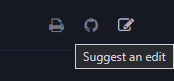
Second way to contribute
This book is written using mdBook. To contribute to this book, you will need:
VSCodium or VSCode is highly recommended to use. Although it is optional, I will assume you are using it.
Below I describe the setup steps needed to run and contribute to this book. But before that, go and install VSCodium and Git.
Forking book repository
Contributing to this book follows the standart "Pull Request" workflow. That basically means that you will have your own copy of the book, and you will ask us to pull your changes into the main repository.
Here is the overview of steps needed for contributing:
- Copy ("fork") the main repository
- Download your copy of repo
- Add your changes to your copy
- Upload your changes
- Open the Pull Request to merge your changes into main repository
Welp, let's get started. I hope you already have a GitHub account.
Forking
- Go to the main repo
- Press the fork button
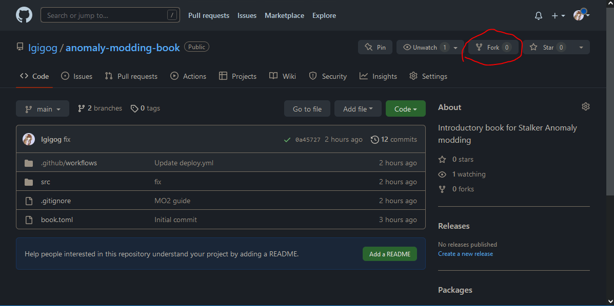
- Create the fork
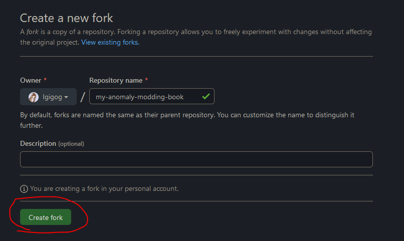
- You're awesome
Downloading your repo
- Open the folder you want to download into in VSCodium. In my case, it will be Desktop.

- Open Poweshell Terminal session
- Copy the link to your repo.

- Run the following command in your Powershell Terminal with your link instead of LINK.
git clone LINK
- You're awesome.
Running local copy
- Download latest mdbook from Github Releases.
- Drop
mdbook.exein the root folder of your copy. - Run
run.bat. In case it doesn't open by itself, open localhost:3000 in your browser. - Done. You're awesome.
Uploading your changes
-
Set your git up. Here's a great guide
-
Add your changes using VSCodium git tab. Open git tab, hover over "Changes" line and press "+".

- Add a nice message and press "✔" to commit your changes

- You should now be able to publish your changes

Creating Pull Request
- In main book repository, open "Pull Requests" tab and press "New pull request"
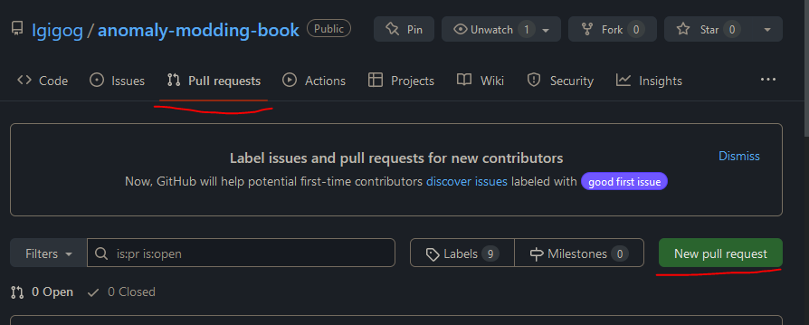
-
Press "compare across forks". Choose your repository and press "Create pull request".
-
You're awesome. Probably. Now ping Igigog#6387 in Discord to get your pull request reviewed.
-
Done. Your changes are added to the main book.
P.S
If you will be using VSCodium or VSCode, it is recommended to install markdown extensions to make life easier or to avoid messing up the book structure.
For example such as:
- Markdown Link Updater - Updates Markdown links automatically, when files in the workspace are moved or renamed.
- markdownlint - This is a rule library for encouraging standards and consistency for Markdown files.
Acknowledgements
During the development of this book, information was taken from many sites and forums. Here are the main ones:
Also thanks for the advice of individuals:
- Xottab_DUTY#7637 (OpenXRay)
- Daniel(SergeantRogers)#6813 - for providing crash logs
Terminology
Engine
ODE
ODE (Open Dynamics Engine) - is an open physics engine distributed for free as a dynamically linked library. Its main components are an Absolute-Solid Dynamics system and a collision detection system.
A-Life
A-Life (Artificial Life) - artificial intelligence system.
OpenAL
OpenAL (Open Audio Library) - cross-platform application programming interface (API) for working with audio data. A key feature is working with sound in 3D space and using EAX effects.
Models
Dynamic object
Any movable object (which can be displaced from its place regardless of the scripts)
Example:
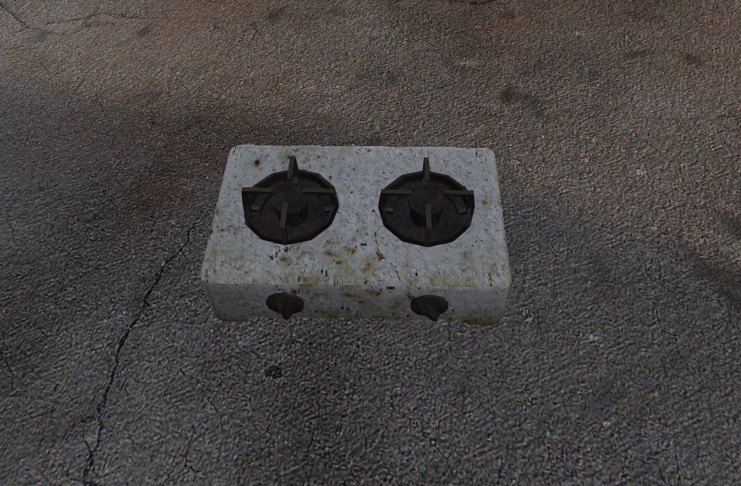
Distinguishing features:
- Has a bone collision
Static object
Any static object at the level
Example (in this case, part of the collision level):
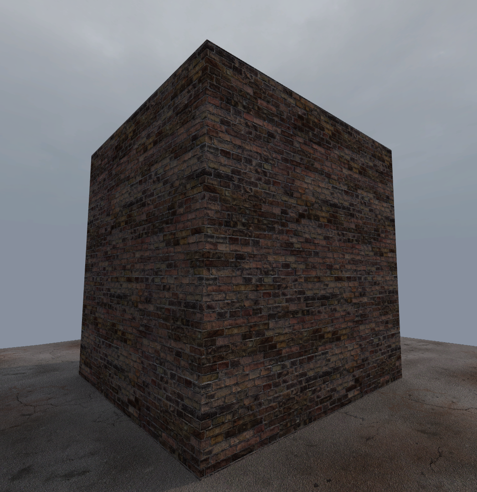
Distinguishing features:
- Does not have a bone collision
Progressive Meshes
One of the methods of dynamic level of detail
object_hud
HUD (Head-Up Display) - is a set of graphical interfaces and decorative elements located in the foreground and/or in the game world, which are designed to clearly and quickly convey to the player the necessary information from the game at a given point in time, without interfering with the gameplay experience.
In stalker modding, object_hud is a model in front of the player in the hands of the character. Usually it is a model of a weapon, grenades, etc.
Example:
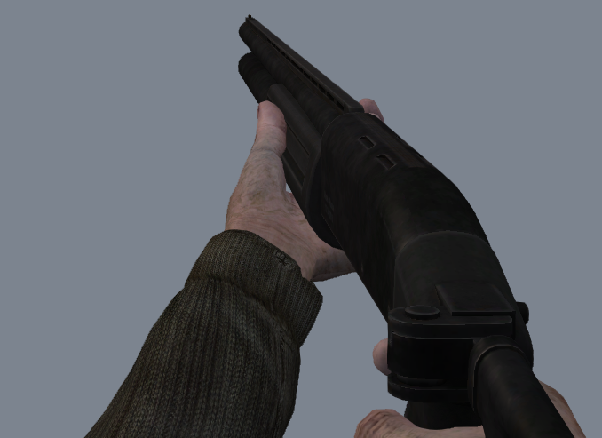
Distinguishing features:
- Does not have a bone collision
object_world
Model, in-game world (NPC weapons, 3rd-person view). The difference from the _hud model is that the _world must have a collision to calculate the interaction with the game.
Example:

Distinguishing features:
- Has a bone collision
- Dynamic object
Animations
object_hud animations
Animations for the _hud object
Getting Started
Installing MO2
This guide is meant to show you how to setup Mod Organizer 2 and how to mod Anomaly in a simple and easy way step by step.
Made by Starcry

What makes Mod Organizer 2 the superior mod manager?
-
Installed addons never touch your original game files, instead they are injected into the game only when you boot it up by utilizing virtual file system.
-
Mod list is easily manageable, unlike with JSGME you can update or make changes to any addons at any time, without the need of enabling/disabling.
-
Shows you which mods are conflicting in details.
Important note: Many antivirus softwares will block MO2 and Anomaly files causing you to have strange crashes, the reliable solution is to scan your MO2 folder for safety, then set an antivirus exclusion to the entire MO2 folder (and to your Anomaly folder).
Installation and instance setup
- Download the latest version of MO2 (Scroll down, download the .exe and install it)
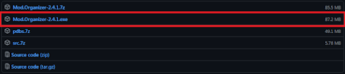
- After getting this error and clicking "OK" select "Create a portable instance" and press next.


- Click "Browse..." and select your S.T.A.L.K.E.R Anomaly folder, name the instance whatever you want and click next.

- The next page will show you where you'r mods and other files for Anomaly mods will be stored, you can leave it as it is and click next.

- Click next again as linking an account to Nexus is not needed.

- After that you should see something like this.

- Congratulations, you paired MO2 with Anomaly successfully. After you click finish MO2 will start up.
Small tutorial
After MO2 boots up you will get 2 popups, one is for an optional tutorial and the other one is for Nexus which we won't need.

In case you skipped the tutorial or didn't fully understand it here's a quick explanation of the most important features:
-
Red highlight shows what you need to click to install addons. -
Yellow highlight shows profiles, you can create how many you want and have different mods enabled on each of them. -
Green highlight shows your virtual game directory, this can be useful for checking which file is being used from which addon. -
Blue highlight is used for starting the game, if you don't start your game with this button your mods won't be activated.

Guide to modding and solving conflicts
On the image below you can see how my MO2 looks, I have a little over 100 addons and a lot of conflicts.

After installing few addons you might notice these icons:
 This little lightning icon with a red minus next to it shows that the addon is being overwritten.
This little lightning icon with a red minus next to it shows that the addon is being overwritten. A lightning icon with green plus means the addon is overwriting another addon.
A lightning icon with green plus means the addon is overwriting another addon. If you see both of these icons it means the addon is overwriting an addon and is being overwritten by one.
If you see both of these icons it means the addon is overwriting an addon and is being overwritten by one.- And last is the grey icon, this icon is next to an addon which is being fully overwritten making it redundant.
To make things work together you need to maintain a load order, that means that you can't just install addons and expect them to all work together, you can start by keeping your load order clean, make some separators (right-click into empty area) like I have in my load order here, after that you can install patches if needed. You can always ask about load orders in the addon-discussion channel.
A good start would be Grok's Community Curated Add-ons List for Anomaly 1.5.1.
Is it better to use a modpack or do everything yourself?
If you are new to modding you might think simply downloading a modpack is the best option, but that might not be the case as most of the time modpacks are the vision of the person who created it - meaning it might have features you won't like and it can be difficult to remove them, you also can't know if it works fine as it's all packed into one folder.
Using a modpack will also mean you won't be able to get help from the community with your crashes as only the modpack creator knows what changes were made and you'll have to rely on them to help you.
Most of the time modpacks aren't being updated frequently and it's near impossible to install any other addon with them.
Solving conflicts
Most of the time it's pretty easy because most popular addons already have existing patches, for example if you wanted to install Boomsticks and Sharpsticks with JSRS you would put BaS first, then JSRS files and then the patch for JSRS that comes with BaS.
Making patches yourself (Not recommended for beginners)
What if there is no patch available and the addons won't work together? You either have to choose which one you want or you can make a patch yourself, the best guide for that is Anomaly modding resource made by community member Jack-it.
Installing addons the right way
Remember that every addon you install needs to have only one gamedata folder, if you find an addon with many optional files you need to install it again every time and select only one gamedata.
As you can see in the picture below I get a popup when trying to install JSRS because it has multiple files, select one and install it, then do it again with the second file (Applies for every addon).
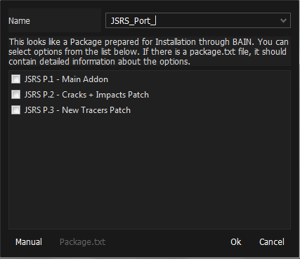
In case you get this popup instead of the one above, you need to expand the filetree and have only option selected, after that you rightclick it and press "set as stalker directory"


In case MO2 crashes when clicking on "manual" addon installation add this text to file ModOrganizer.ini found in Modding/Mo2/:
[CompletedWindowTutorials]
InstallDialog=true
Reporting crashes
Please ignore this if you are using a modpack and report any crashes to the modpack "creator".
If your game crashes and you don't know what caused it go to addon-discussion in Anomaly discord and post your load order along with a log from appdata/logs, it will be a text file named "xray_username".
Converting from JSGME to Mod Organizer 2
To do this you simply have to delete your "gamedata" folder (This will not delete your saves and MO2 will recreate the folder for you) and install the addons you had with MO2, if you don't want to reinstall them you can simply copy the contents of MODS folder to User/AppData/Local/ModOrganizer/Name of your instance/mods.
If you installed addons manually you also need to delete your gamedata folder.
Additional info
If you have any ideas what I should change, fix or add in this guide feel free to ping me on discord (Starcry#4447)
Inspired by lazy stalker guide.
Link to my patreon here ( ͡° ͜ʖ ͡°).
{kind=link}
Credits: d_nan: did absolutely nothing Caesar_salad: also did absolutely nothing

Addon installers
Courtesy of RavenAscendant#7504
MO2 supports 2 kinds of installers. BAIN is the simpler. For BAIN to work you put the gamedata folder for for the main mod into a folder thats name starts with 00. Patches would then go in folders with subsequent numbers. These folders should all be at the root level of the archive.
Example: addon.zip
00 Main
01 BAS patch
02 Optional thing
Files in folders with higher numbers will overwrite those in folders with lower numbers.
BAIN installers present as a list of check boxes. Folders with 00 will be checked by default, all others will be unchecked. Folders at the root of the archive without numbers will not show up in the installer and not be installed.
DNPCAV uses BAIN.
The second is FOMOD Fomod installers can be made to look like a facy windows installer, have preview images, descriptions of what each component does. There is a tool that can help you build a FOMOD installer.
A fomod installer can be built using any folder structure, even the messy one you use now. Or the structure of a BAIN.
Mags Redux has a FOMOD installer but a pretty messy file structure.
SidHUD uses FOMOD but has a BAIN file structure.
Package Naming Guidelines
for Mod Organizer 2
by Ishmaeel
While installing an addon, Mod Organizer 2 can extract a nice name from the archive (ZIP/7Z/RAR):

For more advanced scenarios, you will eventually want to graduate to more powerful installer formats, but for simpler addons, the least you can do for your users is naming your archive package in a way that can be parsed easily by MO2.
Follow these simple rules and your MO2-using audience will be thankful for it:
- Give a descriptive name to your addon.
- Do not separate words with the dash (
-) character. Use underscores (_) or spaces. 1. - Do not use numbers or special characters in the name.
- Separate extra information such as the version number with a dash (
-). - Do not change the name part in subsequent updates. Only change the “version” part.
1 We recommend underscores because spaces have other issues in file names and URLs. You can also consider using PascalCase.
MO2 will scan the file name for numbers, special characters and dashes. Everything after the first special character will be stripped by MO2, leaving behind only the name part. If you use any special characters in the middle of your addon name, MO2 Quick Installer will fail to parse the name nicely and your users will end up having to edit the name manually.
Here is a sample file name that includes extraneous information such as a version number:
ToggleScope-v1.5.zip
This is how MO2 will parse the name during installation:

See that everything after and including the dash is stripped away, leaving only the base name.
Note: MO2 will not use the version part at all. The version displayed in the application will be the addon installation date. If you want to explicitly specify a version number, you will have to use BAIN or FOMOD formats.
As long as you adhere to a similar format and keep the same base name, MO2 will recognize your update as belonging to the same addon and offer to upgrade it in place:
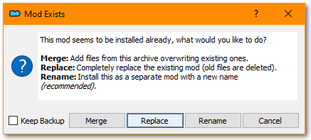
The End.
Author's note: The original version of this guide was motivated by annoyance and frustration, so it ended up missing its mark.
For Anomaly Modding Book, we decided to put the actual advice up front in a sarcasm-free manner. You now know the Right Way™ to name your packages.
If you are not interested in the rationale behind this advice or if you do not appreciate snark, feel free to stop reading here.
For a tongue-in-cheek accounting of commonly made mistakes and their grave consequences, proceed to the next section where we have guidance on...
How to Annoy MO2 Users
A Reverse Naming Guide for Mod Authors
Most people do not know about this, but some players prefer to use an obscure piece of software called Mod Organizer 2. In this section, we outline some simple mistakes you can make while naming your addon packages for maximum annoyance of those wimpy persons.
Please note that this guide does not cover how to annoy Chads™ who extract addons directly into gamedata, overwriting whatever is already there. Frankly, we do not think it is even possible to agitate such strong-willed individuals.
MO2 is a tool that enables those who are unable to keep track of several thousand files. It even tries to cleverly extract the addon name from the package name during installation.
Thankfully, there are many ways to subvert this clever mechanism.
Are You an Alpha Modder?
Disclaimer: If your addon has a single-word name such as Addon.zip or a zero-effort name such as New folder.rar, then this guide has nothing to offer you. You are already at the zenith of human annoyingness. You are the ultimate expert in irritation. We bow before your magnifinuisance.
Inconsistent Naming
The fastest takeaway that you can get from this guide is using a different file name for every single release. If you can bring yourself to do this, you don’t need to read the rest of this guide. By default, MO2 will install every new version as a separate addon and the users will have to type out a name for every upgrade if they want a proper installation. It is a surefire way to piss of MO2 virgins:
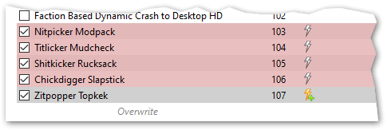
However, if you feel this one is too on the nose and are looking for subtler ways to annoy the unwashed masses, please read on.
All Characters Are Equal but Some Characters Are More Equal than Others
As mentioned previously, MO2 tries to be clever when determining the addon name from the installation package. To do this, MO2 treats some characters differently.
- Alphabetic characters, underscore and space: These are considered “good” characters for addon naming. MO2 will extract all good characters to generate the default name until it finds a junk character. The rest of the file name is ignored.
- Numeric characters, dash and other symbols: These are considered “junk” characters. MO2 does not think an addon name should include these. Anything after (and including) the first junk character is chopped off and thrown to pigs.
Note: MO2 allows the addon names to start with junk characters, but as soon as a good character is encountered, this exception flies out the window for the rest of the name.
Dashes as Word Separators
You will remember that everything after the first dash is simply discarded. As such, you can use dashes to separate words, so that MO2 will mutilate the awesome and catchy name that you picked for your addon:

This also goes for other fancy characters such as apostrophes. Go crazy!
Numerals: Up Front!
What if you have a cool nickname such as Blaze420 and want to flaunt it in your addon? What if you like putting release numbers first, such as Version 1 of My Awesome Menu Replacement.zip? That’s right. Your MO2-wielding audience is in for a surprise:
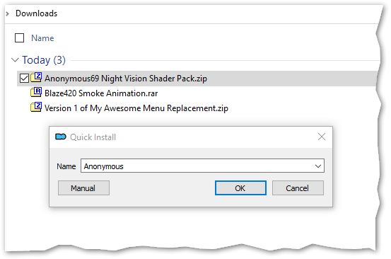
Note that if the file name starts immediately with a number, this trick will not work. But good news! If you can manage to sneak the version number in with a cheaty name like 1.0.3_Brooks_Plagiarized_Audio_Patcher.zip, your anemic MO2 users will now have to edit the name with every. single. update!
Pedantic Versioning
You are releasing a new update for your addon with features, bugfixes and localizations? Do not forget to prepend your version number with the letter “v” so that everybody understands what follows is THE VERSION NUMBER!
This will instantly make your file names look more enterprisey and sophisticated:

See the little “_v” at the end? It’s there to bug the MO2-weaklings. Mission accomplished!
Bonus: For even more devious fun, try separating your version number with an “underscore”, so it gets treated as part of the name:
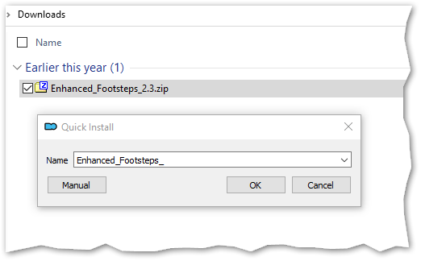
How Not to Smell Like a Filthy UX Hipster
Most importantly, avoid giving descriptive names to your addons and never adhere to a consistent naming format.
If you fail to include one or more of the mistakes above with your every release, those MO2-crybabies will have a minimal-friction upgrade experience, and we don’t want that to happen, do we?
Configuring VSCode-like programs to handle game files
Here will talk about setting up VSCode similar programs to work with game files.
- This article is based on Liner's article on setting up scripts as projects in VSCode
- In this article the setup will be done in VSCodium.
Attention! Not all files can be configured because there are no extensions for their viewing, reading (for example preview .dds textures and others). Some files can only be opened with third-party applications!
Step 1: Installing VSCodium
Just install VSCodium
Step 2. Configuring Extension Associations with a Programming Language
In the settings.json file, in the "files.associations": { specify:
"*.script": "lua",
"*.ps": "hlsl",
"*.cs": "hlsl",
"*.gs": "hlsl",
"*.vs": "hlsl",
"*.s": "lua",
"*.level": "ini",
"*.ltx": "ltx",
"*.seq": "ini",
"*.part": "ini",
"*.part1": "ini"
At the moment these are all the extensions that can be opened in VSCodium
Step 3: Installing extensions
You need to install the following extensions:
-
audio-preview by sukumo28 - provides more detailed data about the sound files. Needed for .ogg files
-
LTX Support by AziatkaVictor - adds support for .ltx files
- extension can be configured, to do this in his settings need to specify the path to the scripts of the game
-
Two extensions for Lua. Needed for .script files:
-
You need a fully unpacked scripts folder to work. You also need to create a workspace for your project. Some files will always give error warnings (e.g.
lua_help- This can be deleted or added to exceptions in the extension from yinfei)
-
Open in External App by YuTengjing - ability to open the file in other applications. Needed for .ogf, .object, .dm, .omf, .dds, .thm, .ogm files
- The extension can be configured by writing in
settings.jsonin the"openInExternalApp.openMapper": [needed programs. Example:
"openInExternalApp.openMapper": [ // 3D models (ogf, dm, object) { "extensionName": "ogf", "apps": "D:\\Нужное\\Modding Tools\\OGF.Editor\\OGF tool.exe" }, { "extensionName": "object", "apps": "D:\\Нужное\\Modding Tools\\Object.Editor.4.35\\Object tool.exe" }, { "extensionName": "dm", "apps": "D:\\Нужное\\Modding Tools\\OGF.Editor\\OGF tool.exe" }, // Textures (thm, dds) { "extensionName": "thm", "apps": "D:\\Нужное\\Modding Tools\\THM_Editor_by_ValeroK\\THM Editor.exe" }, { "extensionName": "dds", "apps": "C:\\Program Files\\paint.net\\paintdotnet.exe" }, // Video { "extensionName": "ogm", "apps": "C:\\Program Files\\VideoLAN\\VLC\\vlc.exe" }, // Animations { "extensionName": "omf", "apps": "D:\\Нужное\\Modding Tools\\OMF.Editor.1.2\\OMF_Editor.exe" }, ], - The extension can be configured by writing in
-
HLSL support and preview for shaders:
-
TGA Image Preview by lunarwtr - Preview .tga files
DLTX
About
Improvement of the engine to allow overwriting .ltx files, avoiding addon conflicts. Allows modders to overwrite only the values they need.
Installation
Back up the contents of your "bin" folder and replace it with the one supplied. The contents of "tools" and "example_mod" include optional resources to make mods for DLTX or to convert existing ones. If you are using Mod Organizer 2 do NOT use it to install DLTX (you can still use it for other mods), you need to paste the files into your real "bin" folder.
Use by modders
In order to make a differential change to the LTX records, you have to follow these steps:
-
Find out which root LTX file is loading the variable you are trying to modify. You can either search the files manually and trace back the chain of #includes, or you can use LTXDiff for this purpose.
LTXDiff findroot [Base Folder] [Mod Folder] [Relative Path to File] -
Once you have found the root file, create a new one in the same directory with the name "mod_[name of the root file]_[name of your choosing].ltx".
-
Make an entry for the section and variable that you want to modify. The section that you want to override has to be prefixed with "!", e.g. ![medkit]. You do not need to include the sections parents again (i.e. do ![medkit], NOT ![medkit]:booster_multi), since they already are in the base definition. Now simply list your variables that you want changed as you usually would.
You can add parents by declaring them like you normally would, or remove them by prefixing them with "!", e.g. "![vodka2]:!vodka, medkit" makes vodka2 behave like a medkit instead of its original parent.
If you want to delete a variable, simply add a line "!variable_name". You can delete sections too, by prefixing them with "!!", however they will only be deleted if all variables they own are deleted too, otherwise the flag won't come into effect.
You can only override sections that already have a base definition. Both loading an override without a base section, or loading multiple base sections will cause crashes. Multiple overrides can be applied to the same section. If multiple mods override the same value, the one that is loaded last will win the conflict over that particular variable. I haven't verified what actually affects the load order, but I'm going to guess it's probably based on the alphabetic order of the file names.
Converting already existing mods
LTXDiff is capable of automatically converting conventional mods into a DLTX-ready format.
Mod suffix in this case is the name that gets appended to the mod files, like in step 2 of the previous section.
Sources
DXML
Intro
DXML by demonized#1084
DXML is a part of modded exes repo
DXML allows to manipulate XML files before they loaded into the engine or scripts by utilizing Lua The engine sends XML string to Lua where it is transformed into DOM-like object (from now on lets call it xml_obj) that can be manipulated by Lua methods and then it is converted back to XML string and sent back to engine
To use it in your mods, you have to create a new script file that is called modxml_<yourname>.script. The yourname can be any string, it doesnt matter. The "modxml_" part must be in the filename.
Then, in this file, type:
function on_xml_read()
RegisterScriptCallback("on_xml_read", function(xml_file_name, xml_obj)
-- XML file i want to change
local xml_to_change = [[text\eng\_game_version.xml]]
-- Check if its the file i want to change
if xml_file_name == xml_to_change then
-- Here is my code to change XML
end
end)
end
What this does is creating a function on_xml_read that will be auto-called from _g.script. This function will register function for new callback "on_xml_read", which accepts two arguments:
- xml_file_name - current XML filename that engine is processing (for example: text\eng_game_version.xml)
- xml_obj - the object described above
To understand, what can be done with xml_obj and what functions it provides, let's take a look at typical usecases:
Case 1: inserting new XML data
Examples: insert new dialog into gameplay\dialogs.xml, insert new scope texture into ui\scopes.xml
This is the simplest case of using DXML, where you just want to insert new data, much like #include directive in XML files
To do this, you can use xml_obj:insertFromXMLString function as in example below:
function on_xml_read()
RegisterScriptCallback("on_xml_read", function(xml_file_name, xml_obj)
-- XML file i want to change
local xml_to_change = [[ui\scopes.xml]]
-- Check if its the file i want to change
if xml_file_name == xml_to_change then
-- Here is my code to change XML
local my_new_scope =
[[
<wpn_crosshair_bino x="0" y="0" width="2048" height="1536">
<auto_static x="0" y="0" width="1024" height="768" stretch="1">
<texture>wpn_crosshair_bino</texture>
</auto_static>
</wpn_crosshair_bino>
]]
xml_obj:insertFromXMLString(my_new_scope)
end
end)
end
This example adds new scope texture into scopes.xml.
insertFromXMLString method has these arguments:
- "xml_string" - XML string to process
- "where" - the element in xml_obj in which new data will be inserted argument is optional and specifies an element subtable of self.xml_table to insert (default - root element)
- "pos" argument is optional and specifies position to insert (default - to the end)
The function returns the position of first inserted element in "where"
Case 2: inserting new XML data in specified element
Example: insert new menu item into ui\ui_mm_main.xml
In order to correctly insert new main menu item, we need to find the <menu_main> element first.
To find an element, you can utilize CSS-like selectors in query function. An example of finding <menu_main> element would be:
local res = xml_obj:query("menu_main")
The function returns a table with all found elements matching this query.
The element is represented by table with following fields:
- el = element type, consists of type symbol, name and attributes. The type symbols are:
- "<" - node element
- "#" - text element
- parent = pointer to a table that contains this element
- kids = table that contains all children of this element
Then we check if table is not empty (the element exists) and insert our xml string with new menu item in position before the end
if is_not_empty(res) then
local el = res[1]
xml_obj:insertFromXMLString([[<btn name="btn_mcm" caption="ui_mm_menu_mcm"/>]], el, #el.kids)
Full code would be:
function on_xml_read()
RegisterScriptCallback("on_xml_read", function(xml_file_name, xml_obj)
-- XML file i want to change
local xml_to_change = [[ui\ui_mm_main.xml]]
-- Check if its the file i want to change
if xml_file_name == xml_to_change then
-- Here is my code to change XML
local mcm_menu = [[<btn name="btn_mcm" caption="ui_mm_menu_mcm" />]]
local res = xml_obj:query("menu_main")
if is_not_empty(res) then
local el = res[1]
xml_obj:insertFromXMLString(mcm_menu, el, #el.kids)
end
end
end)
end
But, if there is already an MCM menu, then you might get duplicated element inside. So we have to check if its already exists before insertion. We can check if element <btn name="btn_mcm"> exists before proceeding by utilizing query again.
Here, similar to CSS, we want to find <btn> element with attribute name="btn_mcm" first. if its found - then make early return from the function
if is_not_empty(xml_obj:query("menu_main btn[name=btn_mcm]")) then
printf("MCM button already exists")
return
end
Full list of available CSS-like selectors are:
- " " (space) - find children of elemenents (can be any depth inside)
- ">" - find direct children
- "+" - find first sibling of element
- "~" - find all siblings
- "[attr1=value1]" - describes attribute
attr1with valuevalue1. To find element that matches multiple attributes you can use[attr1=value1][attr2=value2]and so on
Case 3: Change text inside element
Example: change text of game version in text\eng\_game_version.xml
Getting and setting text is possible if element contains raw text inside, like <text attr1="value1">My Text</text>.
To get text, you can use getText(element) function and to set it use setText(element).
Example below of appending text to existing text in element
function on_xml_read()
RegisterScriptCallback("on_xml_read", function(xml_file_name, xml_obj)
if xml_file_name == [[text\eng\_game_version.xml]]
or xml_file_name == [[text\rus\_game_version.xml]]
then
-- Find string element with "id=ui_st_game_version" text inside it
local res = xml_obj:query("string[id=ui_st_game_version] > text")
if res[1] then
el = res[1]
local el_text = xml_obj:getText(el)
if el_text then
-- Set new text
xml_obj:setText(el, el_text .. ". Modified exes (DLTX, DXML, Shader Scopes, SSS)")
end
end
end
end)
end
Case 4: changing attribute of element
Example: change position of money display in ui\ui_inventory.xml
First, find <money> element inside <player> element and then change its x, y attributes by using setElementAttr function
setElementAttr(el, args)
- el - element found using
query - args - table of attributes ({attr1 = value1, attr2 = value2})
To get attributes of element, use getElementAttr function, it returns a table of attributes described above
getElementAttr(el)
- el - element found using
query
To remove attributes of element, use removeElementAttr function
removeElementAttr(el, args)
- el - element found using
query - args - list of attributes to remove ({attr1, attr2})
function on_xml_read()
RegisterScriptCallback("on_xml_read", function(xml_file_name, xml_obj)
if xml_file_name == [[ui\ui_inventory.xml]]
then
-- Find string element with "id=ui_st_game_version" text inside it
local res = xml_obj:query("player > money")
if res[1] then
el = res[1]
xml_obj:setElementAttr(el, {x=20, y=60})
end
end
end)
end
PS
Full list of methods is described in _g.script in COnXmlRead function
Monkey patching
Courtesy of RavenAscendant#7504
All code snippets used in the guide are licensed under a Creative Commons Attribution-NonCommercial-ShareAlike 3.0 Unported License
This guide is specifically written for modding Anomaly. Much of it will apply with minor changes to any STALKER modding. The concept is not limited to STALKER or even lua, Minecraft modding makes extensive use of monkey patching in Java.
Monkey patching is the practice of modifying code at run time. Instead of modifying the script file directly the modifications are done in memory by a second script. The primary reason for doing this in Anomaly is compatibility. If two addons are distributed with an edited version of the same Anomaly game script the two addons will be incompatible without patch. Worse than incompatible they will most likely cause crashes if installed together. Monkey patching doesn’t guarantee compatibility, if two addons change the same thing in different ways it is unlikely to behave properly, however the likelihood of crashing is significantly reduced.
First a caution, it is always better to simply use call backs. There are a significant number of call backs that allow you to change the way Anomaly plays. Editing Anomaly scripts directly or by monkey patching should only be done if there is no other way. Once one script starts changing the flow of another it becomes significantly harder to figure out what is actually going on.
In general Anomaly scripts are loaded in alphabetical order. When you monkey patch a script that hasn’t loaded you force it to load. If two monkey patches are applied the script that comes last wins. Starting the name of your script with a z means that it will load after most other scripts. While only sometimes necessary and very rarely problematic, the strong suggestion to do so in an earlier version of this guide has resulted in a convention of starting monkey patch scripts with z or zzz.
If a function or variable in a script is declared as local other scripts can’t manipulate it. None of the below techniques will work on local functions or variables.
Patching Variables
The simplest monkey patch only changes variables. Instant tooltip does this. It uses a callback to watch for the inventory UI being opened and when it is changes the delay for the tool tip:
function on_game_start()
RegisterScriptCallback("GUI_on_show", delay_change)
end
function delay_change(name, path)
--return quickly if not the GUI we want
if not (name ~= "UIInventory") then return end
ui_inventory.GUI.item_info.delay = 80
ui_inventory.GUI.upgr_info.delay = 80
end
The changes can be far more complex, an example of reaching into a complex nested table is how SidHud adds itself into the game settings UI with its inject_options_UI() function.
Patching existing Callbacks
The next method is unregistering a Callback. The most obvious use of this is to stop a game script Callback from being run at all so that you can completely replace its functionality, however there are some more fine tuned uses. The order in which Callbacks from various scripts are run is not something that can be relied upon. If you have something that needs to happen before or after a game script Callback the most reliable method is to unregister the games Callback and then call the function directly from your own Callback at the correct timing. Similarly you can use this method to prevent a Callback from running in particular cases. Such as preventing itms_manager.script from creating a half eaten chocolate bar when a chocolate bar is used:
function on_game_start()
UnregisterScriptCallback(("actor_on_item_use", itms_manager.actor_on_item_use)
RegisterScriptCallback("actor_on_item_use", test)
end
function test(obj)
if (obj:section() == "chocolate") then return end
itms_manager.actor_on_item_use(obj)
end
The above code has an example of the fact that functions are variables like any other, they can be passed to a function just like a number. They can also be assigned to another variable name just like a number and a function name can be assigned a new value, new code. It is this feature of lua that allows the most powerful monkey patching to work.
Patching Functions
The same way that scriptname.function can be used to call a function in another script it can also be used to save a copy of that function, this can be used to shorten a long function name
ga = utils_item.get_ammo
ga(section, id) -- this is the same as utils_item.get_ammo(section, id)
The scriptname.function syntax can also be used to assign new code (example from first version of Headlamp Animation Fix).
base_Hit_TorchToggle = actor_effects.Hit_TorchToggle
function actor_effects.Hit_TorchToggle()
local animation_setting = axr_main.config:r_value("options","video/player/animations", 1)
if animation_setting then
base_Hit_TorchToggle()
else
item_device.toggle_torch()
end
end
The order there is important. It is necessary to save a copy of the old function first, before you modify it, if you plan on using it later.
Now when any script calls actor_effects.Hit_TorchToggle() it will call the above function instead.
It is important to understand that no matter what name you give a function it can only access local variables in the script it is written in.
Patching xray/luajit “classes”
TL;DR: lua oop doesn’t use classes, but, for reasons, X-Ray’s lua does and we can patch either or both the classes or the instance objects. What the : (colon) operator really does. The : operator in lua is simply a shortcut. Any function defined with a : can be called without it.
foo:start()
foo.start(foo)
Those are equivalent.
Similarly a function can be defined without it.
function foo:start()
…
end
function foo.start(self)
…
end
When calling a function the : acts like . but also passes the table to it’s left as an invisible first parameter to the function on the right.
When defining a function : acts like . but also inserts the variable self at the beginning of the parameter list. This syntax allows lua oop to have a familiar syntax.
LUAJit Classes TODO
Some closing notes.
Dealing with local.
Sometimes you can get lucky if you dig a bit deeper. Actor_effects.actor_on_item_use is declared local. Not only can you not change it, you also cannot unregister the callback that it is assigned to. However all Actor_effects.actor_on_item_use does is call Actor_effects.play_item_fx(obj:section()) which is not local. Actor_effects.actor_on_item_use can be modified or disabled by patching Actor_effects.play_item_fx. (Be careful tho, that particular function is called from other places as well, and if you don’t want to disable them then you may need to get very creative or are out of luck.)
When it comes to local variables it may be possible to calculate them yourself in your script, this is very easy for constants, harder for things that change, but if you really need to monkey patch yourself into every function that changes that variable and duplicate the calculations before calling the original function, this should keep your copy in step with the original. Watch out for side effects.
If any Anomaly Devs are reading this I strongly recommend that all Callback functions be made not local to allow for unregistering them. TBH i’d like to see local only used for function scoped variables with all globals and functions available from outside the script.
Useful addons, scripts and utils
DRAGGABLE HUD EDITOR
Allows you to change hud values in weapon hud editor by dragging your mouse
Source
Anomaly Dependencies
Various autoinject script modules for use by other scripts
Source
Anomaly Demonized Scripts
Source of not so truthy repo for all uncommon anomaly dependencies
Source
Anomaly Addon Dependencies
Various utility scripts of objectionable quality for STALKER: Anomaly
Sources
Monitor Mod DB
Mod DB comment monitor for addon authors
Source
Crashes List
Error description
- Expression - Expression in the engine code, which gives an error
- Function - Name of the function where the error occurred
- File - File where the error occurred
- Line - Line in File where the error occurred
- Description - Possible problem description
- Arguments - Argument causing the error
Warning! This list is only for the vanilla version of the game! If you use engine edits, the logs of crashes may be different!
Models
Line 120
Line 120
[error]Expression : <no expression>
[error]Function : CModelPool::Instance_Load
[error]File : ..\xrRender\ModelPool.cpp
[error]Line : 120
[error]Description : fatal error
[error]Arguments : Can't find model file "path and file name".
-
Clarification: No 3D .ogf model was found
-
Error fixing:
- Check that the model exists
- Check that the paths to it are correct
Animations
Line 784
Line 784
[error]Expression : <no expression>
[error]Function : CKinematicsAnimated::Load::<lambda_1d323dfa2c5eacee46e042904e528af6>::operator ()
[error]File : ..\xrRender\SkeletonAnimated.cpp
[error]Line : 784
[error]Description : fatal error
[error]Arguments : Can't find motion file "path and file name".
-
Clarification: No .omf animation was found
-
Error fixing:
- Check that the animation exists
- Check the correct paths to it in the Motions Reference of the model
Animated Paths
Line 47
Line 47
[error]Expression : <no expression>
[error]Function : CObjectAnimator::LoadMotions
[error]File : ObjectAnimator.cpp
[error]Line : 47
[error]Description : fatal error
[error]Arguments : Can't find motion file "path and file name".
-
Clarification: No .anm file was found
-
Error fixing:
- Check that the .anm file exists
- Check that the paths to it are correct
A-Life
Line 49
Line 49
[error]Expression : false
[error]Function : CPatternFunction::vfLoadEF
[error]File : ef_pattern.cpp
[error]Line : 49
[error]Description : assertion failed
-
Clarification: No .efd file was found
-
Error fixing:
- Check that the .efd file exists
Line 60 (This is a theoretical crash (needs checking!))
Line 60
[error]Expression : false
[error]Function : CPatternFunction::vfLoadEF
[error]File : ef_pattern.cpp
[error]Line : 60
[error]Description : assertion failed
-
Clarification: Not supported version of the Evaluation Function Contructor
-
Error fixing:
- The .efd file must be generated with a supported version of the Evaluation Function Contructor (?)
Spawn
Line 86
Line 86
[error]Expression : FS.exist(file_name, "$game_spawn$", *m_spawn_name, ".spawn")
[error]Function : CALifeSpawnRegistry::load
[error]File : alife_spawn_registry.cpp
[error]Line : 86
[error]Description : Can't find spawn file:
[error]Arguments : "file name"
-
Clarification: No .spawn file was found
-
Error fixing:
- Check that the .spawn file exists
Line 60 (This is a theoretical crash (needs checking!))
Line 60
[error]Expression : R_ASSERT2(file_stream.find_chunk(SPAWN_CHUNK_DATA)
[error]Function : CALifeSpawnRegistry::load
[error]File : alife_spawn_registry.cpp
[error]Line : 60
[error]Description : Cannot find chunk SPAWN_CHUNK_DATA!
-
Clarification: No chunk
SPAWN_CHUNK_DATAwas found in .spawn file -
Error fixing:
Line 111 (This is a theoretical crash (needs checking!))
Line 111
[error]Expression : R_ASSERT2(!save_guid || (*save_guid == header().guid()) || ignore_save_incompatibility()
[error]Function : CALifeSpawnRegistry::load
[error]File : alife_spawn_registry.cpp
[error]Line : 111
[error]Description : Saved game doesn't correspond to the spawn : DELETE SAVED GAME!
-
Clarification:
-
Error fixing:
Line 141 or 147 (This is a theoretical crash (needs checking!))
Line 141 or 147
[error]Expression : R_ASSERT2(chunk, "Spawn version mismatch - REBUILD SPAWN!"); or R_ASSERT2(m_chunk, "Spawn version mismatch - REBUILD SPAWN!");
[error]Function : CALifeSpawnRegistry::load
[error]File : alife_spawn_registry.cpp
[error]Description : Spawn version mismatch - REBUILD SPAWN!
-
Clarification:
-
Error fixing:
LTX
Line 96
Line 96
[error]Expression : FS.exist(fn, "$game_textures$", buf, ".ini")
[error]Function : CGameFont::Initialize
[error]File : GameFont.cpp
[error]Line : 96
[error]Description : "path and ui_font_hud_01.ini"
-
Clarification: No ui_font_hud_01.ini file was found
-
Error fixing:
- Check that the .spawn file exists
LUA
191
Line 204
[error]Expression : <no expression>
[error]Function : CScriptEngine::lua_pcall_failed
[error]File : ..\xrServerEntities\script_engine.cpp
[error]Line : 204
[error]Description : fatal error
[error]Arguments : LUA error: ...e.r anomaly/bin/..\gamedata\scripts\xr_weapon_jam.script:62: bad argument #1 to 'pairs' (table expected, got nil)
-
Clarification:
-
Error fixing:
Main Folders And Files
Root folder
fsgame.ltx
Contains paths to folders with the necessary files
appdata
logs
This is where the game logs are created and stored (log of loading objects, textures, etc.)
savedgames
This is where game saves are created and stored. Inside are files with the extensions .scop and .scoc.
screenshoots
This is where game screenshots are created and stored
shaders_cache
This is where the game shader cache is created and stored
"username".ltx
This file describes the game settings.
bin
Contains the .exe files of the game renders, the configuration for OpenAL and .dll libraries
db
Contains packaged game files. This folder has a higher priority of files, which means that if there is no file in the gamedata folder, the game will look for it here
gamedata
Folder with game files
Folders
ai
Contains the .efd files needed for the AI
anims
Contains .anm, .anms files for camera animation and .ppe files for postprocessing
configs
levels
Contains the necessary files for the levels
meshes
Contains .ogf, .dm, .omf file needed for models and skeleton animation
scripts
Contains .script files for game scripts
shaders
Contains various files for shaders
sounds
Contains .ogg files for various music, sounds, ambient, etc.
spawns
Contains a file
all.spawn- it describes all spawn spots on locations
textures
Contains .dds textures
Files
gamemtl.xr
Contains game materials
lanims.xr
Contains animations of lights
particles.xr
Contains Particles
senvironment.xr
Contains settings for sound environment zones
shaders.xr
Database of the shaders used by the graphics engine
shaders_xrlc.xr
Database of shaders used by the level compiler
textures.ltx
Contains pathes to all textures
tools
Contains some resources for modding, like a version icon for addons, a resource converter and .bat files for unpacking .db files
File Formats
This section describes the extensions that are found in the game files and the SDK.
Before reading the files, it is recommended that you read this article
General
| Extension | Description |
|---|---|
| .log | Event log. It contains records of program start, operation and termination |
| .scop | Save file |
| .scoc | Save file |
| .xrdemo | Recording camera flyover (demo). Created in the game with a console command. |
Configuration and script files
| Extension | Description |
|---|---|
| .ltx | Configuration file, custom ini-like format |
| .script | Game script |
| .xml | Carry in text format data related to in-game text, UI element placement, and characters and information within the game world |
| .seq | Text file containing a description of the frame sequence in the 2D animation |
Textures
| Extension | Description |
|---|---|
| .bump | Normal map in A(BGR) format |
| .bump# | File that fixes DXT compression errors in .bump |
| .dds | Graphic file used by DirectX to store textures |
| .tga | A bitmap graphics format with support for color depth of 1-32 bits per pixel, alpha channels, and RLE compression. Used as a source format. |
| .thm | They are used to set the parameters of textures - bump, detail, and more. |
AI
| Extension | Description |
|---|---|
| .efd | Table of AI heuristic parameters, contains constants for fine-tuning A-Life. They are used as input parameters in scripts. |
Video
| Extension | Description |
|---|---|
| .ogm | The video format used by the game engine. |
Sound
| Extension | Description |
|---|---|
| .ogg | The sound format used by the game engine. |
Shaders
| Extension | Description |
|---|---|
| .cs | Compute shader |
| .gs | Geometry shader |
| .vs | Vertex shader |
| .ps | Pixel shader |
| .s | Script shader. LUA version of engine blenders |
Models
| Extension | Description |
|---|---|
| .dm | Effect of a dynamic weather environment (e.g., rain or lightning) |
| .object | These files are intended for the X-Ray SDK to store 3D content in its original, uncompressed, lossless form. They are source files that store information before compilation into other game compressed formats. |
| .ogf | Compiled objects |
Animations
| Extension | Description |
|---|---|
| .anm | A set of coordinates, which works as an animation of the actor's camera movement. It is also used for anomalies, which need to be given a path. |
| .skl | Skeletal animation |
| .skls | Skeletal animations(.skl) in a container |
| .omf | A specialized S.T.A.L.K.E.R. game format containing animations. This is a separate dedicated file used in conjunction with .ogf models. Was created in order to optimize process when some different models use the same list of animations. |
Archives and Resource Packages
| Extension | Description |
|---|---|
| .db | archive of game resources. Used in late builds and the final version of the game, has several options (db."number", db."letter"). |
| .xr | resource library. Contains resources such as particles, shaders, etc. in a packed format. |
Game level
| Extension | Description |
|---|---|
| .err | Contains information about geometry errors during level compilation |
| level | File with general information about the game location (light sources, object names, texture and shader names, sectors and portals). Created by xrLC during compilation. Opened only by the game. |
| .prj | Level precompilation file |
| .ai | AI location grid. Created by xrAI when compiling. Opened only by the game. |
| .cform | Geometry for calculating collisions. Calculated by the level compiler. Contains a solid map structure. All tangible objects with materials live here. Because of this, the game knows with what sound and property objects should react when they are hit by bullets or walked on |
| .details | Detailed objects (grass, cigarette butts, construction debris) on the level. Created through LevelEditor SDK at compile time. |
| .env_mod | local environment modifiers (environment), set areas on the location with lighting different from the main weather cycle. |
| .fog_vol | Volumetric fog |
| .game | Coordinates of the player's spawn in the multiplayer game. Outdated file. |
| .geom | Contains vertices (position, normals, texture coordinates, etc.), indices, and information for smooth geometry detail. |
| .geomx | It contains only geometry. In the renderer it is used in the shadow rendering passes, due to the fact that there is less information - loading data into the buffers - faster. |
| .gtc | Cross table of correspondence between the location graph and the AI grid. It is created when compiling the map in LE KFK (xrAI). |
| .hom | Mapping of hierarchical cutoffs |
| .level | List of SDK scene objects |
| .lights | Light sources for xrLC |
| .ps_static | Particle systems. Flies, steam from pipes, etc. |
| .graph | Global graph of AI navigation. Used, among other things, for moving AI objects outside the active level. |
| .spawn | A file storing spawn data. |
| .snd_env | Volumetric sound sources. |
| .snd_static | Static point sources of sound. Sound of flies, etc. |
| .som | Geometry for calculating sound propagation. |
| .wallmarks | Decals. Bloodstains, faction emblems on walls, etc. Used for the compiled level. |
Postprocess
| Extension | Description |
|---|---|
| .ppe | Postprocess file format. |
Binary files
About
This article is an introduction to binary files.
Before reading the other articles in the "File Formats" category, you should read this one first.
Structure
In binary files, bytes are represented in reverse order.
For example, the number 0x12345678 in a file would look like this: 78 56 34 12.
Data types
Let's introduce the notation of data types.
These notations will be used in other articles.
| Designation | Type | Range | Size (bytes) |
|---|---|---|---|
| B | Integer | 0 ... 255 | 1 |
| H | Integer | 0 ... 65535 | 2 |
| I | Integer | 0 ... 4294967295 | 4 |
| i | Integer | -2147483648 ... 2147483647 | 4 |
| f | Fractional number | - | 4 |
| s | String | - | - |
In some files a value may not be stored in the whole byte, but only part of it (e.g. 4 bits).
As a result, one byte will store two values.
In articles about binary files, sizes will be specified either in bits or in bytes.
Strings necessarily have a null byte at the end, which indicates that the string has ended. For example: "test_string0x0".
As a result, the length of the string is equal to the number of characters in it + 1 (null byte).
Blocks
In X-Ray, some binary files are in RIFF format.
Such files have blocks (also called chunks or sections).
A block is binary data with a header.
Block structure
| Data | Type |
|---|---|
| Identifier | H |
| Compression | H |
| Content size (bytes) | I |
| Content | Binary data |
You can see from the identifier what is stored in a particular block.
If the compression is set to 0x0000, the block is uncompressed, and if it is set to 0x8000, the block is compressed by the Huffman method.
You can use a program from xray_re_tools (trunk\garbage\lzhuf\lzhuf.c) to decompress compressed blocks.
In the files of the final version of the game most blocks are uncompressed.
The size of the block content indicates only the number of bytes of data (not including identifier, compression and size bytes).
Binary block data can be represented by nested blocks.
Sources
.anm (Animated paths)
About
A set of coordinates, which works as an animation of the actor's camera movement. It is also used for anomalies, which need to be given a path.
Technical information
- Order of rotation: YXZ
Interpolation types
- TCB
- BEZIER_2D
- BEZIER_1D
- LINEAR
- HERMITE
Programs editing this file
.cform (Collision Form)
About
Contains a solid map structure. All tangible objects with materials live here. Because of this, the game knows with what sound and property objects should react when they are hit by bullets or walked on
Technical information
- Format version: 4
The file consists of one block, which contains the following
| Value | Size | |
|---|---|---|
| Version | 4 for build 1537 and higher | DWord(4) |
| Number of vertices | - | DWord(4) |
| Number of triangles | - | DWord(4) |
| BBox diagonal | - | 24 bytes |
| vertices | - | - |
| triangles | - | - |
BBox
BBox describes the entire map, including absolutely all static objects. The BBox diagonal is represented by two vertices that have the same format as the others:
| Coordinates | Offset | Size |
|---|---|---|
| X coordinate | 0 | Single(4) |
| Z coordinate | 4 | Single(4) |
| Y coordinate | 8 | Single(4) |
Triangle
| Offset | Size | |
|---|---|---|
| First Index | 0 | DWord(4) |
| Second index | 4 | DWord(4) |
| Third index | 8 | DWord(4) |
| Material ID (14 bits) and flags in the two highest bits | 12 | Word(2) |
| Sector number | 14 | Word(2) |
Programs editing this file
Sources
.dds (DirectDraw Surface)
About
DDS is most often used to store textures and is used in many 3D applications, as well as in modern 3D games. It allows you to store textures both in compressed and uncompressed form.
Technical information
Format
- RGB - Diffuse colour
- A - Alpha (Used for translucent/transparent shaders like glass/grass)
The engine currently supports the following compressions
- DXT1
- DXT5
Programs editing this file
- Any program that works with .dds files (Example: Paint.net or GIMP)
bump.dds
About
The bump map is a regular normal map in A(BGR) format (typical for DXT5_nm compression format). The developers used this order for a very simple reason - DXT compression "spoils" the texture much less, since the alpha channel is not subjected to compression and remains almost in its original form.
Technical information
Format
- R - Glossiness (Glossiness, aka inverted roughness. It works best in stalker, and allows for using better BRDF)
- G - Normal Z (Unused in Anomaly 1.6.0)
- B - Normal Y (DIRECTX format.)
- A - Normal X
The engine currently supports the following compressions
- DXT5
- BC7
Can be generated by
bump#.dds
About
Corrects DXT compression errors in .bump
Technical information
Format
- RGB - Error correction for normal map (bump.dds) - Not necessary if you're using good quality normal map. It's generated with SDK
- A - height map; used for parallax, if the use of it was turned on when setting up the texture
The engine currently supports the following compressions
- DXT5
- BC7
Can be generated by
.details
About
Detailed objects (grass, cigarette butts, construction debris) on the level
Technical information
- Format version: 3
General structure - file blocks
It consists of three RIFF sections (blocks):
| Block ID | Size (bytes) | Description |
|---|---|---|
| 0x0 | 24 | headline |
| 0x1 | - | object models (in .dm format) |
| 0x2 | - | table of 2x2 meter cells, setting the density and species diversity of objects on the map |
Block order in version 3: 0x1, 0x2, 0x0
One cell (slot) is a parallelepiped.
The dimensions of all cells along the X and Z axes are the same and equal to 2 meters.
The height of the slot (the dimensions of the parallelepiped along the Y axis) in all the slots is individual.

slot in the Level Editor
Blocks
Block 0x0 (header)
| Type | Description |
|---|---|
| I | format version |
| I | number of dm models in the file |
| i | offset of the table cells along the X axis |
| i | offset of the table cells along the Z axis |
| I | the number of table cells on the X axis |
| I | the number of table cells on the Z axis |
Block 0x1 (meshes)
A block consists of nested blocks.
The nested block identifier is the mesh index of the detailed object.
Nested block data is a mesh in .dm format
Block 0x2 (slots/cell table)
The block stores cells (slots).
The slots in this block are written alternately.
Up to four meshes of detailed objects can be attached to each slot.
The mesh index of a detailed object can be in the range [0 ... 62] (63 is no mesh).
One slot's data is stored in 16 bytes (128 bits), which store the following:
| Size (in bits) | Description |
|---|---|
| 12 | Coordinate of the bottom edge of the slot on the Y axis (this value should be multiplied by 0.2 meters) |
| 8 | Height of the slot (this value should be multiplied by 0.1 meter) |
| 6 | Identifier of the first mesh of vegetation |
| 6 | Identifier of the second mesh of vegetation |
| 6 | Identifier of the third mesh of vegetation |
| 6 | Identifier of the fourth mesh of vegetation |
| 4 | Shade from the sun |
| 4 | Hemi lighting |
| 4 | Red component of static light sources |
| 4 | Green component of static light sources |
| 4 | Blue component of static light sources |
| 4 | Density of the first mesh in the left front corner of the slot |
| 4 | Density of the first mesh in the right front corner of the slot |
| 4 | Density of the first mesh in the left rear corner of the slot |
| 4 | Density of the first mesh in the right rear corner of the slot |
| 4 | Density of the second mesh in the left front corner of the slot |
| 4 | Density of the second mesh in the right front corner of the slot |
| 4 | Density of the second mesh in the left rear corner of the slot |
| 4 | Density of the second mesh in the right rear corner of the slot |
| 4 | Density of the third mesh in the left front corner of the slot |
| 4 | Density of the third mesh in the right front corner of the slot |
| 4 | Density of the third mesh in the left rear corner of the slot |
| 4 | Density of the third mesh in the right rear corner of the slot |
| 4 | Density of the fourth mesh in the left front corner of the slot |
| 4 | Density of the fourth mesh in the right front corner of the slot |
| 4 | Density of the fourth mesh in the left rear corner of the slot |
| 4 | Density of the fourth mesh in the right rear corner of the slot |
As you can see from the table, each slot has 16 density values.
Each of the four meshes has four density values (for the four corners of the slot).
The density values within a slot are interpolated from the density values of the slot corners.
Let us denote the densities as follows:
-
a0 - density for the left front corner of the slot
-
a1 - density for the right front corner of the slot
-
a2 - density for the left rear corner of the slot
-
a3 - density for the right rear corner of the slot
If you look at the slot from above, the densities will look like this:
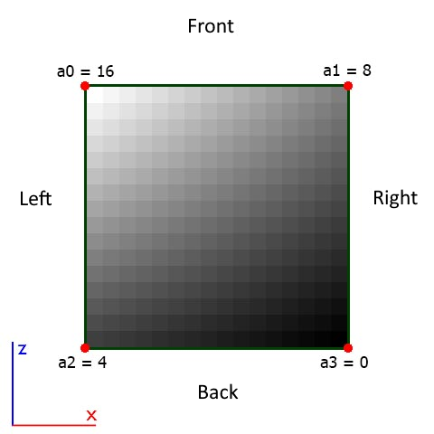
Mesh density, slot view from above
Restrictions are imposed on the position of slots along the Y axis.
The lower limit is -200 meters.
And the allowed range: from -200 meters to 619 meters (0.2 * 4095 - 200).
The maximum height of the slot (parallelepiped) is: 25.5 (0.1 * 255).
The upper boundary of the slot is equal to: the lower boundary + the height of the slot.
Programs editing this file
Sources
.dm (Detail Model)
About
Effect of a dynamic weather environment (e.g., rain or lightning)
Technical information
It works like this: UV descends down the Y coordinates to the texture

Format limitations
- Must have one material
- Does not support antialiasing
General structure
| Data |
|---|
| shader name |
| texture name |
| flags |
| minimum size |
| maximum size |
| number of vertices |
| number of indexes |
| vertices |
| indexes |
Structure description
Shader name
| Data | Type | Description | Example |
|---|---|---|---|
| shader name | s | The line that specifies the name of the shader from the shaders.xr file | effects\lightning0x00 |
Texture name
| Data | Type | Description | Example |
|---|---|---|---|
| texture name | s | A string that specifies the path and the name of the texture | fx\fx_rainsplash10x00 |
Flags
| Data | Type | Description | Example |
|---|---|---|---|
| flags | I | These are options. Used in the file level.details | If 0x0, the vegetation swings in the wind (bushes), and if 0x1, it is stationary (leaves) |
Minimum size
| Data | Type | Description | Example |
|---|---|---|---|
| minimum size | f | The minimum size of the model. These values are used in the level.details files | - |
Maximum size
| Data | Type | Description | Example |
|---|---|---|---|
| maximum size | f | Maximum model size. These values are used in the level.details files | - |
Number of vertices
| Data | Type | Description | Example |
|---|---|---|---|
| number of vertices | I | Number of vertices in a mesh | - |
Number of indexes
| Data | Type | Description | Example |
|---|---|---|---|
| number of indexes | I | Number of indexes by which triangles are built | - |
Vertices
The vertices are stored sequentially.
The structure of a single vertex:
| Data | Type |
|---|---|
| 3D coordinate x | f |
| 3D coordinate y | f |
| 3D coordinate z | f |
| texture coordinate u | f |
| texture coordinate v | f |
Restrictions are imposed on the vertices:
- one vertex may have only one texture coordinate. When saving the model in *.dm, a vertex that has two (or more) texture coordinates is converted into two (or more) vertices.
- Their number should not be more than 65536, because their triangle indices are stored in 2 bytes.
Indexes
The indices of the vertices by which triangles are formed.
The indexes are stored sequentially.
The index structure:
| Data | Type |
|---|---|
| vertex index | H |
Programs editing this file
Sources
.object
About
These files are intended for the X-Ray SDK to store 3D content in its original, uncompressed, lossless form. They are source files that store information before compilation into other game compressed formats.
Technical information
The format can store the following basic data (the list is not complete)
- meshes
- materials
- bones
- skeleton animations
Possibilities and limitations of the .object format
One *.object file can store:
- one or more meshes if it has no skeleton and only one meshes if it has a skeleton
- one or more materials
- a skeleton can be absent, or it can hold at least one
- a skeleton can store a minimum of 1, a maximum of 64 bones (for X-Ray SDK 0.4)
- skeleton animations may not be present, or one or more animations may be stored
- skeleton animations do not support Scale keys
- each mesh can have one or more materials
- each mesh must have one UV scan
- each material can store only one texture
Programs editing this file
- Blender (X-Ray Addon)
- X-Ray Export Tool (Object Tool)
- Ogf Editor by ValeroK - (Only as a converter!)
- SDK 0.7
Sources
.omf (Open Motions Format)
About
A specialized S.T.A.L.K.E.R. game format containing animations. This is a separate dedicated file used in conjunction with .ogf models. Was created in order to optimize process when some different models use the same list of animations.
Technical information
They are in RIFF format. That is, the file is divided into chunks. The omf file consists of two chunks:
-
0xE - stores animations (rotation, movement of bones)
-
0xF - stores the Bone Parts and animation parameters.
These chunks can be found inside the ogf files. In other words, an omf file is a slice of an ogf file that is moved to an external file. The structure of the 0xE and 0xF chunks in ogf is identical to those in omf.
The structure of the 0xE chunk
This chunk consists of nested chunks. The first nested chunk is the one with the identifier 0x0. The zero chunk stores an unsigned 32-bit integer number. This number indicates the number of animations in the omf file. The identifier of each subsequent chunk is one more than the previous one. That is, 0x0 is followed by 0x1, then 0x2, 0x3, etc. All the chunks following 0x0 contain animations. Description of the nested chunk that stores the animations The animation name comes first, which is a string ending with a null byte. Next is an unsigned 32-bit integer, which specifies the number of animation frames. The following data is the dice transforms. For each bone, rotation, movement, and flags are stored. Flags come first. Flags is an unsigned 8 bit integer. The first bit of this byte indicates if the movement is modifiable. If the bit is 1, then the movement has values throughout all frames. If the bit is 0, then the movement has only one value for the entire animation interval. This is done to optimize it so that it doesn't store a bunch of identical keys, but instead has a single value. The second bit of this byte indicates whether the rotation is static (not changing throughout the animation). The third bit is the High Quality flag. If it is 0, then the position has an 8-bit representation, otherwise it is 16-bit. Next comes the information about the rotation. What will be written to the file next depends on the flags. If the second bit of the flag is 0, the file will contain the following: One rotation value as a quaternion with two-byte signed components. That is, QXYZ, each 2 bytes, for a total of 8 bytes. And if the second bit of the flag is 1, then the following follows: crc32 sum as a 4 byte unsigned integer. And after that come the rotation quaternion values for each frame. The format of rotation is the same as described above (the same 8 bytes). Now comes the movement information. If the first bit of the flag is 1, then follows a 32-bit unsigned integer, which is the crc32 sum. This is followed by three eight-bit numbers, which indicate the position of the bone on the x, y, z axes. These positions are written for each frame. That is, the positions should be read in a loop, which is repeated as many times as the number of frames contains the animation. After all these positions are data about the initial conditions of movement: Amplitude or size of movement. These are three float numbers (4 bytes each). And then there is the initial value of movement. These are also 3 float numbers. These initial conditions are stored in a single instance for each bone in this animation. That is, these values do not change throughout the animation. If the first bit of the flag is 0, there is one move value for all frames. This movement is stored in 3 float numbers (4 bytes each).
Below is a pseudocode that describes one animation:
name = string
length = uint32
for bone in bones {
flags = uint8
translate_present = flags(0) // get bit 0
rotate_absent = flags(1) // get bit 1
high_quality = flags(2) // get bit 2
if rotate_absent {
quaternion = int16, int16, int16, int16 // Q, X, Y, Z
} else {
motion_crc32 = int32
for (i=0, i<length, i++) {
quaternion = int16, int16, int16, int16 // Q, X, Y, Z
}
}
if translate_present {
motion_crc32 = int32
if high_quality {
for (i=0, i<length, i++) {
translation = int16, int16, int16 // X, Y, Z
}
} else {
for (i=0, i<length, i++) {
translation = int8, int8, int8 // X, Y, Z
}
}
translate_size = float, float, float // X, Y, Z
translate_init = float, float, float // X, Y, Z
} else {
translate = float, float, float // X, Y, Z
}
Chunk structure 0xF
Stores bone parts and animation parameters. The code that describes this chunk is shown below:
params_version = uint16 // parameter format version
partition_count = uint16 // number of bone parts
for (i=0, i<partition_count, i++) {
partition_name = string // name of the bone part
bone_count = uint16 // number of bones in this bone part
for (j=0, j<bone_count, j++) {
if params_version == 3 {
bone_name = string // bone name
bone_id = uint32 // bone ID
}
}
motion_count = uint16 // number of animations
for (j=0, i<motion_count, j++) {
// animation parameters
motion_name = string
motion_flags = uint32
bone_or_part = uint16
motion = uint16 // animation identifier from the 0xE chunk
speed = float32
power = float32
accrue = float32
falloff = float32
}
}
Programs editing this file
Sources
.ogg
About
The sound format used by the game engine
Technical information
- Supports up to 44.100 Hz
- Audio format:
- Mono audio format (For the game world)
- Stereo audio format (To play in the player's head)
- Audiocodek: Vorbis
Programs editing this file
- Any sound editor that supports .ogg (But it won't write comments into the chunks!)
- Sound Attribute Viewer And Tweaker
- SDK 0.7 - (Exactly Sound Editor!)
.hom (Hierarchical Occlusion Mapping)
About
HOM is a geometry cutter, which is a mesh and is needed to increase performance. This file is created during level compilation.
Technical information
Blocks
Consists of two blocks:
| Block ID | Size (bytes) | Description |
|---|---|---|
| 0x0 | 4 | header (contains information about the format version) |
| 0x1 | number of polygons * 40 | vertex coordinates and polygon properties |
Block description
Block 0x0 (header)
| Type | Description |
|---|---|
| I | format version |
Block 0x1 (mesh data)
Contains the data of the triangles, which are written one by one.
The data is for one triangle:
| Type | Description |
|---|---|
| fff | 3D coordinates of the first vertex of the triangle |
| fff | 3D coordinates of the second vertex of the triangle |
| fff | 3D coordinates of the third vertex of the triangle |
| I | two sided option |
Possible values of the "two sided" option: 0x0, 0x1
The polygon indices are not saved, but they can easily be generated, since all vertices are saved so that the polygon indices are in ascending order.
The first triangle will be: 0, 1, 2, second: 3, 4, 5, third: 6, 7, 8, etc.
Programs editing this file
Sources
level
About
Contains all the essentials. This contains light sources, object descriptions, names of their corresponding textures and shaders, portals, and sectors.
Technical information
- Format version: 14
General structure - file blocks
| Block code | |
|---|---|
| Map compiler version | 1 |
| Description of portals | 4 |
| Light sources | 6 |
| Coronas of light sources | 7 |
| Objects | 3 |
| Textures | 2 |
| Sectors | 8 |
Map compiler version (the block is the same for all maps)
| Value | Size | |
|---|---|---|
| Block code | 1 | Word(2) |
| Data compression (0 - no, 32768 - yes) | 0 | Word(2) |
| Block size (bytes) | 4 | DWord(4) |
| Version number (the same for all) | 13 | DWord(4) |
Description of portals (the block for all maps is the same and contains no data)
| Value | Size | |
|---|---|---|
| Block code | 4 | Word(2) |
| Data compression (0 - no, 32768 - yes) | 0 | Word(2) |
| Block size (bytes) | 0 | DWord(4) |
Light sources
| Value | Size | |
|---|---|---|
| Block code | 6 | Word(2) |
| Data compression (0 - no, 32768 - yes) | 0 | Word(2) |
| Block size (bytes) | - | DWord(4) |
| Light Source | - | (108*х) |
Light Source
| Offset | Size | |
|---|---|---|
| Type of light source (only 1 or 2 were encountered) | 0 | DWord(4) |
| (only 1 or 3 were encountered) | 4 | DWord(4) |
| Color Red | 8 | Single(4) |
| Color Green | 12 | Single(4) |
| Color Blue | 16 | Single(4) |
| 20 | DWord(4) | |
| 24 | DWord(4) | |
| 28 | DWord(4) | |
| 32 | DWord(4) | |
| 36 | DWord(4) | |
| 40 | DWord(4) | |
| 44 | DWord(4) | |
| 48 | DWord(4) | |
| 52 | DWord(4) | |
| Coordinate X | 56 | Single(4) |
| Coordinate Z | 60 | Single(4) |
| Coordinate Y | 64 | Single(4) |
| Angle of rotation by X | 68 | Single(4) |
| Angle of rotation by Z | 72 | Single(4) |
| Angle of rotation by Y | 76 | Single(4) |
| 80 | DWord(4) | |
| 84 | DWord(4) | |
| 88 | Single(4) | |
| 92 | Single(4) | |
| 96 | Single(4) | |
| 100 | DWord(4) | |
| 104 | Single(4) |
Coronas of light sources
| Value | Size | |
|---|---|---|
| Block code | 7 | Word(2) |
| Data compression (0 - no, 32768 - yes) | 0 | Word(2) |
| Block size (bytes) | - | DWord(4) |
| Corona of the light source | - | (18*х) |
Corona of the light source
| Value | Size | |
|---|---|---|
| Coordinate X | 0 | Single(4) |
| Coordinate Z | 4 | Single(4) |
| Coordinate Y | 8 | Single(4) |
| ??? | 12 | Single(4) |
| ??? | 16 | Word(2) |
Textures
| Value | Size | |
|---|---|---|
| Block code | 2 | Word(2) |
| Data compression (0 - no, 32768 - yes) | 0 | Word(2) |
| Block size (bytes) | - | DWord(4) |
| Number of textures | - | DWord(4) |
| Textures | - | - |
Texture
| Value | Size | |
| Shader (with path) | - | String |
| Separator | "/" | Byte(1) |
| Texture (with path) | - | String |
| Beginning of the optional part | ||
| Separator | "," | Byte(1) |
| Lightmap 1 | - | String |
| Separator | "," | Byte(1) |
| Lightmap 2 | - | String |
| End of the optional part | ||
| The zero symbol is the end of the texture name | #0 | Byte(1) |
Note: the zero texture is specified without the file name and consists only of the symbol #0. So, after the field "number of textures" right after the symbol #0, do not be alarmed :)
Sectors
| Value | Size | |
|---|---|---|
| Block code | 8 | Word(2) |
| Data compression (0 - no, 32768 - yes) | 32768 | Word(2) |
| Block size (bytes) | - | DWord(4) |
| Uncompressed block size (in bytes) | - | DWord(4) |
| Description of Sectors | - | ???? |
Programs editing this file
Sources
LTX files
About
LTX files are basically ini files with some custom additions. They are located all over the gamedata/configs and are used for, well, configs.
Here's how ltx config might look like:
#include "tables/gun_*.ltx"
[some_nice_gun]
recoil = 0.8
boosts = a, b, c, d ; list
fancy_feature = {=is_night()} true, false
[some_other_gun]
...
From this example we can see some fancy ltx features:
#includepreprocessor command. This command basically merges the file into this config. Many of the configs are included intosystem.ltxthis way, so you can access almost all sections throughini_syshandler.- Wildcard imports -
*in include statement corresponds to any text, so the given include will include bothgun_ak.ltxandgun_m4.ltx. This feature was developed for Anomaly, so you may not find it in other mods. - Name of the section in square brackets - this is referred in scripts as
section_nameor justsection. - Key-value pairs. Values may include comma-separated lists.
- Comments start with
;. fancy_featureuses something called "condlist". Refer to condlists manual to understand this bs.
Programs editing this file
- Any code editor that supports .ltx
- There are also extensions for VSCode for .ltx (LTX Support Extension by AziatkaVictor)
.err
About
Contains information about geometry errors during level compilation with xrLC.exe
Technical information
It consists of three blocks:
| Block ID | Size (bytes) | Description |
|---|---|---|
| 0x0 | number of vertices * 12 + 4 | vertices |
| 0x1 | number of edges * 24 + 4 | edges |
| 0x2 | number of triangles * 36 + 4 | triangles |
Blocks
All vertices in the file are stored in the following structure:
| Type | Description |
|---|---|
| f | 3D coordinate X |
| f | 3D coordinate Y |
| f | 3D coordinate Z |
Block 0x0 (vertices)
Contains vertices that were glued during compilation.
Block structure:
| Type | Description |
|---|---|
| I | number of vertices |
| vertices |
Block 0x1 (edges)
Contains edges that were deleted during compilation.
Block structure:
| Type | Description |
|---|---|
| I | number of edges |
| edges |
Structure of a single edge
| Type | Description |
|---|---|
| first vertex | |
| second vertex |
Block 0x2 (triangles)
Contains broken triangles (the area of which is close to 0.0).
Block structure:
| Type | Description |
|---|---|
| I | number of triangles |
| triangles |
Structure of a single triangle
| Type | Description |
|---|---|
| first vertex | |
| second vertex | |
| third vertex |
Programs editing this file
Sources
.geom
The format was disassembled by Haper (not completely disassembled, adjustments are needed)
About
Contains all visible map geometry. It contains all vertices with normals and coordinates for textures and indexes for building geometry, as well as synchronization.
Technical information
The file consists of the following blocks
| Block code | |
|---|---|
| Map compiler version | 1 |
| Vertex description | 9 |
| Indexes description | 10 |
| Synchronization description | 11 |
Types of variables
| Type code | Value |
|---|---|
| 1 | DWord(4) + DWord(4) |
| 4 | Byte(1) + Byte(1) + Byte(1) + Byte(1) |
| 6 | Word(2)/32768 + Word(2)/32768 |
| 7 | (Byte(1)-128)/128 + (Byte(1)-128)/128 + (Byte(1)-128)/128 + (Byte(1)-128)/128 |
Map compiler version (the block is the same for all maps)
| Value | Size | |
|---|---|---|
| Block code | 1 | Word(2) |
| Data compression (0 - no, 32768 - yes) | 0 | Word(2) |
| Block size (bytes) | 4 | DWord(4) |
| Version number (same for all) | 13 | DWord(4) |
Vertex description
| Value | Size | |
|---|---|---|
| Block code | 9 | Word(2) |
| Data compression (0 - no, 32768 - yes) | 0 | Word(2) |
| Block size (bytes) | 4 | DWord(4) |
| Number of vertex description blocks | - | DWord(4) |
| Vertex description block | - | - |
Vertex description block
| Value | Size | |
|---|---|---|
| Beginning of a new block | 0 | DWord(4) |
| Beginning of the vertex format description | 2 | DWord(4) |
| Vertex format | - | - |
| End of vertex format description | 255 | DWord(4) |
| Beginning of the vertex description | 17 | DWord(4) |
| Number of vertices | - | DWord(4) |
| Vertexes | - | - |
A few words about the vertex format. As you already know, there are several vertex description blocks in the file. Not all objects in the game are the same: you have to specify coordinates of lightmaps for brushes, and coordinates of textures for trees can be simplified. Therefore, vertices specified in different blocks may be different. The vertex format is specified using several structures - this is the standard D3D vertex buffer format. That is, the file contains ready assembled vertex buffers for D3D:
| Value | Size | |
|---|---|---|
| ???(always zero) | 0 | Word(2) |
| Offset | - | Word(2) |
| Type of variables | - | Word(2) |
| What the variables describe | - | Word(2) |
At the very beginning of any vertex are the coordinates of its placement, so the vertex format does not include a description of the coordinates. There are only three vertex formats in the 2215 maps:
Vegetation
| Value | Size | |
|---|---|---|
| zero | 0 | Word(2) |
| Offset | 12 | Word(2) |
| Type of variables | 4 | Word(2) |
| Normals | 3 | Word(2) |
| Light factor(?) | ? | Word(2) |
| Offset | 16 | Word(2) |
| Type of variables | 4 | Word(2) |
| Tangents | 6 | Word(2) |
| Texture corrector X coordinate | 0/1 | Word(2) |
| Offset | 20 | Word(2) |
| Type of variables | 4 | Word(2) |
| Bi-Tangents | 7 | Word(2) |
| Texture corrector Y coordinate | 0/1 | Word(2) |
| Offset | 24 | Word(2) |
| Type of variables | 7 | Word(2) |
| Texture coordinates | 5 | Word(2) |
Thus, the total length of one vegetation vertex equals 32 bytes.
Brush
| Value | Size | |
|---|---|---|
| zero | 0 | Word(2) |
| Offset | 12 | Word(2) |
| Type of variables | 4 | Word(2) |
| Normals | 3 | Word(2) |
| Light factor(?) | ? | Word(2) |
| Offset | 16 | Word(2) |
| Type of variables | 4 | Word(2) |
| Tangents | 6 | Word(2) |
| Texture corrector X coordinate | 0/1 | Word(2) |
| Offset | 20 | Word(2) |
| Type of variables | 4 | Word(2) |
| Bi-Tangents | 7 | Word(2) |
| Texture corrector Y coordinate | 0/1 | Word(2) |
| Offset | 24 | Word(2) |
| Type of variables | 1 | Word(2) |
| Texture coordinates | 5 | Word(2) |
| zero | 0 | Word(2) |
| Offset | 32 | Word(2) |
| Type of variables | 6 | Word(2) |
| Lightmap coordinates | 261 | Word(2) |
The total length of one brash vertex is 36 bytes.
Entity
| Value | Size | |
|---|---|---|
| zero | 0 | Word(2) |
| Offset | 12 | Word(2) |
| Type of variables | 4 | Word(2) |
| Normals | 3 | Word(2) |
| Light factor(?) | ? | Word(2) |
| Offset | 16 | Word(2) |
| Type of variables | 4 | Word(2) |
| Tangents | 6 | Word(2) |
| Texture corrector X coordinate | 0/1 | Word(2) |
| Offset | 20 | Word(2) |
| Type of variables | 4 | Word(2) |
| Bi-Tangents | 7 | Word(2) |
| Texture corrector Y coordinate | 0/1 | Word(2) |
| Offset | 24 | Word(2) |
| Type of variables | 4 | Word(2) |
| ??? | 10 | Word(2) |
| zero | 0 | Word(2) |
| Offset | 28 | Word(2) |
| Type of variables | 1 | Word(2) |
| Texture coordinates | 5 | Word(2) |
The total length of one vertex of an entity is 36 bytes. Based on this, we get, for example, this view of the vertex:
Brush
| Value | Offset | Size | |
|---|---|---|---|
| Coordinate X | 30.76 | 0 | DWord(4) |
| Coordinate Z | 0.2 | 4 | DWord(4) |
| Coordinate Y | 51.4 | 8 | DWord(4) |
| Normal at X | 127 | 12 | Byte(1) |
| Normal at Z | 255 | 13 | Byte(1) |
| Normal at Y | 127 | 14 | Byte(1) |
| Light factor(?) | 1 | 15 | Byte(1) |
| Tangent at X | 127 | 16 | Byte(1) |
| Tangent at Z | 255 | 17 | Byte(1) |
| Tangent at Y | 255 | 18 | Byte(1) |
| Texture corrector X coordinate | 0 | 19 | Byte(1) |
| Bi-Tangent at X | 0 | 20 | Byte(1) |
| Bi-Tangent at Z | 127 | 21 | Byte(1) |
| Bi-Tangent at Y | 127 | 22 | Byte(1) |
| Texture corrector Y coordinate | 0 | 23 | Byte(1) |
| Texture coordinate X | 3.1802 | 24 | Single(4) |
| Texture coordinate Y | 2.2143 | 28 | Single(4) |
| Lightmap coordinate X | 0.4023 | 32 | ShortSingle(2) |
| Lightmap coordinate Y | 0.000097 | 34 | ShortSingle(2) |
Indexes description
| Value | Size | |
|---|---|---|
| Block code | 10 | Word(2) |
| Data compression (0 - no, 32768 - yes) | Word(2) | |
| Block size (bytes) | - | DWord(4) |
| Number of index description blocks | - | DWord(4) |
| Index description block | - | - |
Index description block
| Value | Size | |
|---|---|---|
| Number of indexes in a block | - | DWord(4) |
| Indexes | - | DWord(4) |
Index: Word(2) . The number of indexes must always be a multiple of three, because triangles are constructed using indexes.
Synchronization description
(what they synchronize is still a mystery to scientists)
| Value | Size | |
|---|---|---|
| Block code | 11 | Word(2) |
| Data compression (0 - no, 32768 - yes) | 0 | Word(2) |
| Block size (bytes) | - | DWord(4) |
| Number of synchronization units | - | DWord(4) |
| Synchronization units | - | - |
Synchronization block
| Value | Size | |
|---|---|---|
| ??? | 0 | DWord(4) |
| ??? | 0 | DWord(4) |
| ??? | 0 | DWord(4) |
| ??? | 0 | DWord(4) |
| Number of synchronization units | - | DWord(4) |
| Synchronization units | - | - |
Synchronization unit
| Value | Size | |
|---|---|---|
| ??? | DWord(4) | |
| ??? | Word(2) | |
| ??? | Word(2) |
Sources
.efd (Evaluation Function Data)
About
Table of AI heuristic parameters, contains constants for fine-tuning A-Life. They are used as input parameters in scripts.
Example
anomalydetectprobability.efd
[values]
offset_0: value_0 = 1
offset_4: value_1 = 1
offset_8: value_2 = 2
offset_12: value_3 = 8
offset_16: value_4 = 3
offset_20: value_5 = 49
offset_24: value_6 = 9
offset_28: value_7 = 79
offset_32: value_8 = 20
offset_36: value_9 = 100
offset_40: value_10 = 1
offset_44: value_11 = 2
offset_48: value_12 = 0
offset_52: value_13 = 1
offset_56: value_14 = 19.9940643310547
offset_60: value_15 = 59.9821968078613
offset_64: value_16 = 99.9703216552734
offset_68: value_17 = 19.9940643310547
offset_72: value_18 = 59.9821968078613
offset_76: value_19 = 99.9703216552734
offset_80: value_20 = 29.9910984039307
offset_84: value_21 = 59.9821968078613
offset_88: value_22 = 89.9732894897461
offset_92: value_23 = 69.9792251586914
offset_96: value_24 = 74.9777450561523
offset_100: value_25 = 84.9747772216797
offset_104: value_26 = 89.9732894897461
offset_108: value_27 = 89.9732894897461
offset_112: value_28 = 89.9732894897461
offset_116: value_29 = 79.9762573242188
offset_120: value_30 = 79.9762573242188
offset_124: value_31 = 79.9762573242188
offset_128: value_32 = 79.9762573242188
offset_132: value_33 = 79.9762573242188
offset_136: value_34 = 79.9762573242188
offset_140: value_35 = 39.9881286621094
offset_144: value_36 = 49.9851608276367
offset_148: value_37 = 79.9762573242188
There is a function in xrgame.dll where all files with this extension are opened. But then not all of them are used.
Programs editing this file
- Evaluation Function Cunsctructor
Sources
.seq (Sequence)
About
Text file that is used to create a simple animation texture, by recording a sequence of "frames" and a playback speed.
Example
15
ui\ui_ani_cursor_01
ui\ui_ani_cursor_02
ui\ui_ani_cursor_03
ui\ui_ani_cursor_04
ui\ui_ani_cursor_05
Order in which the textures are played will be 1234512312312345
cycled
15
ui\ui_ani_cursor_01
ui\ui_ani_cursor_02
ui\ui_ani_cursor_03
ui\ui_ani_cursor_04
ui\ui_ani_cursor_05
In this case, because of "cycled" the playback order will be 1234543212345432123454321 Speed of texture change is set in numerical format before the enumeration
The number of textures in the list is arbitrary, but the more frames, the greater the load on the engine, respectively. The name of the file is set by the name of the assigned texture (without taking the extension into account). If there is a *.dds file in the folder with the same name as the *.seq file, the engine ignores the original texture, giving priority to the *.seq file. The priority of file search by extension is as follows:
- .ogm
- .avi
- .seq
- .dds
Parameters
- The "cycled" parameter is optional if you want to loop from the first texture to the last texture and from the last texture to the first texture. If you don't write it, it will play in a normal circular loop.
- Playback speed (frames per second) (written before the list of textures)
Programs editing this file
- Any text editor
Sources
.som (Sound Occluder Mesh)
About
Geometry for calculating sound propagation. Used to allow sound to pass through walls, ceilings, floors, etc. with varying strength.
Technical information
- Format version: 0
Blocks
It consists of two blocks:
| Block ID | Size (bytes) | Description |
|---|---|---|
| 0x0 | 4 | header (contains information about the format version) |
| 0x1 | polygon count * 44 | vertex coordinates and polygon properties |
The structure of the file is similar to .hom
Block 0x0 (header)
| Type | Description |
|---|---|
| I | format version |
Block 0x1 (mesh data)
| Тип | Description | Note | Note 2 |
|---|---|---|---|
| fff | 3D coordinates of the first vertex of the triangle | - | - |
| fff | 3D coordinates of the second vertex of the triangle | - | - |
| fff | 3D coordinates of the third vertex of the triangle | - | - |
| I | "two sided" option | Possible values of the "two sided" option: 0x0, 0x1 | If 0x1, the polygon will cut off sound from both sides, and if 0x0, it will only cut off sound from the front side |
| f | "Sound Occlusion" parameter | The "Sound Occlusion" parameter specifies how much of the sound volume will be heard. The value depends on the material of the SOM object before compilation. | The value of this parameter is prescribed in the materials and can be found in Shader Editor>Material>Item Properties>Factors>Sound Occlusion (Possible values are 0.0 - 1.0) |
Polygon indices are not saved, but they can be easily generated, because all vertices are saved so that polygon indices are in ascending order.
The first triangle will be: 0, 1, 2, second: 3, 4, 5, third: 6, 7, 8, etc.
Programs editing this file
Sources
.thm
About
They are used to set the parameters of textures - bump, detail, and more. Without them the game does not give textures the necessary parameters, and therefore they are obtained "flat", worse than the static lighting.
Programs editing this file
XML files
About
XML files are used to save text strings used for translation. All XML files are located in gamedata/configs/text/*lang*. XML files have these properties:
- They are saved in encoding Windows-1251. English translation won't break if you're using UTF, but russian will.
- Every string must have an unique id assigned to it.
- There is a single namespace for all xml files of one language. That means, no matter in which file you are saving your strings, they will be available in one place, namely
game.translate_string(*id*).
XML file will look something like this:
<?xml version="1.0" encoding="windows-1251"?>
<string_table>
<string id="nice_text_id">
<text>Cool text inside text tags</text>
</string>
<string id="another_text_id">
<text>...</text>
</string>
...
</string_table>
Programs editing this file
- Any code editor that supports .xml
Condition Lists Tutorial
Courtesy of tdef#6225 Transfered to modding book by demonized#1084
Condition list or condlist is one way to write dynamic configuration files and have this structure:
somefile.ltx
[some_section]
my_condlist = {=A(a1:a2) !B +C -D ~30} X %=E(e1) +F -G%, Y
and are used like this:
somescript.script
local ini = ini_file("path\\to\\somefile.ltx")
local condlist = ini:r_string_to_condlist("some_section","my_condlist")
local result = xr_logic.pick_section_from_condlist(game_object_1, game_object_2, condlist)
the code above is the equivalent of:
if -- {
xr_conditions.A(game_object_1, game_object_2, {"a1","a2"}) and -- =A(a1:a2)
not xr_conditions.B(game_object_1, game_object_2) and -- !B
db.actor:has_info("C") and -- +C
not db.actor:has_info("D") and -- -D
math.random(1,100) > 30 -- ~30 (not a typo, ~30 means 70% chance, ~80 means 20% and so on)
then -- }
result = "X" -- X
-- %
xr_effects.E(game_object_1, game_object_2, {"e1"}) -- =E(e1)
db.actor:give_info_portion("F") -- +F
db.actor:disable_info_portion("G") -- -G
-- %
else -- ,
result = "Y" -- Y
end
Condlist can have more than one condition block:
my_condlist = {-A -B} X, {-A +B} Y, Z
this is the equivalent of:
if
not db.actor:has_info("A") and
not db.actor:has_info("B")
then
result = "X"
elseif
not db.actor:has_info("A") and
db.actor:has_info("B")
then
result = "Y"
else
result = "Z"
end
All condlist elements are optional, these are all valid condlist:
cond1 = ;returns nil
cond2 = true ;returns "true"
cond3 = %=f% ;returns nil and executes xr_effects.f(a,b) --> remember that a and b depend on the arguments of pick_section_from_condlist
cond4 = {-info1} , %=f1% ;if actor doesn't have info1 then returns nil, else returns nil and executes xr_effects.f1(a,b)
cond5 = {+info1} %=f1% ;same effect of previous one but easier to read
The return value can be ignored to use condlist as a way to run functions listed from a config file, one example are the on_complete lines in task manager files:
on_complete = %=reward_stash(true)%
this condlist has no condition (the part inside {}) and no return value, so calling
xr_logic.pick_section_from_condlist()
on this is the equivalent of just calling
xr_effects.reward_stash(x, x, {"true"})
Remember that both the return on pick_section_from_condlist and arguments passed to xr_conditions and xr_effects functions are strings and not boolean/numbers
Some config lines are condlist even if they aren't obvious, for example one line can be
something = true
but in reality it's a condlist that always returns "true", the only way to know for sure it's to search for "something" in all scripts and see if that config line is parsed as condlist anywhere.
Condlist can be also be parsed from a string
local condlist1 = ini:r_string_to_condlist("some_section","my_condlist")
local somestring = ini:r_string_ex("some_section","my_condlist")
local condlist2 = xr_logic.parse_condlist(game_object, string1, string2, somestring)
condlist1 and condlist2 are the same, the first 3 arguments of xr_logic.parse_condlist are used only to print a message if the 4th (the actual condlist string) is nil, or just use alun_utils.parse_condlist(string)
Now we examine some condlist in Anomaly, what they mean and some examples of edits we can make.
Example 1
near the end of tm_dynamic.ltx in configs/misc
[simulation_task_52]
icon = ui_inGame2_PD_Torgovets_informatsiey
storyline = false
prior = 120
sim_communities = army, bandit, csky, dolg, ecolog, freedom, killer, stalker
repeat_timeout = 14400
precondition = {=random_chance(100)} true, false
title = simulation_task_52_name
descr = simulation_task_52_text
descr_functor = general_fate_desc
job_descr = simulation_task_52_about
task_complete_descr = simulation_task_52_finish
stage_complete = 4
target_functor = general_fate
status_functor = fate_task
condlist_0 = {!task_giver_alive(simulation_task_52)} fail
on_job_descr = %=on_init_fate_task(simulation_task_52:detector_radio:broken_pda:k01_darkscape:k02_trucks_cemetery:y04_pole:l06_rostok:zaton:jupiter:pripyat)%
on_complete = %=inc_goodwill_by_tasker_comm(simulation_task_52:50) =reward_stash(true) =reward_random_money(10500:18500) =reward_random_item(beer:vodka:vodka2:cigarettes_lucky_3:cigarettes_russian_3) -simulation_task_52_dead_spawned -simulation_task_52_item_spawned -simulation_task_52_target_found =remove_quest_item(simulation_task_52) =forget_dead_npcs(simulation_task_52) =pstor_reset(simulation_task_52)%
on_fail = %=remove_quest_item(simulation_task_52) -simulation_task_52_dead_spawned -simulation_task_52_target_found -simulation_task_52_item_spawned =forget_dead_npcs(simulation_task_52) =pstor_reset(simulation_task_52)%
if we change precondition line to
precondition = {=is_rain} true, false
then npc will propose this quest only if you ask them while it's raining
if we change it to
precondition = false
then npc will never give this quest
true and false dont have any special meaning in the condlist on their own, in this case they matter only because the code that parses the condlist spelled out by the precondition line does different things depending on the pick_section_from_condlist return value
if we change on_complete to
on_complete = aslkdjslakd %=inc_goodwill_by_tasker_comm(simulation_task_52:50) =reward_stash(true) =reward_random_money(10500:18500) =reward_random_item(beer:vodka:vodka2:cigarettes_lucky_3:cigarettes_russian_3) -simulation_task_52_dead_spawned -simulation_task_52_item_spawned -simulation_task_52_target_found =remove_quest_item(simulation_task_52) =forget_dead_npcs(simulation_task_52) =pstor_reset(simulation_task_52)%
everything will still work as before, because the code that runs the pick_section_from_condlist on on_complete does nothing with the return value, so if it's nil, random text, true/false or whatever doesn't matter
Example 2
inside devushka.ltx in configs/scripts/escape
[walker@devushka]
path_walk = guard_2_walk
path_look = guard_2_look
on_info = {=surge_started} walker@surge
on_info2 = {=is_night} walker@sleeper_1
on_info3 = {=is_rain} walker@rain
combat_ignore_cond = {=actor_enemy =check_enemy_name(actor)} false, false
combat_ignore_keep_when_attacked = {=is_warfare} false, true
reach_distance = 10
gather_items_enabled = false
help_wounded_enabled = false
corpse_detection_enabled = false
invulnerable = {=is_warfare} false, {!actor_enemy} true, false
on_game_timer = 2400 | remark@smoking_stand
we change on_info3 to
on_info3 = {=is_rain =is_actor_enemy_to_faction(freedom)} walker@rain
now Hip will seek shelter from rain only if we are enemy to Freedom, women be like that sometimes
Custom conditions
if you want to make custom conditions either create new functions inside xr_conditions or make your own script file defining functions inside xr_conditions scope
my_conditons.script
function xr_conditions.has_more_money_than(a,b,c)
-- a and b will be the game objects given as arguments to the xr_logic.pick_section_from_condlist call that evaluates this condlist
-- most of the times a will be the actor game object and b one npc game object, but unless you're 100% sure of that (after testing or looking which pick_section_from_condlist parses it and with which arguments)
-- dont ever rely on those, i've seen cases where b is a server object or even nil
local amount = c and c[1] and tonumber(c[1])
-- c is a table where condlist arguments for the function are passed
-- so has_more_money_than(10000) means c[1] == "10000" (a string!)
-- so we need to convert it to a number to be able to compare it to another
if amount then
return db.actor:money() > amount
end
return false
end
now we have has_more_money_than available as conditions for condlist, now we can do
on_info = {=has_more_money_than(50000)} walker@surge
so Hip will stay outside during blowouts unless we have more than 50k rubles
you can do the same with xr_effects
my_effects.script
function xr_effects.give_tuna_to_actor(a,b,c)
alife():create('conserva',vector(),0,0,0)
end
then change on_info2 to
on_info2 = {=is_night} walker@sleeper_1 %=give_tuna_to_actor%
and when Hip goes to sleep you'll get a tuna can
w_Weapon.ltx Config File
About
Configuration parameters for weapons
Parameters of the weapon are set for each sample in a separate *.ltx file, and consist of two sections (Each contains its own set of parameters):
-
[wpn_name] - Main, it sets most of the parameters (for NPC and 3rd-person view).
-
[wpn_name_hud] - Secondary, where you set first-person view parameters only.
Parameters of the world model
[wpn_name]: Here you can set additional characteristics of weapon from sections for example:
- identity_immunities - a section that contains damage parameters for different game difficulty levels
- weapon_probability
- default_weapon_params
General parameters
General parameters
| Parameter Name | Parameter Description | Example value | Parameter Possible Values and their descriptions |
|---|---|---|---|
| GroupControlSection | spawn_group | ||
| $npc | use NPC of this weapon | on | on (Yes) - off (No) |
| $prefetch | preload queue | 8 | |
| $spawn | the Weapon Directory in the Level Editor | "weapons\ak-74" | "weapons\ wpn_name" |
| scheduled | online/offline switch; Works only for "live" objects with AI | off | on (Yes) - off (No) |
| cform | parameter for dynamic objects; necessary for correct creation of the skeleton model | skeleton | |
| parent_section | wpn_akm | ||
| class | engine weapon class | WP_AK74 | WP_BINOC WP_KNIFE WP_BM16 WP_GROZA WP_SVD WP_AK74 WP_LR300 WP_HPSA WP_PM WP_RG6 WP_RPG7 WP_SHOTG WP_ASHTG WP_MAGAZ WP_SVU WP_USP45 WP_VAL WP_VINT WP_WALTH W_STMGUN |
| animation_slot | animation slot number | 2 | 1 (pistol) 2 (automatic rifle) 3 (rifle, shotgun) 4 (RPG) 5 (knife) 7 (bolt, grenade) 8 (submachine gun with integrated underbarrel grenade launcher) 9 (Shotgun) 10 (Drum Gun) 13 (binoculars) |
| hand_dependence | determines whether the weapon will be taken with one or two hands | 1 | 0 (no hands) 1 (one hand) 2 (two hands) |
| single_handed | held with one hand | 0 | 0 (no) 1 (yes) |
| default_to_ruck | whether the weapon will be moved to the backpack instead of the slot when picked up | false | true (yes) false (no) |
| sprint_allowed | this line means that you can run with the weapon | true | true (Yes) false (No) |
| kind | The type of item to group into the appropriate section in the Item Spawner | w_rifle | |
| cost | base price | 28780 | Specified in numbers |
| hud | section with parameters for the hud model of the weapon (1st person view) | wpn_akm_hud | Specifies the name of the section |
| visual | reference to the 3rd person model | dynamics\weapons\wpn_akm\wpn_akm.ogf | Specifies the path to the file |
Position and Orientation of Weapons
Position and Orientation of Weapons
| Parameter Name | Parameter Description | Example value | Parameter Possible Values and their descriptions |
|---|---|---|---|
| position | position of the weapon in the hands of the NPC and the headspace when viewed from the 3rd person | -0.026, -0.175, 0.0 | x - left/+right, y + up/down, z - forward/+backward |
| orientation | orientation | how the weapon is rotated in the hands of the NPC and headgear, in the 3rd person view | 0, 0, 0 |
| fire_point | coordinates of the fire particle from the shot, in the 3rd person view | 0, 0.218, 0.656 | x - left/+right, y + up/down, z - forward/+backward |
| fire_point2 | Coordinates of the fire particle from the shot, when viewed from the 3rd person from the holster | 0, 0.161, 0.583 | x - left/+right, y + up/down, z - forward/+backward |
| strap_bone0 | the name of the first NPC model bone where the weapon is located when hidden | bip01_spine2 | Bone Name |
| strap_bone1 | The name of the second NPC model bone that holds the weapon when hidden | bip01_spine1 | Bone Name |
| strap_position | the position of the weapon on the NPC's back, when viewed from the third person | -0.26, -0.11, 0.25 | x - left/+right, y + up/down, z - forward/+backward |
| strap_orientation | how the weapon is rotated on the NPC's back in 3rd person view | -15, -9, 110 | x - left/+right, y + up/down, z - forward/+backward |
Weapon parameters in inventory
Weapon parameters in inventory
| Parameter name | Parameter description | Example value | Possible parameter values and their descriptions |
|---|---|---|---|
| icons_texture | |||
| inv_grid_height | icon height | 2 | number of 50x50 pixels cells |
| inv_grid_width | icon width | 5 | number of 50x50 pixels cells |
| inv_grid_x | the coordinate of the upper left corner of the icon on a 50x50 pixel grid on the X axis | 35 | number of cells indented to the right |
| inv_grid_y | The coordinate of the upper left corner of the icon on a 50x50 pixel grid on the Y axis | 0 | number of cells indenting downward |
| inv_name | The name in the inventory | st_wpn_akm | Section name, in *.xml files included in the string_table section of gamedata\configs\localization.ltx |
| inv_name_short | short name in the inventory | st_wpn_akm | Section name, in *.xml files included in the string_table section of gamedata\configs\localization.ltx |
| inv_weight | the inventory weight of the unloaded weapon | 3.3 | The number is given in kilograms |
| description | Description in inventory | st_wpn_akm_descr | Section name, in *.xml files included in the string_table section of gamedata\configs\localization.ltx |
| slot | Inventory slot number | 2 | 0 (knife) 1 (gun) 2 (shotgun, machine gun, rifle, grenade launcher) 3 (grenade) 4 (binoculars) 5 (bolt) |
Parameters for multiplayer (there is no multiplayer in the game, so the parameters are useless)
Parameters for multiplayer
| Parameter Name | Parameter Description | Example value | Parameter Possible Values and their descriptions |
|---|---|---|---|
| weapon_class | is used exclusively for the purchase menu in multiplayer | shotgun - assault_rifle - sniper_rifle - heavy_weapon | |
| startup_ammo | startup amount of ammo in multiplayer | The number of rounds of ammunition is indicated | |
| kill_msg_x | the coordinate of the upper left corner of the kill icon on the X axis | ||
| kill_msg_y | top-left corner coordinate of the kill icon on the Y axis | ||
| kill_msg_width | the width of the kill icon | the value is specified in pixels | |
| kill_msg_height | kill icon height | value in pixels |
Particle parameters from the shot
Particle parameters from the shot
| Parameter name | Parameter description | Example value | Possible parameter values and their descriptions |
|---|---|---|---|
| flame_particles | gunshot fire particle | weapons\generic_weapon05 | Specifies the path to the file |
| smoke_particles | shot smoke particle | weapons\generic_shoot_00 | Specifies the path to the file |
| light_disabled | flash off when shot | false | true (yes) - false (no) |
| light_color | Parameters for changing the color of the shot fire particle | 0.6, 0.5, 0.3 | RGB Color |
| light_range | the radius of the fire partition from the shot | 5 | |
| light_time | time of light playback when shot | 0.2 | |
| light_var_color | Parameter of variation of the color of the fire particle from the shot | 0.05 | RGB Color |
| light_var_range | varies the radius of the fire particle from the shot | 0.5 | Value 60.0 = 10 seconds |
Parameters of the upgrades/repairs
Particle parameters from the shot
| Parameter name | Parameter description | Example value | Possible parameter values and their descriptions |
|---|---|---|---|
| upgrades | up_gr_firstab_akm, up_gr_seconab_akm, up_gr_thirdab_akm, up_gr_fourtab_akm, up_gr_fifthab_akm, up_gr_fifthcd_akm | ||
| installed_upgrades | installed upgrades | ||
| upgrade_scheme | upgrade_scheme | upgrade_scheme_ak74 | |
| repair_type | item type for repair tools | rifle_7 | pistol - shotgun - rifle_5 - rifle_7 |
Icons of the upgrades
Icons of the upgrades
| Parameter name | Parameter description | Example value | Possible parameter values and their descriptions |
|---|---|---|---|
| upgr_icon_x | the X coordinate of the upper left corner of the icon in the repair window | 300 | Specified in pixels |
| upgr_icon_y | top-left corner coordinate of the icon in the Y axis repair window | 0 | Specified in pixels |
| upgr_icon_width | Width of the icon in the repair window | 300 | Specified in pixels |
| upgr_icon_height | icon height in the repair window | 100 | Specified in pixels |
Parameters of the weapon itself
Parameters of the weapon itself
| Parameter name | Parameter description | Example value | Possible parameter values and their descriptions |
|---|---|---|---|
| fire_modes | firing modes fire modes | 1, -1 | -1 (automatic) - 1 (single) - 2 (two-shot) - 3 (three-shot) |
| wallmark_section | section of wallmarks that appear on the ground/geometry when exploding | Section name (by default it is in the system.ltx file) | |
| wm_size | texture size of the mark left on the ground after the explosion | The bigger the number, the bigger the mark | |
| allow_inertion | whether inertia is enabled | true (Yes) - false (No) | |
| ph_mass | the weight of the unloaded weapon for the physical engine | 4 | The number is given in kilograms |
Shot parameters
Shot parameters
| Parameter name | Parameter description | Example value | Possible parameter values and their descriptions |
|---|---|---|---|
| hit_impulse | The force that the flying bullet transmits to the victim affects the ragdoll-body behavior | 34 | The more, the farther the body will fly away |
| hit_power | damage dealt | 0.58, 0.58, 0.58, 0.58 | Specifies a value for the level of difficulty in descending order, i.e. from master to beginner |
| hit_type | Type of damage inflicted; used to calculate damage; armor suits (and others) are set to be immune to each type of damage separately | fire_wound | fire_wound (fire damage) - wound (stabbing) - wound_2 (cutting) - explosion (shrapnel damage) |
| fire_distance | effective range of the shot after which the bullet disappears | 900 | Specified in meters |
| bullet_speed | initial bullet speed | 715 | Specified in meters per second |
| rpm | Shooting speed | 600 | Specifies the number of shots per minute |
| rpm_empty_click | Misfire/empty magazine sound frequency | 200 | |
| fire_dispersion_base | The dispersion (angle of the bullets) introduced by the weapon; affects accuracy; added to the disp_base in actor.ltx | 0.45 | Specified in degrees |
| PDM_disp_accel_factor | Multiplier by which fire_dispersion_base is multiplied when the protagonist runs | 2.5 | Specified in numbers |
| PDM_disp_base | Multiplier by which fire_dispersion_base is multiplied when the protagonist is standing at full height | 1.15 | Specified in numbers |
| PDM_disp_crouch | Multiplier by which fire_dispersion_base is multiplied when the protagonist goes crouched | 1.0 | Specified in numbers |
| PDM_disp_crouch_no_acc | Multiplier by which fire_dispersion_base is multiplied when the protagonist stands still while ducking | 1.0 | Specified in numbers |
| PDM_disp_vel_factor | Multiplier by which fire_dispersion_base is multiplied when the protagonist spins a weapon or runs | 2.5 | Specified in numbers |
Ammo parameters
Ammo parameters
| Parameter name | Parameter description | Example value | Possible parameter values and their descriptions |
|---|---|---|---|
| ammo_class | ammo type for this weapon | ammo_7.62x39_fmj, ammo_7.62x39_fmj_bad, ammo_7.62x39_fmj_verybad, ammo_7.62x39_ap, ammo_7.62x39_ap_bad, ammo_7.62x39_ap_verybad | The names of the ammunition sections are indicated, separated by commas |
| ammo_elapsed | magazine capacity at the moment of spawning | 30 | indicate the value equal to ammo_mag_size |
| ammo_mag_size | ammunition capacity | 30 | The number of bullets is indicated |
Particle shell parameters
Particle shell parameters
| Parameter name | Parameter description | Example value | Possible parameter values and their descriptions |
|---|---|---|---|
| shell_point | coordinates of the shell partylock, when viewed from the 3rd person | 0, 0.216, 0.174 | x - left/+right, y + up/down, z - forward/+backward |
| shell_dir | how the shell particle is rotated when viewed from the 3rd person | 0, 0, 0.4 | x - left/+right, y + up/down, z - forward/+backward |
| shell_particles | shell particle | weapons\762x39 | Particles file path relative to particles.xr |
Aiming parameters
Aiming parameters
| Parameter name | Parameter description | Example value | Possible parameter values and their descriptions |
|---|---|---|---|
| scopes | Name of the gun sight section | 1p29, kobra, ps01 | Sections to models with these sights are indicated |
| scope_status | Scope status | 0 | 0 (not available) - 1 (built-in) - 2 (removable) |
| scope_zoom_factor | scope magnification | 0 | For the sight specified in the parameter scopes, the value can already be more |
Parameters of the silencer
Parameters of the silencer
| Parameter name | Parameter description | Example value | Possible parameter values and their descriptions |
|---|---|---|---|
| silencer_name | Name of the silencer section of the gun | wpn_sil_pbs1 | |
| silencer_status | silencer status | 2 | 0 (not available) - 1 (built-in) - 2 (removable) |
| silencer_light_color | Parameters for changing the color of the particle of the smoke from the shot from the weapon with silencer | 0.6, 0.5, 0.3 | |
| silencer_light_range | the radius of the particle of the haze when firing | 0.01 | |
| silencer_light_time | light time | 0.2 | |
| silencer_light_var_color | Parameter for varying the color of the particle of smoke from a shot from a weapon with silencer | 0.05 | |
| silencer_light_var_range | variation of the radius of the particle of the smoke from the shot from the weapon with silencer | 0.5 | |
| silencer_smoke_particles | particle smoke effect for a shot with silencer | weapons\generic_shoot_00 | Particles file path relative to particles.xr |
Silencer icons parameters
Silencer icons parameters
| Parameter name | Parameter description | Example value | Possible parameter values and their descriptions |
|---|---|---|---|
| silencer_x | the coordinates of the silencer icon superimposed on top of the weapon icon on the X coordinate | 235 | Specified in numbers |
| silencer_y | the coordinates of the silencer icon superimposed over the weapon icon in Y coordinate | 10 | Specified in numbers |
Parameters of the underbarrel grenade launcher
Parameters of the underbarrel grenade launcher
| Parameter name | Parameter description | Example value | Possible parameter values and their descriptions |
|---|---|---|---|
| grenade_class | type of underbarrel grenades | ammo_vog-25, ammo_vog-25_bad, ammo_vog-25_verybad | |
| grenade_launcher_name | name of the section of the underbarrel grenade launcher | wpn_addon_grenade_launcher | |
| grenade_launcher_status | the status of the underbarrel grenade launcher | 0 | 0 (not available) - 1 (built-in) - 2 (removable) |
| launch_speed | launch speed of the underbarrel grenade launcher | 0 | |
| grenade_flame_particles | particle of the fire from the underbarrel grenade launcher | weapons\generic_weapon01 | Particles file path relative to particles.xr |
Underbarrel grenade launcher icons parameters
Underbarrel grenade launcher icons parameters
| Parameter name | Parameter description | Example value | Possible parameter values and their descriptions |
|---|---|---|---|
| grenade_launcher_x | grenade launcher icon coordinates superimposed over the weapon icon on the X coordinate | 127 | Specified in numbers |
| grenade_launcher_y | grenade_launcher icon coordinates superimposed over the weapon icon on the Y coordinate | 18 | Specified in numbers |
Aiming parameters
Aiming parameters
| Parameter name | Parameter description | Example value | Possible parameter values and their descriptions |
|---|---|---|---|
| use_aim_bullet | whether the first bullet fired after a long period of inactivity will fly exactly into the crosshair | false | true (Yes) - false (No) |
| time_to_aim | the time of inactivity after which the use_aim_bullet is triggered | 0.0 | |
| zoom_dof | 0.5, 1.0, 180 | ||
| zoom_enabled | the ability to aim | true | true (Yes) - false (No) |
| zoom_rotate_time | the speed at which the weapon goes to the "aiming" state, in seconds | 0.25 | Specified in seconds |
| reload_dof | 0.0, 0.5, 5, 2 | ||
| control_inertion_factor | Usability; aka inertia; affects how easily the weapon can be controlled with the mouse | 1.0f | |
| crosshair_inertion | 5.8 |
Misfire parameters
Misfire parameters
| Parameter name | Parameter description | Example value | Possible parameter values and their descriptions |
|---|---|---|---|
| misfire_probability | misfire_probability | maximum wear probability | 0.005 |
| misfire_start_condition | the wear at which there is a chance of misfire | 0.7 | |
| misfire_start_prob | misfire chance of misfire when wear is greater than misfireStartCondition | 0.007 | |
| misfire_end_condition | the chance of misfire when worn out is greater than misfireEndCondition | 0.05 | |
| misfire_end_prob | wear rate at which the chance of misfire becomes constant | 0.11 |
Wear parameters
Wear parameters
| Parameter name | Parameter description | Example value | Possible parameter values and their descriptions |
|---|---|---|---|
| condition_queue_shot_dec | condition_shot_dec | 0.0008 | |
| condition_shot_dec | increase wear on each shot | 0.0008 | 0 (no wear) - 1 (maximum wear) |
| fire_dispersion_condition_factor | the effect of wear on the variance of the weapon as a percentage | 0.001 |
Сamera parameters
Сamera parameters
| Parameter name | Parameter description | Example value | Possible parameter values and their descriptions |
|---|---|---|---|
| cam_return | Whether to return the camera to its original position | 0 | |
| cam_relax_speed | camera return speed | 10 | |
| cam_dispersion | angle increase with each shot | 0.762 | |
| cam_dispersion_frac | barrel will rise by cam_dispersioncam_dispersion_frac +- cam_dispersion(1-cam_dispersion_frac) | 1.0 | |
| cam_dispersion_inc | increase cam_dispersion with each shot | 0.0725 | |
| cam_max_angle | maximum vertical recoil angle | 50.0 | |
| cam_max_angle_horz | maximum horizontal recoil angle | 50.0 | |
| cam_step_angle_horz | barrel shift horizontally during firing | 1.38 |
Parameters of the camera when aiming
Parameters of the camera when aiming
| Parameter name | Parameter description | Example value | Possible parameter values and their descriptions |
|---|---|---|---|
| zoom_cam_relax_speed | similar to the return speed of the camera in the aiming mode | 10 | |
| zoom_cam_dispersion | Similar to cam_dispersion in the aiming mode | 0.732 | |
| zoom_cam_dispersion_frac | Similar to cam_dispersion_frac in aiming mode | 0.7 | |
| zoom_cam_dispersion_inc | Similar to cam_dispersion_inc in aiming mode | 0.0625 | |
| zoom_cam_max_angle | Similar to cam_max_angle in aiming mode | 50.0 | |
| zoom_cam_max_angle_horz | Similar to cam_max_angle_horz in aiming mode | 50.0 | |
| zoom_cam_step_angle_horz | Similar to cam_step_angle_horz in aiming mode | 1.28 |
Parameters for AI
Parameters for AI
| Parameter name | Parameter description | Example value | Possible parameter values and their descriptions |
|---|---|---|---|
| ef_main_weapon_type | NPC weapon type | 2 | 0 (pistol) - 1 (shotgun) - 2 (assault rifle) - 3 (rifle) - 4 (grenade launcher) |
| ef_weapon_type | NPC fire mode | 8 | 5 (fire single shots) - 6 (fire in bursts) - 7 (aim and fire single shots) - 8 (aim and fire (sniper)) - 9 (grenade launcher) |
| cam_relax_speed_ai | 360 | ||
| zoom_cam_relax_speed_ai | 360 | ||
| holder_fov_modifier | NPC angle of view multiplier (eye_fov) with this weapon | 1.0 | Specified in numbers |
| holder_range_modifier | NPC range multiplier (eye_range) with this weapon | 1.0 | Specified in numbers |
| min_radius | |||
| max_radius |
Weapon HUD parameters
General weapon HUD parameters
[wpn_weapon name_hud]:
| Parameter name | Parameter description | Example value | Possible parameter values and their descriptions |
|---|---|---|---|
| item_visual | Weapon hud-model; 1st person view | anomaly_weapons\wpn_akm\wpn_akm_hud.ogf | File path relative to the gamedata\meshes folder |
| attach_place_idx | 0 | ||
| zoom_hide_crosshair | whether to remove the crosshair when aiming | true | true (Yes) - false (No) |
Parameters of the weapon position
Parameters of the weapon position
| Parameter name | Parameter description | Example value | Possible parameter values and their descriptions |
|---|---|---|---|
| item_position | weapon position in relation to the arms | 0, 0, 0 | x - left/+right, y + up/down, z - forward/+backward |
| item_orientation | weapon orientation in relation to the arms | 0, 0, 0 | x - left/+right, y + up/down, z - forward/+backward |
Hand parameters
Hand parameters
| Parameter name | Parameter description | Example value | Possible parameter values and their descriptions |
|---|---|---|---|
| hands_position | Hands and weapon position | -0.072, -0.15, 0.1 | x - left/+right, y + up/down, z - forward/+backward |
| hands_position_16x9 | Hands and weapon position for 16x9 monitors | -0.072, -0.15, 0.1 | x - left/+right, y + up/down, z - forward/+backward |
| hands_orientation | direction (orientation) of the hands and arms | 0.55, 2.39, 0.15 | x - left/+right, y + up/down, z - forward/+backward |
| hands_orientation_16x9 | direction (orientation) of arms and weapons for 16x9 monitors | 0.55, 2.39, 0.15 | x - left/+right, y + up/down, z - forward/+backward |
Parameters of the weapon HUD position when aiming
Parameters of the weapon HUD position when aiming
| Parameter name | Parameter description | Example value | Possible parameter values and their descriptions |
|---|---|---|---|
| aim_hud_offset_pos | aiming shift | -0.0818, 0.05494, -0.25 | x - left/+right, y + up/down, z - forward/+backward |
| aim_hud_offset_pos_16x9 | aiming hand shift for 16x9 monitors | -0.0818, 0.05494, -0.25 | x - left/+right, y + up/down, z - forward/+backward |
| aim_hud_offset_rot | orientation of the arms with the weapon when aiming | 0.0407, 0.00886, -0.00495 | x - left/+right, y + up/down, z - forward/+backward |
| aim_hud_offset_rot_16x9 | aiming hand orientation for 16x9 monitors | 0.0407, 0.00886, -0.00495 | x - left/+right, y + up/down, z - forward/+backward |
Parameters of HUD weapon position for underbarrel grenade launcher
Parameters of HUD weapon position for underbarrel grenade launcher
| Parameter name | Parameter description | Example value | Possible parameter values and their descriptions |
|---|---|---|---|
| gl_hud_offset_pos | gun arm displacement when aiming from the holster | -0.0491, 0.005, -0.155 | x - left/+right, y + up/down, z - forward/+backward |
| gl_hud_offset_pos_16x9 | gun hand offset when aiming from the arming cradle for 16x9 monitors | -0.0491, 0.005, -0.155 | x - left/+right, y + up/down, z - forward/+backward |
| gl_hud_offset_rot | the orientation of the arms with the weapon when aiming from the arming cube | -0.067, 0.0063, -0.02 | x - left/+right, y + up/down, z - forward/+backward |
| gl_hud_offset_rot_16x9 | orientation of the arms with weapon when aiming from the arming cube for 16x9 monitors | -0.067, 0.0063, -0.02 | x - left/+right, y + up/down, z - forward/+backward |
Parameters of HUD arms position for the mode when the weapon is lowered
Parameters of HUD arms position for the mode when the weapon is lowered
| Parameter name | Parameter description | Example value | Possible parameter values and their descriptions |
|---|---|---|---|
| lean_hud_offset_pos | The offset of the arms with the weapon when the weapon is lowered | 0, 0, 0 | x - left/+right, y + up/down, z - forward/+backward |
| lean_hud_offset_rot | orientation of the arms with the weapon down | 0, 0, 0 | x - left/+right, y + up/down, z - forward/+backward |
HUD animations parameters
Idle animations
| Parameter name | Parameter description | Example value | Possible parameter values and their descriptions |
|---|---|---|---|
| anm_idle | Idle animation | ||
| anm_idle_empty | Idle animation of an empty magazine | ||
| anm_idle_aim | Idle animation in aiming mode | ||
| anm_idle_g | Idle animation of a grenade launcher | ||
| anm_idle_g_aim | grenade launcher targeting animation | ||
| anm_idle_w_gl | Idle animation with grenade launcher attached to the weapon | ||
| anm_idle_w_gl_aim | Idle animation with a grenade launcher attached to the weapon when aiming |
Motion animations
| Parameter name | Parameter description | Example value | Possible parameter values and their descriptions |
|---|---|---|---|
| anm_idle_aim_moving | animation in the aiming mode when moving | The name of the corresponding animation | |
| anm_idle_aim_moving_crouch | Animation in the aiming mode when moving in a crouch | The name of the corresponding animation | |
| anm_idle_moving | motion animation | The name of the corresponding animation | |
| anm_idle_moving_empty | motion animation with an empty magazine | The name of the corresponding animation | |
| anm_idle_moving_crouch_g_aim | crouch walking animation with a grenade launcher attached to the weapon | The name of the corresponding animation | |
| anm_idle_moving_crouch_w_gl_aim | animate walking while crouching with a grenade launcher attached to the weapon while aiming | The name of the corresponding animation | |
| anm_idle_moving_g | The name of the corresponding animation | ||
| anm_idle_moving_g_aim | The name of the corresponding animation | ||
| anm_idle_moving_w_gl | the walking animation with a grenade launcher attached to the weapon | The name of the corresponding animation | |
| anm_idle_moving_w_gl_aim | animate walking with a grenade launcher attached to the weapon while aiming | The name of the corresponding animation | |
| anm_idle_sprint | Running animation | The name of the corresponding animation | |
| anm_idle_sprint_empty | Running animation with an empty magazine | The name of the corresponding animation | |
| anm_idle_sprint_g | The name of the corresponding animation | ||
| anm_idle_sprint_w_gl | running animation with a grenade launcher attached | The name of the corresponding animation | |
| anm_hide | hiding animation | The name of the corresponding animation | |
| anm_hide_empty | Hiding animation with an empty magazine | The name of the corresponding animation | |
| anm_hide_g | The name of the corresponding animation | ||
| anm_hide_w_gl | a hiding animation with an attached grenade launcher | The name of the corresponding animation | |
| anm_show | show animation | The name of the corresponding animation | |
| anm_show_empty | Show animation with an empty magazine | The name of the corresponding animation | |
| anm_show_g | The name of the corresponding animation | ||
| anm_show_w_gl | show animation of pulling out a weapon with a grenade launcher attached | The name of the corresponding animation | |
| anm_bore | Boredom animation | The name of the corresponding animation |
Weapon animations
| Parameter name | Parameter description | Example value | Possible parameter values and their descriptions |
|---|---|---|---|
| anm_reload | Reloading (When there is still a bullet in the chamber) | The name of the corresponding animation | |
| anm_reload_empty | Reloading | The name of the corresponding animation | |
| anm_reload_g | grenade launcher reload | The name of the corresponding animation | |
| anm_reload_w_gl | reloading of the weapon with a grenade launcher attached | The name of the corresponding animation | |
| anm_shots | Shot animation | The name of the corresponding animation | |
| anm_shot_l | Last shot animation | The name of the corresponding animation | |
| anm_shots_g | underbarrel grenade launcher shot animation | The name of the corresponding animation | |
| anm_shots_w_gl | underbarrel grenade launcher shot animation | The name of the corresponding animation | |
| anm_switch | Animation of switching to alternate firing mode | The name of the corresponding animation | |
| anm_switch_g | Animation of switching to underbarrel grenade launcher firing mode | The name of the corresponding animation |
Parameters of sounds
You can read about the parameters of the sounds here
Parameters of the shells sprite for HUD
Parameters of the shells sprite for HUD
| Parameter name | Parameter description | Example value | Possible parameter values and their descriptions |
|---|---|---|---|
| shell_bone | bone which will be considered the origin of coordinates for the shell sprite in 1st person view | wpn_body | Bone Name |
| shell_dir | the offset parameter of the shells after departure, in 1st person view | 0, 1, 0 | x - left/+right, y + up/down, z - forward/+backward |
| shell_point | Coordinates of the bullets ejection point in 1st person view | 0, 0.064, 0.19 | x - left/+right, y + up/down, z - forward/+backward |
Particle sprite parameters for HUD
Particle sprite parameters for HUD
| Parameter name | Parameter description | Example value | Possible parameter values and their descriptions |
|---|---|---|---|
| fire_bone | the name of the fire particle bone of the weapon hud-model | wpn_body | Bone Name |
| fire_bone2 | wpn_body | Bone Name | |
| fire_point | coordinates of the fire particle, when viewed from the 1st person | 0, 0.051841, 0.535482 | x - left/+right, y + up/down, z - forward/+backward |
| fire_point2 | Coordinates of the fire particles, when viewed from the 1st person when firing the underbarrel grenade launcher | 0, -0.011, 0.553 | x - left/+right, y + up/down, z - forward/+backward |
Camera
Camera
| Parameter name | Parameter description | Example value | Possible parameter values and their descriptions |
|---|---|---|---|
| freeelook_z_offset_mul | Сamera displacement along the z-axis when the camera moves freely | 0.4 |
Sources
Weapon_Ammo Config File
General parameters
General parameters
| Parameter Name | Parameter Description | Example value | Parameter Possible Values and their descriptions |
|---|---|---|---|
| GroupControlSection | spawn_group | ||
| discovery_dependency | |||
| $spawn | the ammo directory in the Level Editor | "weapons\ammo\ammo_11.43x23_hydro" | |
| class | engine ammo class | AMMO_S | AMMO_S - S_VOG25 - S_OG7B - S_M209 |
| cform | parameter for dynamic objects; necessary for correct creation of the skeleton model | skeleton | |
| visual | World-model ammo box | dynamics\weapons\wpn_ammo\ammo_1143x23_fmj.ogf | Specifies the path to the file |
| $prefetch | preload queue | 64 | |
| kind | The type of item to group into the appropriate section in the Item Spawner | w_ammo | |
| cost | Base price | 910 | Specified in numbers |
| box_size | number of bullets in a pack | 16 | Specified in numbers |
Ammo parameters in the inventory
Ammo parameters in the inventory
| Parameter Name | Parameter Description | Example value | Parameter Possible Values and their descriptions |
|---|---|---|---|
| inv_name | The name in the inventory | ammo-11.43x23-fmj | |
| inv_name_short | short name in the inventory | ammo-11.43x23-fmj_s | |
| inv_weight | inventory weight | .29 | The number is given in kilograms |
| description | Description in inventory | ammo-11.43x23-fmj_descr |
Ammo icon parameters
Ammo icon parameters
| Parameter Name | Parameter Description | Example value | Parameter Possible Values and their descriptions |
|---|---|---|---|
| inv_grid_width | icon width | 2 | number of 50x50 pixels cells |
| inv_grid_height | icon height | 1 | number of 50x50 pixels cells |
| inv_grid_x | the coordinate of the upper left corner of the icon on a 50x50 pixel grid on the X axis | 55 | number of cells indented to the right |
| inv_grid_y | The coordinate of the upper left corner of the icon on a 50x50 pixel grid on the Y axis | 11 | number of cells indenting downward |
Parameters of ammo coefficients
Parameters of ammo coefficients
| Parameter Name | Parameter Description | Example value | Parameter Possible Values and their descriptions |
|---|---|---|---|
| k_disp | Coefficient of accuracy of the bullet | 0.66 | |
| k_impulse | Pulse coefficient transmitted to the ragdoll-body | 0.55 | |
| k_ap | 0.1 | ||
| k_air_resistance | Bullet air resistance coefficient | 0.8 | |
| k_hit | Bullet kill rate | 1.0 | |
| k_bullet_speed | Bullet velocity coefficient | 1.15 | |
| k_cam_dispersion | Camera dispersion coefficient | 1.0 | |
| k_pierce | Penetration power of a bullet | ||
| k_dist | Range coefficient | 0.75 |
Other parameters
Other parameters
| Parameter Name | Parameter Description | Example value | Parameter Possible Values and their descriptions |
|---|---|---|---|
| tracer_color_ID | 2 | ||
| wm_size | texture size of the mark left on the ground after the explosion | 0.072 | The bigger the number, the bigger the mark |
| impair | Barrel wear coefficient from the bullet | 1.4 | |
| tier | 2 | ||
| buck_shot | Number of components in a bullet, e.g. fractions | 9 | |
| tracer | Is the bullet a tracer | off | on (Yes) - off (No) |
| 4to1_tracer | Will four tracers be combined into one | true | true (yes) - false (no) |
| explosive | Will there be an explosion when touched | false | true (yes) - false (no) |
| disassemble_parts | prt_i_ammo,prt_i_ammo |
Sound parameters
Sound parameters
| Parameter Name | Parameter Description | Example value | Parameter Possible Values and their descriptions |
|---|---|---|---|
| snd_on_take | The sound when taking | ammo |
Weapon Sounds Config File
Parameter writing formula
| Sound | Name of the sound | Volume | Delay |
|---|---|---|---|
| Sound | Name of the sound | Volume (0.0 - 1.0) | Delay in seconds |
General parameters
General parameters
| Parameter Name | Parameter Description | Example value |
|---|---|---|
| snd_draw | Draw Sound | weapons\bino_draw |
| snd_holster | Holster Sound | weapons\bino_holster |
| snd_gyro | sound reduction/increase of zoom | weapons\binoculars_gyro |
| snd_zoomin | the sound of entering the scope | weapons\binoculars_zoomin |
| snd_zoomout | the sound of exiting the scope | weapons\binoculars_zoomout |
| snd_switch | sound of switching firing mode | weapons\ak74\ak74_switch |
| snd_close | weapons\generic_close |
Gunshot sounds
Gunshot sounds
| Parameter Name | Parameter Description | Example value |
|---|---|---|
| snd_shoot | shot sound | weapons\as50\as50_shoot |
| snd_shoot1 | sound of shot 1 | weapons\as50\as50_shoot |
| snd_shoot2 | shot sound 2 | weapons\as50\as50_shoot |
| snd_silncer_shot | silencer shot sound | wpn_m98b_snd_silncer_shot |
| snd_shoot_duplet | The sound of a duplicate shot | wpn_toz34_snd_shoot_duplet |
| snd_shoot_grenade | the sound of the underbarrel grenade launcher | weapons\explo\grenade_launch_explo |
| snd_empty | sound when the magazine is empty | weapons\gen_empty |
Sounds for the detector
Sounds for the detector
| Parameter Name | Parameter Description | Example value |
|---|---|---|
| found_snd | detectors\DA-2_beep1 | |
| catch_snd | detectors\DA-2_beep1 |
Sounds for grenades/grenade launchers
Sounds for grenades/grenade launchers
| Parameter Name | Parameter Description | Example value |
|---|---|---|
| snd_explode | the sound of an explosion | grenade_f1_snd_explode |
| snd_checkout | the sound of pulling the pin from a grenade | weapons\generic_checkout |
| snd_open_weapon | the sound of opening the drum/weapon magazine | |
| snd_close_weapon | the sound of closing the drum/weapon magazine | weapons\rg6\rg6_reload_end |
| snd_fly_sound | sound of rocket flight | weapons\rocket_fly |
Reload sounds
Reload sounds
| Parameter Name | Parameter Description | Example value |
|---|---|---|
| snd_reload | Sound of not fully reloading | weapons\abakan\abakan_reload |
| snd_reload_empty | the sound of a full reload | weapons\abakan\abakan_reload_empty |
| snd_reload_grenade | sound of underbarrel grenade launcher reload | weapons\gp30\gp30_grenload |
| snd_reload_w_gl | the sound of reloading with the underbarrel grenade launcher on | weapons\ak74\ak74_reload_w_gl |
| snd_add_cartridge | the sound of adding a cartridge | weapons\rg6\rg6_reload |
| snd_bore | the sound of boring | weapons\generic\eastern_bore |
| snd_bore1 | bore 1 sound | weapons\mp5_bore |
Different levels of sound
Different levels of sound
| Parameter Name | Parameter Description | Example value |
|---|---|---|
| snd_1_layer | weapons\9a91\9a91_shoot | |
| snd_1_layer1 | weapons\9a91\9a91_shoot1 | |
| snd_1_layer2 | weapons\9a91\9a91_shoot2 | |
| snd_1_layer3 | weapons\9a91\9a91_shoot3 | |
| snd_1_layer4 | weapons\9a91\9a91_shoot4 | |
| snd_1_layer5 | weapons\9a91\9a91_shoot5 | |
| snd_1_layer6 | weapons\9a91\9a91_shoot6 | |
| snd_1_layer7 | weapons\9a91\9a91_shoot7 | |
| snd_1_layer8 | weapons\9a91\9a91_shoot8 | |
| snd_2_layer | weapons_distance_shooting_mid\g3sg1_distant | |
| snd_3_layer | weapons_distance_shooting_far\g3sg1_distant | |
| snd_4_layer | weapons_distance_shooting_far\saiga_distant |
o_Outfit.ltx Config File
About
Configuration parameters for outfits
General parameters
General parameters
| Parameter Name | Parameter Description | Example value | Parameter Possible Values and their descriptions |
|---|---|---|---|
| GroupControlSection | spawn_group | ||
| $spawn | the Outfit Directory in the Level Editor | "outfit\cs_light_novice_outfit" | |
| cform | parameter for dynamic objects; necessary for correct creation of the skeleton model | skeleton | skeleton |
| discovery_dependency | |||
| class | engine outfit class | EQU_STLK | |
| default_to_ruck | whether the outfit will be moved to the backpack instead of the slot when picked up | true | true (yes) - false (no) |
| sprint_allowed | Determines whether it is possible to run in this outfit | true | true (Yes) - false (No) |
| kind | The type of item to group into the appropriate section in the Item Spawner | o_light o_medium o_sci o_heavy | |
| cost | base price | 32340 | |
| community | To which faction the suit belongs | csky | |
| helmet_avaliable | Is a helmet available for this costume | true | true (Yes) - false (No) |
| backpack_avaliable | Is a backpack available for this suit | true | true (Yes) - false (No) |
| can_trade | true |
Sound parameters
Sound parameters
| Parameter Name | Parameter Description | Example value | Parameter Possible Values and their descriptions |
|---|---|---|---|
| snd_on_take | outfit |
Outfit parameters in inventory
Outfit parameters in inventory
| Parameter Name | Parameter Description | Example value | Parameter Possible Values and their descriptions |
|---|---|---|---|
| full_icon_name | the icon of the protagonist in a full-suit | npc_icon_svoboda_light_outfit | Not used (used only in the SoC inventory) |
| full_scale_icon | Coordinates of the protagonist icon in full suit | 10, 11 | Not used (used only in the SoC inventory) |
| character_portrait | Portrait of the NPC or protagonist wearing the outfit | ui_inGame2_csky_1_2 | |
| inv_grid_height | icon height | 3 | number of 50x50 pixels cells |
| inv_grid_width | icon width | 2 | number of 50x50 pixels cells |
| inv_grid_x | the coordinate of the upper left corner of the icon on a 50x50 pixel grid on the X axis | 116 | number of cells indented to the right |
| inv_grid_y | The coordinate of the upper left corner of the icon on a 50x50 pixel grid on the Y axis | 0 | number of cells indenting downward |
| inv_name | The name in the inventory | csky_light_novice_outfit_name | |
| inv_name_short | short name in the inventory | csky_light_novice_outfit_name | |
| inv_weight | the inventory weight | 5.48 | The number is given in kilograms |
| description | Description in inventory | csky_light_novice_outfit_description | |
| slot | Inventory slot number | 6 |
Visual parameters
Visual parameters
| Parameter Name | Parameter Description | Example value | Parameter Possible Values and their descriptions |
|---|---|---|---|
| player_hud_section | actor_hud_cs1 | ||
| visual | dynamics\outfit\cs_light_outfit | ||
| actor_visual | actors\stalker_nebo\stalker_nebo_1 | ||
| npc_visual | actors\stalker_nebo\stalker_nebo_1 |
Parameters of the upgrades/repairs
Parameters of the upgrades/repairs
| Parameter Name | Parameter Description | Example value | Parameter Possible Values and their descriptions |
|---|---|---|---|
| upgrades | up_gr_firstab_sunrise_3, up_gr_seconab_sunrise_3, up_gr_thirdab_sunrise_3 | ||
| installed_upgrades | installed upgrades | ||
| upgrade_scheme | upgrade_scheme | up_scheme_sunrise_1 | |
| repair_type | item type for repair tools | outfit | |
| repair_part_bonus | 0.17 |
Icons of the upgrades
Icons of the upgrades
| Parameter Name | Parameter Description | Example value | Parameter Possible Values and their descriptions |
|---|---|---|---|
| upgr_icon_x | the X coordinate of the upper left corner of the icon in the repair window | 953 | Specified in pixels |
| upgr_icon_y | top-left corner coordinate of the icon in the Y axis repair window | 365 | Specified in pixels |
| upgr_icon_width | Width of the icon in the repair window | 309 | Specified in pixels |
| upgr_icon_height | icon height in the repair window | 142 | Specified in pixels |
Armor parameters
Armor parameters
| Parameter Name | Parameter Description | Example value | Parameter Possible Values and their descriptions |
|---|---|---|---|
| artefact_count | Number of artifact cells initially available | 1 | |
| immunities_sect | Costume Immunities Section | sect_light_novice_outfit_immunities | |
| control_inertion_factor | inertia in the outfit | 1 | |
| use1_functor | gameplay_disguise.menu_patch | ||
| use1_action_functor | gameplay_disguise.menu_patch_action | ||
| additional_inventory_weight | Maximum weight at which the protagonist can walk | 5 | Specified in kilograms |
| additional_inventory_weight2 | Additional carrying weight | 5 | Specified in kilograms |
Parameters that affect the protoganist
Parameters that affect the protoganist
| Parameter Name | Parameter Description | Example value | Parameter Possible Values and their descriptions |
|---|---|---|---|
| bones_koeff_protection | Parameter coefficients of the "persistence" of the protagonist's bones in the suit | actor_armor_cs1 | |
| hit_fraction_actor | General protection | 0.75 | |
| power_loss | Responsible for fatigue | 0.05 | Specified in percent |
| bleeding_restore_speed | Responsible for stopping bleeding | Specified in percent | |
| health_restore_speed | Responsible for restoring health | Specified in percent | |
| power_restore_speed | Responsible for restoring powers | Specified in percent |
Parameters of the wearer's protection against various types of impacts provided by the outfits
Parameters of the wearer's protection against various types of impacts provided by the outfits
| Parameter Name | Parameter Description | Example value | Parameter Possible Values and their descriptions |
|---|---|---|---|
| burn_protection | Protection against fire | 0.145 | |
| shock_protection | Protection against electric shock | 0.96 | |
| radiation_protection | Radiation protection | 0.0025 | |
| chemical_burn_protection | Chemicals Protection | 0.037 | |
| telepatic_protection | Psi Protection | 0 | |
| strike_protection | Strike protection | 0.045 | |
| explosion_protection | Explosion/shrapnel protection | 0.24 | |
| wound_protection | Protection from Wounds | 0.31 | |
| fire_wound_protection | Protection from firearms | 0.25 |
Immunity parameters of the outfits itself
Immunity parameters of the outfits itself
| Parameter Name | Parameter Description | Example value | Parameter Possible Values and their descriptions |
|---|---|---|---|
| burn_immunity | Immunity to fire exposure | 0.25 | |
| chemical_burn_immunity | Immunity to chemical exposure | 0.07 | |
| explosion_immunity | Immunity to effects from explosions/shrapnel | 0.2 | |
| fire_wound_immunity | Immunity to exposure from firearms | 0.075 | |
| radiation_immunity | Immunity to exposure from radiation | 0.0 | |
| shock_immunity | Immunity to exposure to electricity | 0.03 | |
| strike_immunity | Immunity to impact from strikes | 0.0 | |
| telepatic_immunity | Immunity to psi exposure | 0.0 | |
| wound_immunity | Immunity to the effects of wounds | 0.122 |
AI parameters
AI parameters
| Parameter Name | Parameter Description | Example value | Parameter Possible Values and their descriptions |
|---|---|---|---|
| ef_equipment_type | Preference for NPCs | 3 |
m_Mutant.ltx Config File
Default parameters that any mutants have
General parameters
Example value taken from vanilla m_bloodsucker.ltx
General parameters
| Parameter Name | Parameter Description | Example value | Parameter Possible Values and their descriptions |
|---|---|---|---|
| GroupControlSection | spawn_group | ||
| SpaceRestrictionSection | space_restrictor,zone_mosquito_bald,zone_witches_galantine,zone_burning_fuzz1,zone_mincer,zone_gravi_zone | ||
| $spawn | "monsters\bloodsuckers\bloodsucker_base" | ||
| $npc | on | ||
| $prefetch | 16 | ||
| visual | Model of a living mutant | monsters\krovosos\krovosos | |
| corpse_visual | Dead mutant model | monsters\krovosos\krovosos_dead | |
| destroyed_vis_name | visual, what remains when destroying a monster in an anomaly | ||
| cform | parameter for dynamic objects; necessary for correct creation of the skeleton model | skeleton | skeleton |
| class | engine mutant class | SM_BLOOD | SM_BLOOD - |
| script_binding | bind_monster.bind | ||
| rank | 16 | ||
| spec_rank | Monster rank displayed in statistics | normal | |
| community | What type of monster belongs to. Taken from game_relations.ltx | bloodsucker | |
| species | biological species | bloodsucker | |
| monster_type | |||
| can_spawn_phantom | Can spawn phantoms | true | |
| spawn_phantom | m_phantom_bloodsucker | ||
| killer_clsids | Game classes of objects from which a mutant can die in offline | Z_MINCER Z_GALANT ZS_BFUZZ ZS_MBALD ZS_GALAN ZS_MINCE | |
| material | Mutant material specified in Material Shaders | creatures\medium | |
| selector_approach | |||
| terrain | bloodsucker_terrain | ||
| step_params | Step parameters | m_bloodsucker_step_params | |
| LegsCount | Legs count | 2 |
AI
AI
| Parameter Name | Parameter Description | Example value | Parameter Possible Values and their descriptions |
|---|---|---|---|
| DayTime_Begin | Beginning of a mutant's day | 22 | |
| DayTime_End | End of a mutant's day | 5 | |
| Min_Satiety | Minimum hunger value | 0.000055 | |
| Max_Satiety | Maximum hunger value | 0.9 | |
| ef_creature_type | 13 | ||
| ef_weapon_type | 2 | ||
| ef_detector_type | 1 | ||
| panic_threshold | The threshold below which there will be panic | 0.01 | |
| weapon_usage | Ability to use weapons(?) | 0 |
Bones
Bones
| Parameter Name | Parameter Description | Example value | Parameter Possible Values and their descriptions |
|---|---|---|---|
| bone_head | bip01_head | bone name | |
| bone_fire | bip01_head | bone name | |
| bone_eye_left | bip01_ponytail1 | bone name | |
| bone_eye_right | bip01_ponytail2 | bone name | |
| bone_spin | bip01_spine1 | bone name |
Invertory
Invertory
| Parameter Name | Parameter Description | Example value | Parameter Possible Values and their descriptions |
|---|---|---|---|
| icon | Icon in inventory | ui_npc_monster_krovosos | |
| Spawn_Inventory_Item_Section | What can be found during the search | mutant_krovosos_jaw | Taken from the file monster_items.ltx |
| Spawn_Inventory_Item_Probability | The chance of a body part falling out | 0.0 | if you set it to 1.0, it will always fall out. If set to 2.0, two pieces will fall out. |
Influences
Fire
Fire
| Parameter Name | Parameter Description | Example value | Parameter Possible Values and their descriptions |
|---|---|---|---|
| fire_max_distance | 0 | ||
| fire_max_power | 5 | ||
| fire_linear_factor | 0 | ||
| fire_quadratic_factor | 0.025 |
Psy
Psy
| Parameter Name | Parameter Description | Example value | Parameter Possible Values and their descriptions |
|---|---|---|---|
| psy_max_distance | 0 | ||
| psy_max_power | 5 | ||
| psy_linear_factor | 0.05 | ||
| psy_quadratic_factor | 0 |
Radiation
Radiation
| Parameter Name | Parameter Description | Example value | Parameter Possible Values and their descriptions |
|---|---|---|---|
| radiation_max_distance | 0 | ||
| radiation_max_power | 0.01 | ||
| radiation_linear_factor | 1 | ||
| radiation_quadratic_factor | 1 | ||
| radiation_pp_effector_name | postprocess_rad | ||
| radiation_pp_highest_at | 0.02 |
Offline Alife
Offline Alife
| Parameter Name | Parameter Description | Example value | Parameter Possible Values and their descriptions |
|---|---|---|---|
| Scheduled | on | ||
| Human | off | ||
| Health | amount of lives in offline | 700 | |
| MinSpeed | minimum speed to move in offline | 2.0 | |
| MaxSpeed | maximum speed to move in offline | 4.5 | |
| going_speed | 3.0 | ||
| current_level_going_speed | 3.0 | ||
| search_speed | |||
| smart_terrain_choose_interval | 00:15:00 |
Physics
Physics
| Parameter Name | Parameter Description | Example value | Parameter Possible Values and their descriptions |
|---|---|---|---|
| ph_box0_center | 0.0, 0.9, 0.0 | ||
| ph_box0_size | 0.35, 0.9, 0.35 | ||
| ph_box1_center | 0.0, 0.6, 0.0 | ||
| ph_box1_size | 0.40, 0.6, 0.40 | ||
| ph_foot_size | 0.20, 0.23, 0.20 | ||
| ph_crash_speed_min | 100 | ||
| ph_crash_speed_max | 200 | ||
| ph_collision_damage_factor | 0.1 | ||
| ph_mass | 150 | ||
| ph_skeleton_airr_lin_factor | 2.0 | ||
| ph_skeleton_airr_ang_factor | 0.0 | ||
| ph_skeleton_hinger_factor1 | 1.0 | ||
| ph_skeleton_ddelay | Time of change in the value of friction in the joint since the creation of the shell | 15.0 | |
| ph_skel_fatal_impulse_factor | 12.0 | ||
| ph_after_death_velocity_factor | 0.75 | ||
| ph_skel_shot_up_factor | 0.25 |
Movement
Velocities
Velocities
| Parameter Name | Parameter Description | Example value | Parameter Possible Values and their descriptions |
|---|---|---|---|
| Velocity_Stand | |||
| Velocity_RunFwdNormal | |||
| Velocity_RunFwdDamaged | |||
| Velocity_WalkFwdNormal | |||
| Velocity_WalkFwdDamaged | |||
| Velocity_Drag | |||
| Velocity_Steal |
Accelerations
Accelerations
| Parameter Name | Parameter Description | Example value | Parameter Possible Values and their descriptions |
|---|---|---|---|
| Accel_Generic | Total mutant speed | 1.5 | |
| Accel_Calm | Mutant acceleration at calm | 2.5 | |
| Accel_Aggressive | Mutant acceleration in an aggressive state | 20.0 |
Attack parameters
Attack parameters
| Parameter Name | Parameter Description | Example value | Parameter Possible Values and their descriptions |
|---|---|---|---|
| MinAttackDist | Minimum attack distance | 2.0 | |
| MaxAttackDist | Maximum attack distance | 2.8 | |
| EffectDistance | 20.0 | ||
| hit_type | Type of damage to the target | wound | |
| as_min_dist | 2.0 | ||
| as_step | 0.0 | ||
| Run_Attack_Dist | 3.5, 4.5 | ||
| Run_Attack_Delay | 1000, 3000 | ||
| attack_params | m_bloodsucker_attack_params | ||
| attack_effector | m_bloodsucker_attack_effector | ||
| Melee_Rotation_Factor | Angular velocity during melee | 2.0 |
Attack On Move
Attack On Move
| Parameter Name | Parameter Description | Example value | Parameter Possible Values and their descriptions |
|---|---|---|---|
| aom_enabled | Whether the ability to attack on the move is enabled | 1 | |
| aom_only_jump | Ability to attack only when jumping(?) | 1 | |
| aom_animation_left | stand_run_attack_right_ | ||
| aom_animation_right | stand_run_attack_left_ | ||
| aom_far_radius | 15 | ||
| aom_max_go_close_time | 8 | ||
| aom_prepare_time | 5 | ||
| aom_attack_radius | 1 | ||
| aom_update_side_period | 4 | ||
| aom_prediction_factor | 1.2 |
Entity Conditions
Entity Conditions
| Parameter Name | Parameter Description | Example value | Parameter Possible Values and their descriptions |
|---|---|---|---|
| satiety_v | Rate of decrease in satiety over time | 0.0001 | |
| radiation_v | Radiation reduction rate | 0.00001 | |
| satiety_power_v | Increasing stamina with decreasing satiety | 0.005 | |
| satiety_health_v | Increasing health with decreasing satiety | 0.001 | |
| satiety_critical | The critical satiety value at which health begins to decrease | ||
| radiation_health_v | Reduced health when exposed to radiation | 0.0 | |
| morale_v | Rate of Moral Restoration | 0.01 | |
| health_hit_part | the percentage of the hit that goes to take away health(?) | 1.0 | |
| power_hit_part | the percentage of the hit that goes to take away power(?) | 1.0 | |
| psy_health_v | Speed of psy health recovery | 0.1 | |
| health_restore_v | Restoring health over time(?) | 0.0001 | |
| immunities_sect | Mutant immunities section | bloodsucker_immunities | |
| protections_sect | Mutant protections section | bloodsucker_protections | |
| bleeding_v | Blood loss at nominal wound per second | 0.008 | |
| wound_incarnation_v | the steepness of the healing curve (what percentage of the wound remains after healing in a game second)(?) | 0.02 | |
| min_wound_size | Minimum value at which bleeding will start | 0.0226 | |
| DamagedThreshold | The value at which the wound animation starts to play | 0.36 |
Sleep settings
coefficients of parameter change rates during sleep
Sleep settings
| Parameter Name | Parameter Description | Example value | Parameter Possible Values and their descriptions |
|---|---|---|---|
| sleep_health | Restoring health when sleeping(?) | 1.0 | |
| sleep_power | Recovering strength when sleeping(?) | 1.0 | |
| sleep_satiety | Decreased strength when sleeping(?) | 1.0 | |
| sleep_radiation | Reducing radiation when sleeping(?) | 1.0 | |
| sleep_psy_health | Restoring psi health when sleeping(?) | 1.0 |
Eat settings
Eat settings
| Parameter Name | Parameter Description | Example value | Parameter Possible Values and their descriptions |
|---|---|---|---|
| eat_freq | bite frequency | 5.0 | Specified in seconds |
| eat_slice | increase in satiety at one bite | 0.05 | |
| eat_slice_weight | reduction of food from a corpse in one bite | 10.0 | |
| satiety_threshold | If the value is lower than specified, the monster becomes hungry | 0.8 | |
| distance_to_corpse | Distance to corpse to start playing eating animation(?) | 0.8 |
Morale settings
Morale settings
| Parameter Name | Parameter Description | Example value | Parameter Possible Values and their descriptions |
|---|---|---|---|
| Morale_Hit_Quant | 0.1 | ||
| Morale_Attack_Success_Quant | 0.1 | ||
| Morale_Take_Heart_Speed | 0.1 | ||
| Morale_Despondent_Speed | 0.01 | ||
| Morale_Stable_Speed | 0.01 | ||
| Morale_Despondent_Threashold | 0.5 |
Sounds and sound parameters
Sounds
| Parameter Name | Parameter Description | Example value | Parameter Possible Values and their descriptions |
|---|---|---|---|
| sound_idle | Idle sound | monsters\bloodsucker\idle_ | |
| sound_eat | sound of eating | monsters\bloodsucker\eat_ | |
| sound_aggressive | sound of aggression | monsters\bloodsucker\sucker_breath_mix_ | |
| sound_attack_hit | Sound of attack | monsters\bloodsucker\attack_hit_ | |
| sound_take_damage | sound of taking damage | monsters\bloodsucker\hit_ | |
| sound_die | Sound of death | monsters\bloodsucker\die_ | |
| sound_panic | Sound of panic | monsters\bloodsucker\hit_ | |
| sound_die_in_anomaly | Sound when dying in an anomaly | ||
| sound_distant_idle | monsters\bloodsucker\die_ |
Sounds parameters
Sounds parameters
| Parameter Name | Parameter Description | Example value | Parameter Possible Values and their descriptions |
|---|---|---|---|
| distant_idle_sound_delay | 80000 | ||
| distant_idle_sound_range | 100.0 | ||
| idle_sound_delay | 95000 | ||
| eat_sound_delay | 3000 | ||
| attack_sound_delay | 1000 | ||
| SoundThreshold | 0.05 | range [0 - 1] | |
| max_hear_dist | Distance at which sounds are heard | 60 |
Damages
Damages
| Parameter Name | Parameter Description | Example value | Parameter Possible Values and their descriptions |
|---|---|---|---|
| damage | m_bloodsucker_damage | ||
| critical_wound_threshold | Critical wound threshold | -1 | |
| critical_wound_decrease_quant | 0 | ||
| critical_wound_anim_head | critical_hit_torso_0 | ||
| critical_wound_bones_head | bloodsucker_critical_wound_bones_head | ||
| critical_wound_anim_torso | critical_hit_torso_0 | ||
| critical_wound_bones_torso | bloodsucker_critical_wound_bones_torso | ||
| critical_wound_anim_legs | critical_hit_torso_0 | ||
| critical_wound_bones_legs | bloodsucker_critical_wound_bones_legs |
Abilitys
Unique abilitys for mutants. Each mutant may have its own individual abilities, or none at all.
Vision
Vision
| Parameter Name | Parameter Description | Example value | Parameter Possible Values and their descriptions |
|---|---|---|---|
| eye_fov | Field of view | 180 | |
| eye_range | Visibility range | 150 | |
| DynamicObjectsCount | Determines how many objects the mutant can remember seeing | 32 | Захардкожено на 128 (или читается из конфига, но не может быть меньше 128 (OpenXRay))) |
| vision_free_section | bloodsucker_vision_free | ||
| vision_danger_section | bloodsucker_vision_danger | ||
| min_view_distance | Minimum visibility distance | 0.8 | coefficient, which is multiplied by eye_range, depending on the angle |
| max_view_distance | Maximum visibility distance | 1.0 | coefficient, which is multiplied by eye_range, depending on the angle |
| visibility_threshold | value, when the sum is reached, the object is considered visible | 190.0 | |
| always_visible_distance | 0.05 | ||
| time_quant | Used when calculating the visibility of one creature to another (the formula involves time, time quantum, illumination, speed of an object, and distance to it) | 0.0005 | |
| decrease_value | the value by which the weight is reduced if the object is caught in the frustum, but is detached for some reason | 0.01 | |
| velocity_factor | 0.2 | ||
| luminocity_factor | light factor (for Actor only) | 0.6 | |
| transparency_threshold | 0.1 | ||
| feel_enemy_who_just_hit_max_distance | the distance at which the monster will sense the shooter in any case | 350 |
Special Effectors
Special Effectors
| Parameter Name | Parameter Description | Example value | Parameter Possible Values and their descriptions |
|---|---|---|---|
| duality_h | 0.08 | ||
| duality_v | 0.06 | ||
| blur | 0.71 | ||
| gray | 0.5 | ||
| noise_intensity | 0.5 | ||
| noise_grain | 0.3 | ||
| noise_fps | 30 | ||
| color_base | 0.255,0.0,0.0 | ||
| color_gray | 0.333,0.333,0.333 | ||
| color_add | 0,0,0 | ||
| time | 0.65 | ||
| time_attack | fade in | 0.1 | |
| time_release | fade out | 0.45 | |
| ce_time | 0.6 | ||
| ce_amplitude | 10 | ||
| ce_period_number | 1.0 | ||
| ce_power | 2.0 | ||
| skin_armor | 0.3 | ||
| hit_fraction_monster | 0.5 |
Unique parameters of different engine classes
AI_Crow
AI_Crow
| Parameter Name | Parameter Description | Example value | Parameter Possible Values and their descriptions |
|---|---|---|---|
| speed | 6.0 | ||
| angular_speed | 0.1 | ||
| goal_change_delta | 5.0 | ||
| min_height | 30 | ||
| goal_variability | 50.0, 10.0, 50.0 | ||
| idle_sound_delta | 400.f |
SM_BLOOD (Bloodsucker)
SM_BLOOD
Sounds
| Parameter Name | Parameter Description | Example value | Parameter Possible Values and their descriptions |
|---|---|---|---|
| Sound_Growl | monsters\bloodsucker\sucker_growl_ | ||
| Sound_Alien | monsters\bloodsucker\sucker_breath_ | ||
| Sound_Invisibility_Change_State | monsters\bloodsucker\invisible | ||
| Sound_Vampire_Grasp | monsters\bloodsucker\vampire_grasp | ||
| Sound_Vampire_Sucking | monsters\bloodsucker\vampire_sucking | ||
| Sound_Vampire_Hit | monsters\bloodsucker\vampire_hit | ||
| Sound_Vampire_StartHunt | monsters\bloodsucker\vampire_grasp |
Velocities
| Parameter Name | Parameter Description | Example value | Parameter Possible Values and their descriptions |
|---|---|---|---|
| Velocity_Invisible_Linear | 5.0 | ||
| Velocity_Invisible_Angular | 4.62 |
Abilitys
Invisible Ability
| Parameter Name | Parameter Description | Example value | Parameter Possible Values and their descriptions |
|---|---|---|---|
| Particle_Invisible | anomaly2\bloodsucker_shield | ||
| Particles_Invisible_Tracks | monsters\bloodsucker_step | ||
| Particles_Invisible_Tracks_Freq | 70 | ||
| Invisibility_BlinkTime | 300 | ||
| Invisibility_BlinkMicroInterval | 30 | ||
| Invisibility_EnergySpeed | 0.05 | ||
| full_visibility_radius | 5 | ||
| partial_visibility_radius | 9 | ||
| no_visibility_radius | 14 | ||
| visibility_state_change_min_delay | 1000 |
Vampire Ability
| Parameter Name | Parameter Description | Example value | Parameter Possible Values and their descriptions |
|---|---|---|---|
| Vampire_Delay | 5000 | ||
| Vampire_Want_Speed | 0.1 | ||
| Vampire_Wound | 0.2 | ||
| Vampire_GainHealth | how many hp to restore? | 0.65 | |
| Vampire_Sufficient_Hits | 5 | ||
| Vampire_Distance | 1 | ||
| vampire_effector | m_bloodsucker_vampire_effector |
Predator Ability
| Parameter Name | Parameter Description | Example value | Parameter Possible Values and their descriptions |
|---|---|---|---|
| Predator_Visual | Visual in invisibility | monsters\krovosos\krovosos_xray |
SM_BOARW (Boar)
SM_BOARW
| Parameter Name | Parameter Description | Example value | Parameter Possible Values and their descriptions |
|---|---|---|---|
| actor_restrictor | medium_monster |
Abilitys
Squad seperation behaviour Ability
| Parameter Name | Parameter Description | Example value | Parameter Possible Values and their descriptions |
|---|---|---|---|
| separate_factor | pushing force | 0.8 | |
| separate_range | radius in which the pushing acts | 3 |
SM_BURER (Burer)
SM_BURER
Sounds
| Parameter Name | Parameter Description | Example value | Parameter Possible Values and their descriptions |
|---|---|---|---|
| sound_tele_hold | monsters\burer\burer_tele_hold | ||
| sound_tele_throw | monsters\burer\burer_tele_throw | ||
| sound_gravi_wave | |||
| sound_tele_attack | |||
| scan_sound | monsters\burer\burer_scan_affect_0 |
Abilitys
Shield Ability
| Parameter Name | Parameter Description | Example value | Parameter Possible Values and their descriptions |
|---|---|---|---|
| shield_cooldown | 3000 | ||
| shield_time | 3000 | ||
| shield_keep_particle | artefact\af_thermal_hide | ||
| shield_keep_particle_period | 300 | ||
| Particle_Shield | artefact\af_thermal_hide |
Anti-aim Ability
| Parameter Name | Parameter Description | Example value | Parameter Possible Values and their descriptions |
|---|---|---|---|
| anti_aim_timeout | 2 | sec | |
| anti_aim_effectors | effector_monster_hit_1, effector_monster_hit_2, effector_monster_hit_3, effector_monster_hit_4 | ||
| anti_aim_animation | stand_stamina_attack_ | ||
| anti_aim_max_angle | 0.3 | ||
| anti_aim_detection_gain_speed | 10 | ||
| anti_aim_detection_loose_speed | 0.1 | ||
| weapon_drop_velocity | 8 | ||
| weapon_drop_stamina_k | 0.6 | IF player stamina < stamina_hit*inv_weight(weapon param)*weapon_drop_stamina_k THEN weapon is dropped | |
| weight_to_stamina_hit | 0.11 | kg to stamina % |
Gravi Ability
| Parameter Name | Parameter Description | Example value | Parameter Possible Values and their descriptions |
|---|---|---|---|
| Gravi_Cooldown | 6840 | milisec | |
| Gravi_MinDist | 1 | meter | |
| Gravi_MaxDist | 18 | meter | |
| Gravi_Speed | 33 | meter/sec | |
| Gravi_Step | 2 | meter | |
| Gravi_Time_To_Hold | 1940 | milisec | |
| Gravi_Radius | 3.0 | ||
| Gravi_Impulse_To_Objects | 70.0 | ||
| Gravi_Impulse_To_Enemy | 330.0 | ||
| Gravi_Hit_Power | 0.61 |
Tele Ability
| Parameter Name | Parameter Description | Example value | Parameter Possible Values and their descriptions |
|---|---|---|---|
| Tele_Max_Handled_Objects | 3 | ||
| Tele_Max_Time | max time to be in telekinesis | 6200 | s |
| Tele_Time_To_Hold | 340 | ||
| Tele_Object_Min_Mass | 10 | ||
| Tele_Object_Max_Mass | 1000.0 | ||
| Tele_Find_Radius | 25.0 | ||
| Tele_Min_Distance | 5 | ||
| Tele_Max_Distance | 60 | ||
| Tele_Raise_Speed | 7 | ||
| Tele_Fly_Velocity | 50 | ||
| Tele_Object_Height | 3 |
Scanner Ability
| Parameter Name | Parameter Description | Example value | Parameter Possible Values and their descriptions |
|---|---|---|---|
| scan_critical_value | threshold value | 25.0 | |
| scan_radius | scanning radius | 50.0 | |
| scan_velocity_threshold | the boundary speed up to which the actor's movement is ignored | 4.0 | |
| scan_decrease_value | decrease in the current amount per second | 0.3 | |
| scan_trace_time_freq | speed trace frequency | 2 | |
| scan_effector_section | m_burer_scan_effector |
SM_CAT_S (Cat)
SM_CAT_S
Movement
Jump Parameters
| Parameter Name | Parameter Description | Example value | Parameter Possible Values and their descriptions |
|---|---|---|---|
| jump_delay | 2500 | ||
| jump_factor | 2.0 | ||
| jump_ground_trace_range | 1.5 | ||
| jump_hit_trace_range | 2.0 | ||
| jump_build_line_distance | 5.0 | ||
| jump_min_distance | 2.0 | ||
| jump_max_distance | 8.0 | ||
| jump_max_angle | 0.33 | ||
| jump_max_height | 5.0 | ||
| jump_auto_aim_factor | 0.6 |
SM_CHIMS (Chimera)
SM_CHIMS
Attack specific
| Parameter Name | Parameter Description | Example value | Parameter Possible Values and their descriptions |
|---|---|---|---|
| prediction_factor | 0.1 | ||
| attack_radius | run around radius | 1 | |
| prepare_jump_timeout | 0 | Specified in milliseconds | |
| attack_jump_timeout | 0 | Specified in milliseconds | |
| stealth_timeout | 0 | Specified in milliseconds | |
| num_attack_jumps | 1 | ||
| num_prepare_jumps | 0 |
SM_CONTR (Controller)
SM_CONTR
| Parameter Name | Parameter Description | Example value | Parameter Possible Values and their descriptions |
|---|---|---|---|
| selector_free_hunting | |||
| selector_cover | |||
| selector_hear_sound | |||
| selector_getaway | |||
| selector_approach | |||
| selector_walk_around |
| Parameter Name | Parameter Description | Example value | Parameter Possible Values and their descriptions |
|---|---|---|---|
| tube_condition_see_duration | 10 | ||
| tube_condition_min_delay | 2000 | ||
| tube_damage | 1.0 | ||
| tube_condition_min_distance | 3.5 | ||
| tube_at_once | false |
| Parameter Name | Parameter Description | Example value | Parameter Possible Values and their descriptions |
|---|---|---|---|
| control_fx_texture | act\act_controller_hit | ||
| control_fx_texture2 | act\act_controller_hit1 |
Abilitys
Controlling Ability
| Parameter Name | Parameter Description | Example value | Parameter Possible Values and their descriptions |
|---|---|---|---|
| Max_Controlled_Count | 10 | ||
| control_effector | controller_control_effector | ||
| Friend_Community_Overrides | monolith | ||
| Control_Hit | weapons\generic_weapon_controller |
Anti-aim Ability
| Parameter Name | Parameter Description | Example value | Parameter Possible Values and their descriptions |
|---|---|---|---|
| anti_aim_timeout | 4 | sec | |
| anti_aim_effectors | effector_monster_hit_1, effector_monster_hit_2, effector_monster_hit_3, effector_monster_hit_4 | ||
| anti_aim_animation | stand_attack_ | ||
| anti_aim_max_angle | 0.5 | ||
| anti_aim_detection_gain_speed | 1 | ||
| anti_aim_detection_loose_speed | 0.1 |
SM_DOG_S (Dog)
SM_DOG_S
Mob-home parameters
Parameters of a dog's behavior in the area designated for him home
| Parameter Name | Parameter Description | Example value | Parameter Possible Values and their descriptions |
|---|---|---|---|
| anim_factor | 50 | Specified in percent (from 1 to 100) | |
| corpse_use_timeout | timeout on using a corpse | 10 | Specified in seconds |
| min_life_time | minimum waking time | 10 | сек (расчитывается min_life_time + rand(10) * min_life_time) |
| min_sleep_time | minimum sleep time | 5 | сек. (расчитывается min_sleep_time + rand(5) * min_sleep_time) |
| drive_out_time | the time during which the dog will try to chase the enemy away | 5 | |
| min_move_dist | the minimum length of the patrol section | 4 | Specified in minutes |
| max_move_dist | maximum length of the patrol section | 6 | Specified in minutes |
SM_FLESH (Flesh)
SM_FLESH
Squad seperation behaviour
| Parameter Name | Parameter Description | Example value | Parameter Possible Values and their descriptions |
|---|---|---|---|
| separate_factor | pushing force | 0.8 | |
| separate_range | radius in which the pushing acts | 3 |
SM_IZLOM (Fracture)
SM_GIANT (Psevdogaint)
SM_GIANT
step effector
| Parameter Name | Parameter Description | Example value | Parameter Possible Values and their descriptions |
|---|---|---|---|
| step_effector_time | 0.5 | ||
| step_effector_amplitude | 1.5 | ||
| step_effector_period_number | 5.0 |
AI
| Parameter Name | Parameter Description | Example value | Parameter Possible Values and their descriptions |
|---|---|---|---|
| Anomaly_Detect_Radius | 15.0 | ||
| Anomaly_Detect_Time_Remember | 10000 |
Huge Kick Ability
| Parameter Name | Parameter Description | Example value | Parameter Possible Values and their descriptions |
|---|---|---|---|
| HugeKick_Damage | 1.4 | ||
| HugeKick_Particles | monsters\gigant_wave | ||
| HugeKick_MinMaxDist | 1,20 | ||
| HugeKick_MinMaxDelay | 7000, 12000 | ||
| HugeKick_Time_SlowDown | 2000 |
AI_PHANT (Phantom)
AI_PHANT
| Parameter Name | Parameter Description | Example value | Parameter Possible Values and their descriptions |
|---|---|---|---|
| speed | 0.5 | ||
| angular_speed | 3.5 | ||
| contact_hit | 0.05 |
Sounds
| Parameter Name | Parameter Description | Example value | Parameter Possible Values and their descriptions |
|---|---|---|---|
| sound_birth | monsters\poltergeist\attack_hit_0 | ||
| sound_fly | monsters\poltergeist\die_0 | ||
| sound_contact | monsters\poltergeist\hit_0 | ||
| sound_shoot | monsters\biting\def_0 |
Particles
| Parameter Name | Parameter Description | Example value | Parameter Possible Values and their descriptions |
|---|---|---|---|
| particles_birth | monsters\phantom_birth | ||
| particles_fly | monsters\phantom_fly | ||
| particles_contact | monsters\phantom_death | ||
| particles_shoot | monsters\phantom_death |
SM_POLTR (poltergeist)
SM_POLTR
| Parameter Name | Parameter Description | Example value | Parameter Possible Values and their descriptions |
|---|---|---|---|
| squad_attack_algorithm | 1 |
| Parameter Name | Parameter Description | Example value | Parameter Possible Values and their descriptions |
|---|---|---|---|
| anger_hunger_threshold | 0.1 | ||
| anger_loud_threshold | 0.7 |
| Parameter Name | Parameter Description | Example value | Parameter Possible Values and their descriptions |
|---|---|---|---|
| Invisible_Energy_Restore_Velocity | 0.1 | ||
| Invisible_Energy_Decline_Velocity | 0.0 | ||
| Invisible_Energy_Critical_Value | 0.01 | ||
| Invisible_Energy_Activate_Value | 0.99 | ||
| Invisible_Energy_Aggressive_Restore_Velocity | 0.1 |
| Parameter Name | Parameter Description | Example value | Parameter Possible Values and their descriptions |
|---|---|---|---|
| Particles_Damage | monsters\polter_damage | ||
| Particles_Death | monsters\polter_death_00 | ||
| Particles_Idle | monsters\polter_idle_00 | ||
| Particles_Hidden | monsters\polter_linza_00 |
;-- Delays ------------------- | Parameter Name | Parameter Description | Example value | Parameter Possible Values and their descriptions | ---|---|---|---| | Delay_Flame_Min | | 30000 | | | Delay_Flame_Normal | | 30001 | | | Delay_Flame_Aggressive | | 30001 | |
| Parameter Name | Parameter Description | Example value | Parameter Possible Values and their descriptions |
|---|---|---|---|
| Delay_Tele_Min | 0 | ||
| Delay_Tele_Normal | 100 | ||
| Delay_Tele_Aggressive | 10 |
| Parameter Name | Parameter Description | Example value | Parameter Possible Values and their descriptions |
|---|---|---|---|
| Delay_Scare_Min | 30000 | ||
| Delay_Scare_Normal | 30001 | ||
| Delay_Scare_Aggressive | 30001 |
SM_P_DOG (pseudodog)
SM_DOG_P(psy_dog_s)
SM_DOG_F (psy_dog_phantom_s)
SM_RAT (Rat)
SM_SNORK (Snork)
SM_SNORK
| Parameter Name | Parameter Description | Example value | Parameter Possible Values and their descriptions |
|---|---|---|---|
| jump_delay | 4000 | ||
| jump_factor | 2.0 | ||
| jump_ground_trace_range | 1.5 | ||
| jump_hit_trace_range | 2.0 | ||
| jump_build_line_distance | 6.0 | ||
| jump_min_distance | 3.0 | ||
| jump_max_distance | 10.0 | ||
| jump_max_angle | 0.6 | ||
| jump_max_height | 12 | ||
| jump_auto_aim_factor | 0 |
Sounds
| Parameter Name | Parameter Description | Example value | Parameter Possible Values and their descriptions |
|---|---|---|---|
| sound_landing | Sound on landing | monsters\biting\def_ |
SM_TUSH (tushkano)
SM_ZOMBI (Zombie)
SM_ZOMBI
| Parameter Name | Parameter Description | Example value | Parameter Possible Values and their descriptions |
|---|---|---|---|
| FakeDeathCount | max count of fake death | 4 | |
| StartFakeDeathHealthThreshold | health threshold after which fake death begins | 0.6 |
Scripting
Hey, you. You're finally awake! You were trying to cross the border, right?
So, well, scripting.
Writing scripts for this game is hard, really. You will want to start with Lua book to learn the basics of Lua programming language. I don't know how good it is at teaching general programming concepts, but you surely are brave enough to not concede before a mere programming skill? Right?)
Anyway, the whole programming thing is kinda hard, so feel free to ask questions in Anomaly Discord. Channel #modding-coding is just for you.
Starting here I will assume you know lua. You read the book from start to end and became a master of this programming language. Or at least you know the difference between if and while.
Oh, by the way, code editor. I like Codium, but I know RavenAscendant uses Notepad++ like some old man. For the first couple of scripts you'll be fine with either, choose for yourself.
Introduction to codebase
Prepare for the worst. You'll be either right, or pleasantly surprised.
Codebase. What a nice word for a folder filled with Poorly-But-Sometimes-Good written code. Say hello to our little friend /gamedata/scripts - here you will find every script in the game, and you will even be able to read some of them. Here are the important ones:
-
_g.script- your global namespace. Everything defined here can be accessed in any script. If you don't understand where a function comes from, it's probably here. For example, here liesCreateTimeEvent. -
lua_help.script- engine imports. It's not really a lua file, but it's important nevertheless. Every namespace defined here is globally accessible, and you better avoid name collisions with it - otherwise death is imminent. Documentation is... Not there, but some names are understandable, so you might be able to use it anyway. -
axr_main.script- a table with all callbacks is defined there. Don't register your callbacks there, useRegisterScriptCallbackfrom_ginstead.
These are the ones you need to know about. Every other functionality is found through global search. Ctrl-Shift-F in your favorite editor. You're welcome.
Codestyle
Every opinion on code style is valid. Mine is not only valid, but also right.
Hehe, I'm joking. Please don't hate me :<
In short, you're free to write your code however you are able to. But there are some guidelines for people to not hate you:
-
Use local functions very sparingly. Local functions are not patchable and represent a major pain in the ass for future maintenance without good benefits. No-no-no, don't start this But Man Locals Give A Performance Boost talk, the difference is marginal and there is no real reason to depend on it.
-
Try to make your functions as understandable as possible - someone will read it. You will, probably, and you will hate yourself in a week after writing bad code. And the whole community will meme on you, so... Don't. Make your variable names give context, make your functions small enough they remain readable and patchable. Feel free to ask in discord, I will slam dunk on your code any day of the week.
-
Try to use monkey patching and callbacks instead of rewriting the main game files. It is possible 90% of time, and addon users will be living their best lives without addon conflicts. Cool? Cool.
That's it. Feel free to be a good boy/girl and write your code so that we'll understand. Good boy. Or girl.
Wetting our hands
At the end of this guide you'll grow enough to be a modder. Just kidding, lol.
Nothing better for a start than actually starting, don't you think?
Who
cares
about
boring
theory.
I sure don't, especially while teaching people.
Let's finally take our script into the game! Go to your favorite Anomaly installation and navigate into gamedata/scripts. Don't have it? Create it. There, create a file my_ingenuous_script.script any way you want. All script files in the folder will be automatically included in the game - cool, right?
Hello, World?
Let's start by showing the player some nice message. Function news_manager.send_tip does wonders in this regard - let's use it! Here is a text for the script:
my_ingenuous_script.script
function on_game_start()
RegisterScriptCallback("actor_on_first_update", actor_on_first_update)
end
function actor_on_first_update()
news_manager.send_tip(db.actor, "Your mum gay", nil, nil, 30000)
end
By loading your favorite saved game you will now be shown the state of affairs in the world. You don't see the message? Welp, idk, try again, works on my end.
Let's see how it works:
- Function
on_game_startis always called after loading all the scripts inscriptsfolder. That happens really early in the loading screen, and the game is not initialised at this point, so we need another time to show the message. - Callback
actor_on_first_updateis fired exactly once after the game is loaded. This is the point in time where the game shows you the "Press any key to continue" in the loading screen, but game session already started, so it's fine. - Now we actually send the message in function
actor_on_first_update.db.actoris player,30000is for how long the message will be shows, everything else is irrelevant.
A little cheating incident
Just showing stuff is no fun, we need Game Mechanics, of course. Lets give player a RPG-8 every time you press "O". Delete everything in your script and write this:
my_ingenuous_script.script
function on_game_start()
RegisterScriptCallback("on_key_press", on_key_press)
end
function on_key_press(key)
if key == DIK_keys.DIK_O then
alife_create_item("underwear", alife():object(0))
end
end
Try it out.
Your mighty soaked underwear RPG-8 is waiting for you, you dirty cheater.
You should already know how it goes. Here are the important stuff:
- Callback
on_key_pressgives you a key from DIK_keys table. DIK_keys is imported from engine, checklua_help.scriptfor other keys. 0is the id of actor.alife():object(0)gives you the server object of actor.alife_create_itemcreates an item inside the inventory of a given server object.
Easy? Easy.
gg go next
Callbacks
You could've been spending time with a girl instead.
Callbacks are cool! We use them all over the place!
I even built my own callback system on top of existing one in WTF so you can listen to a callback while listening to a callback.
Whew, perfection.
Callbacks are the main way of communication between the game and your code. The idea is: you want to call your function when something happens in a game, so you subscribe to a callback of this "something" with your function.
In the last chapter you've seen two callbacks:
actor_on_first_update, which is called once after game loadon_key_press, which is called every time a player presses a key (xD why am I even explaining this)
There are many more, located in axr_main.script. Interesting ones are:
-
save_stateandload_statecallbacks are giving you a table (calledm_data), which is persisted in a save file. That means you can write there whatever you want insave_stateand load it back inload_state. Convenient to save the amount of soaked underwear the player collected. -
actor_on_updateis called really frequently (think once a frame, not really but close). Sometimes it's the only way, but most of the times it is not. Use it with extreme care or your FPS will drop to -1.
In general, you want to register your callbacks in on_game_start using RegisterScriptCallback(name, func). Function on_game_start will always be called after loading all scripts, you don't need to think about it.
MCM
"The greatest victory is that which requires no battle." - Sun Tzu
Ask Raven to write about it, not my mod. - Igigog 2022
His handle is RavenAscendant#7504 just in case you need it for... things ^^
Blender
These articles will talk about setting up Blender, creating models, etc.
Creating and setting up a model in Blender
This article is about creating a model and setting its parameters
Beginning
- First, familiarize yourself with the limitations and capabilities of the format .object (because you may export to it more often than to .ogf) to avoid errors.
- This article will talk about textures, read an article about creating and preparing them.
Start
Create or download the model you like. Do a UV if you don't have one.
The model itself:

UV: 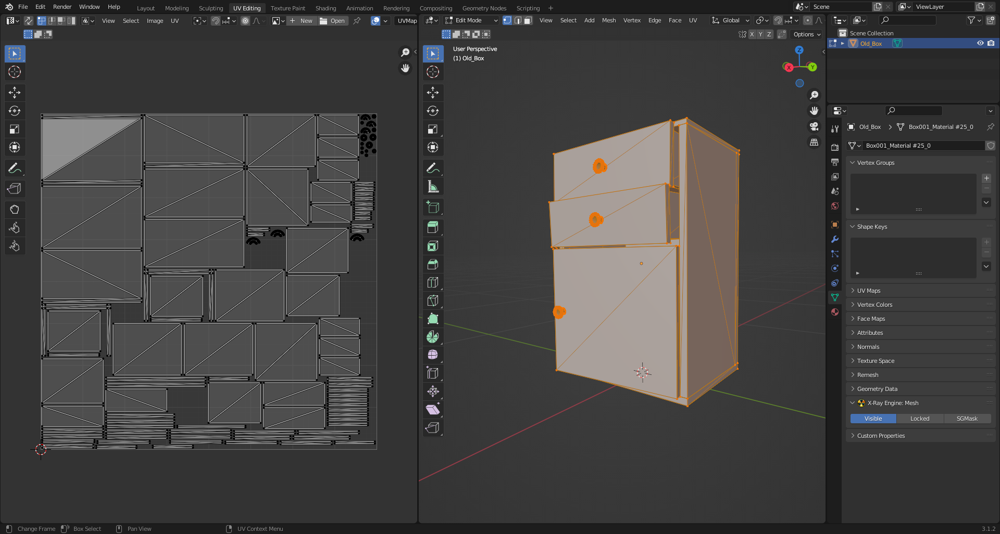
Texturing
Textures can be created in any program designed for this purpose, or you can simply download them.
Texture:

Important note about texture maps
In STALKER, due to its outdated engine, only the following texture maps are used:
- Color Map (.dds)
- Normal Maps (For Stalker they are used as .bump and .bump#) (The Blender X-Ray addon does not support the .bump format at this time (June 2022).)
So extra texture maps will have to be removed.
Here you need to add your created texture in .dds format
As a result, in the Shader Editor ( ) our textures should look something like this:
) our textures should look something like this:

So after creating the model, the UV and the texture, the setup within Blender begins.
Setting up
First, the model itself will be set up.
You can start by positioning the model over the origin in this way (The "Drop It" addon for Blender is highly recommended for such actions):

Then apply the coordinates with Ctrl + A > All Transform. This will allow us (if you make for example a model library or work in the SDK) to drag and drop the model on the surface.
Next, we need to adjust our model to normal size (so that in the game it will not be big or small). If you have already set up the addon to use and set up the necessary paths to your folders, you need to import into the scene model of some person from the game.
In the N-panel there should be a tab "X-Ray" in it unfolds the list "Viewer" and we click "Open Folder" ( ).
).

The Blender explorer window opens. Go to our unpacked folder with the game files (namely the folder "meshes").
The character models you need are in the "actors" folder, where the faction models are sorted into folders. (More about the structure of folders, main folders and files you can learn here)

Select the desired folder with the models and click on the "Open Folder" button.

Depending on the size of the models in the "Viewer" folder may take longer to open than you would like. So, "Viewer" is open. It shows all the models in the selected folder. Click on any model and a character model appears in front of us. 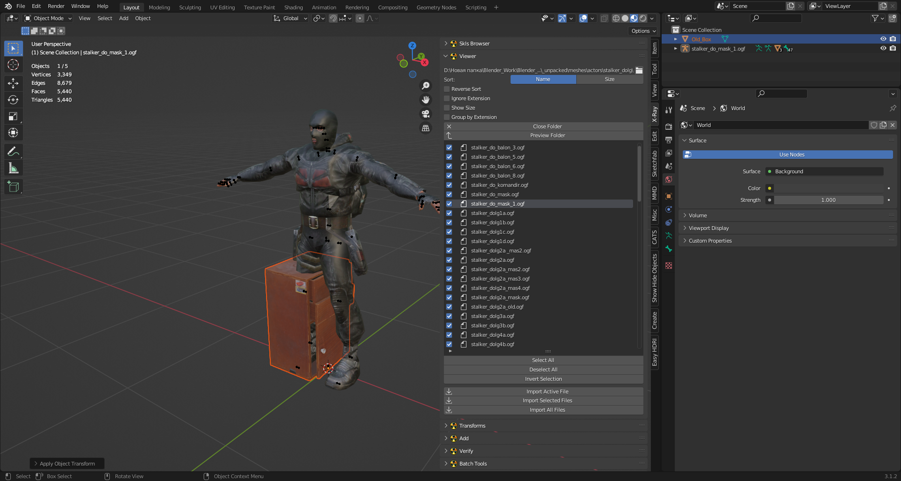
Next, we just adjust our model to acceptable proportions.
After fitting, apply transformations to our object.

In the "Viewer" list, we can click on "Close Folder ( )" to close the list of models and the model imported to us in the scene, too.
)" to close the list of models and the model imported to us in the scene, too.

Creating a dynamic model
At this point we have to decide what type of model we want to use (static, dynamic, or something else). (About the types of objects you can learn here)
It was decided to make our object dynamic.
To do this, you need to create a bone and a vertex group (so that the bone can affect exactly the vertices you choose).
Select the model and go to the "Object Data Properties" ( ) tab
Image here
) tab
Image here
Under "Vertex Groups" click on the plus sign (a "Vertex Group" with the name "Group" ( ) will be added) and double-click to rename it (the same name will be needed later for the bone).
) will be added) and double-click to rename it (the same name will be needed later for the bone).

The next step is to create a bone (Shift + A > Armature > Single Bone).

To make our model move like the bone in the future, we need to rename the bone to the name that was given to "Vertex Groups" ( ).
).
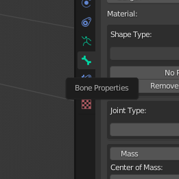
And rename the bone.
Select our object and switch to "Wireframe" mode () ("Z" Button) (this is optional).
Place the bone approximately in the center of the model.

After that, apply the bone transformations (Ctrl + A > All Transform).
Select our model and go to the "Modifier Properties" () tab.

In the "Modifier Properties" () tab, add the "Armature" modifier ( ) (Add Modifier > Armature (under Deform)).
) (Add Modifier > Armature (under Deform)).

The modifier has the following necessary items:
- Object (
 )
) - Bind to () Vertex Groups
In the "Object" ( ) field, select our bone (you can select it with the pipette (
) field, select our bone (you can select it with the pipette ( )).
Also make sure that the checkbox next to "Vertex Groups" () is marked.
These actions allowed us to bond our object and bone, but not yet to the fullest extent.
)).
Also make sure that the checkbox next to "Vertex Groups" () is marked.
These actions allowed us to bond our object and bone, but not yet to the fullest extent.
Next step:
First select the bone after selecting the model, press Ctrl + P. A list appears, select "Bone" (or other settings, because sometimes selecting "Bone" may not help).

This allowed the bone and the model to be fully bonded together. Now when the bone moves or rotates, the model will move with it.
Now you have to set the bone properties for X-Ray.
Bone
Select the bone and go to the "Bone Properties" ( ) tab.
) tab.
We see the "X-Ray Engine: Bone" section.
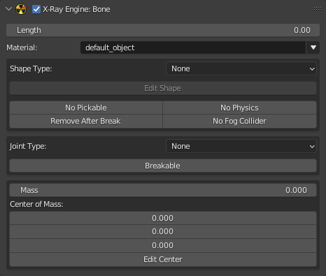
The desired field is "Shape Type" (where you choose the type of shape (for collision)).
From the whole list, our object is more suitable for the "Box" type. Let's choose it.
Next, click the "Edit Shape" button to check and edit the Shape itself.
The Shape of the bone appears and it does not match the model.
The Shape that just appeared is automatically selected and the "Object Properties" ( ) tab is selected.
) tab is selected.

In the same tab we see the "X-Ray Engine: Edit Helper" section with three buttons:
 Apply Shape (accepts changes to the bone shape)
Apply Shape (accepts changes to the bone shape) Fit Shape (Blender will automatically try to fit the Shape to the size of the object)
Fit Shape (Blender will automatically try to fit the Shape to the size of the object) Cancel (closes Shape editing mode)
Cancel (closes Shape editing mode)
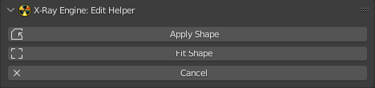
Apply Shape may help in some cases, but not in this one (nothing happens after clicking), so you need to adjust the Shape manually. Without going into Edit mode, press "S" and start fitting the Shape to the model. Going through the combinations, changing the shape of the Shape, we finally create an acceptable Shape. 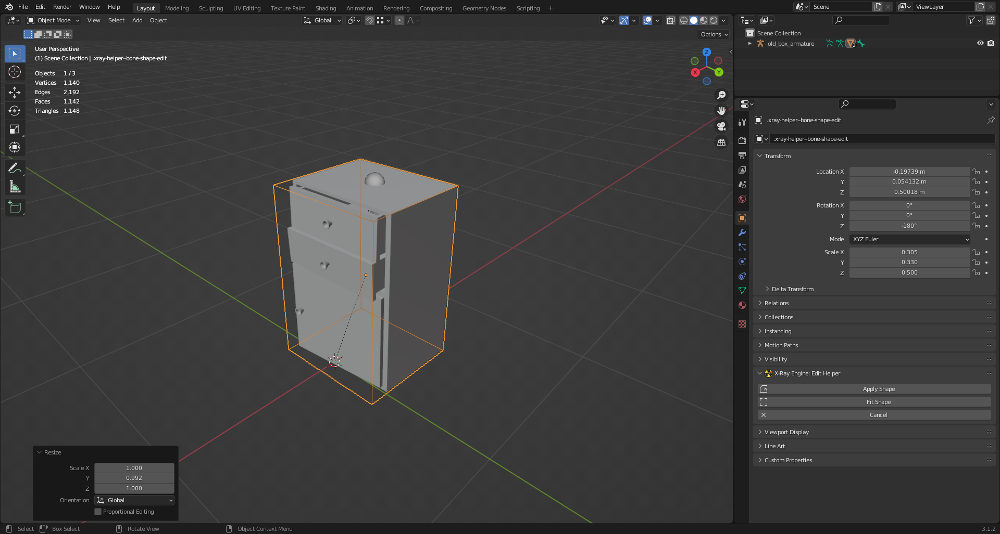
Accept the transformation by clicking on "Apply Shape" ( ). Everything will apply and the Shape will disappear.
To check the correctness of the shape and adjust the center of mass for the bone, go to the "Object Data Properties" () panel.
). Everything will apply and the Shape will disappear.
To check the correctness of the shape and adjust the center of mass for the bone, go to the "Object Data Properties" () panel.
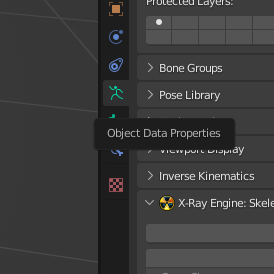
Here we see the "X-Ray Engine: Skeleton" section and the two buttons we need:
- Display Bone Shape
- Display Bone Mass Centers

Click on "Display Bone Shape" to check the bone shape

And by clicking on "Display Bone Mass Centers" a Cross will appear, from which you can understand where the center of mass is located (its mass and location can be edited in the tab "Bone Properties").

Go to the "Object Properties" ( ) tab.
Here you will find the "X-Ray Engine: Object" section.
) tab.
Here you will find the "X-Ray Engine: Object" section.

Remember that our object, by design, will be dynamic, so click on the button "Object", where we select the type "Dynamic".
The editing of the bone parameters is finished, the next step is Materials.
Select our object and go to the "Material Properties" ( ) tab.
) tab.

Here we see the name of our material and a list of "X-Ray Engine: Material" with lots of items.

There is no point in telling about each point here. (there is a separate section in the book)
The items we need for the model now are:
- Shader (This setting is responsible for the appearance of the surface.)
- Compile (Here are descriptions of the settings that the level geometry compiler uses)
- Material (Here you can select surface materials)
Select the shaders you want.
Well, the model setup in Blender is done. Congratulations!
The final stage
To check the model you can go the following ways:
- Load the model into the SDK and check
- Export the model in .ogf format and add it directly to the game.
- Check the model and parameters through third-party programs
Creating a location in Blender
Beginning
- download the SDK (0.7 or later Lost Alpha 2.6 or other (A list of SDKs can be found here))
- Familiarize yourself with the formats for levels (.lights, level, .ai, .cform, .details, .env_mod, .fog_vol, .game, .geom, .geomx, .hom, .ltx, .ps_static, .spawn, .wallmarks, .som (List here))
At the moment in the addon for Blender it is not possible to create a full-fledged location (no compiler, creating ai-nodes, etc.), so you need to use it with the SDK.
Creating Level
Simply create a level. To do this, you can use, for example, Stalker Asset Library (all objects from the trilogy).
Then you can assign certain flags to objects, such as
- Sectors
- Portals
- HOM
- SOM
And so on.
Those objects that were created by yourself need to be exported in .obj format to the object folder in your SDK and put export path to that file in the model properties.
Next you need to export the scene in the format .level
Next, you need to build and compile the location
Blender
These articles will talk about setting up Blender, creating models, etc.
Creating animations for the camera in Blender
Camera animations can be created within the scene in Universal Stalker Rig by TheParaziT
Beginning
- First, familiarize yourself with the .anm file format.
Creating animations
Create or enter a Blender scene.
In the N-panel in the X-Ray panel in the Add rollout, click on the "Add X-Ray Camera"() button. After adding the empty, set the Order of rotation to YXZ. Next, select the camera and in the Object Constraint Properties() panel add the "Child of"() modifier and choose a empty as the target. Set Transform Rotation X coordinates to 90. Everything is ready, you can create animations.
Export
To export the animation you need to select the empty through the export operator in .anm and export
Creating an animation in Blender for a HUD object
This article is about creating an animation for a HUD object in Blender
Important Note: Weapon animations, arm skeleton rig and weapon animations can be done in various ways. This article describes the methods that TheParaziT uses and may be unnecessary or optional!
Beginning
- First, check out the information about .omf, .skl, and .skls formats (list of file formats)
- To create the animation, we need a hand model (can be found in this article) and a model of what will be animated in the hands (a weapon or other object).
Preparing the HUD model
Create or download our model, which will be the HUD.

Next, you need to make a rig of the model, if it does not exist.
Or you can download a ready-made rig (for example "Stalker Universal Rig" by TheParaziT)
Weapon Rig Creating
How to create a basic skeleton was described in this article
A more advanced skeleton and rig should be made for this model.
For a more convenient arrangement of the bones, it is advisable to check the "In Front" checkbox in the Object Data Properties () in the Viewport Display section.
The resulting skeleton:

A skeleton must have the obligatory bones
- wpn_base - main (root) weapon bone
- wpn_scope - bone for the scope
- wpn_silencer - bone for silencer
Next, you need to assign Vertex Groups to the selected vertices.

And rename the bones as the desired Vertex Groups.

P.S. At this stage, I suggest duplicating the main skeleton bone of the HUD object (if it is a weapon, for example) and naming it differently. Assign this bone as the parent to all bones. And set the previous main bone as its parent. Due to these manipulations it will be fashionable to rotate weapon regardless of lead_gun position.
P.P.S. To set the location where the magazine should be located, you can do the following:
- Duplicate the store bone and name it *_rig.
- Duplicate it again and name it *_place
- Remove the parent of these bones.
- Select the main magazine bone and add the Copy Transform() modifier. Select the *_rig bone as the target. Then select *_rig and add the Copy Transform() modifier to it, and select *_place as the target. This will allow you to correctly attach the store bone to its original position without damaging the skeleton hierarchy for the HUD model.
In order for the animation to apply to all bones, it is necessary to set their Bone Groups. You can do this by going to the Object Data Properties( ) tab. In the Bone Groups section, create a new group and add the HUD object's bones to it.
) tab. In the Bone Groups section, create a new group and add the HUD object's bones to it.
After all the steps, you need to add a Bone Group for the bones of the HUD object. To do this, go to the Object Data Properties tab and create a new group in the Bone Groups list, adding all the bones of the HUD object there.
Import hands for animation (Append Button). Select the main bone of your skeleton for the HUD object and add the Copy Transform() modifier via the Bone Constraint Properties( ) tab. Select the hand skeleton and lead_gun bone as the target. Be sure to check that your object HUD bones scale are equal to 1!
) tab. Select the hand skeleton and lead_gun bone as the target. Be sure to check that your object HUD bones scale are equal to 1!
Creating Animations
Switch to the Animation tab and start building the original pose. Selecting the bone you want, move them around until you get the final look. Don't forget to put the keys (Button I > Location & Rotation). Select the arm skeleton and name your animation (for example*_idle). Do the same for the object's HUD skeleton. This is necessary because in the game HUD hands and object use their own bones and their own animations. Don't forget to put a "Fake User" for the animation!

Next comes the easiest and at the same time the most difficult - the creation of animations. Copy the idle animation and start creating!
P.S. For easier animation, I suggest creating help bones. Copy a weapon bone, remove the parent and add the "Child of" modifier to that bone and select some functional bone (e.g. a bolt bone) as a target. Further, if you add "Copy Transform" modifier to the hand bone and select the Help bone created as a target, it will simplify the animation (for example, when the bolt moves, the hand will move too).
P.P.S. The engine currently supports the following list of animations
Export
Once created, you can export the animations to .skl, .skls, or .omf To export animations to .omf you must:
- Go to the Object Properties of the selected skeleton (Hands or HUD object)
- In the tab X-Ray Engine: Object expand the list of Motions.
- In the Dependency field select the skeleton you need (on which skeleton the animation needed for the skeleton will be played)
- Press the plus button to add the field, in it you need to select the desired animation and add all the animations you need for the selected skeleton.
- Then you can export the .omf by pre-selecting the skeleton with animations.
Attention there is a probability that the constraints applied to the bones may not apply to the animations and the final animation will be spoiled. That's why I (TheParazit) recommend exporting the animations separately in .skl format.
Editing existing animations
You want to edit existing animations of a weapon or other item? You're insane.
Begining
Before you begin, familiarize yourself with the animation files:
Editing hud animations
- import a hand hud model
- import a model of a weapon or something else
- import the hand and object animations you want
- (Optional) You attach the main bone of the object to the lead_gun bone (Using Copy Transform)
- Edit
Editing camera animations
- import the camera animation
- Edit
Texturing
About:
This section will deal with the creation of textures, their preparation and formalities
Creating and preparing textures
Beginning
First, familiarize yourself with the supported texture compression (.dds .bump .bump#)
Start
First we have to create a texture, or we have to download one. Next, we need to convert our texture into .dds format. To do this, you can use any program of yours that can do such a thing. (or you can take a program from this list)
The most commonly used program for this is Paint.net. We download the texture and save it as .dds. The Save Settings window appears.
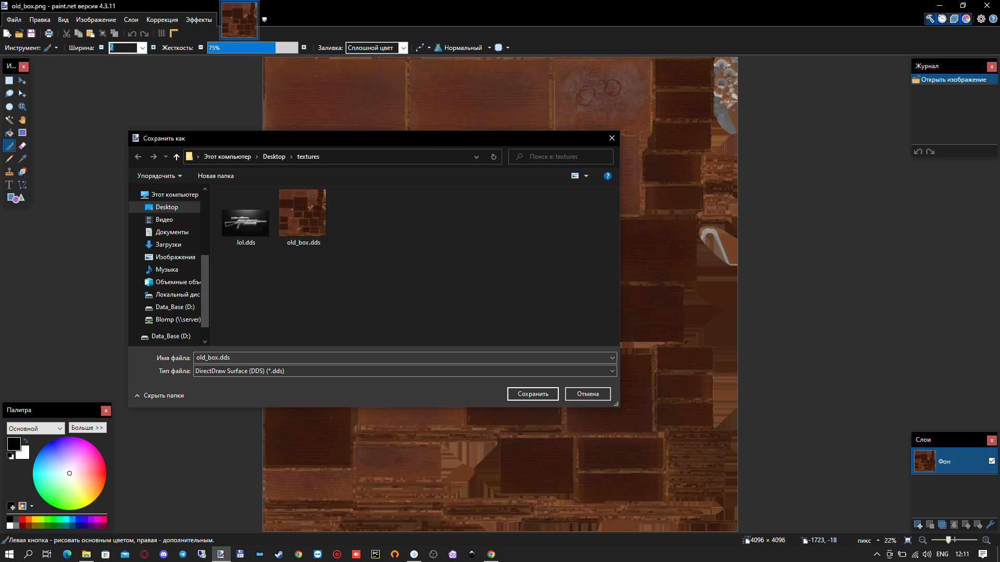
We have to choose the texture compression that suits us.
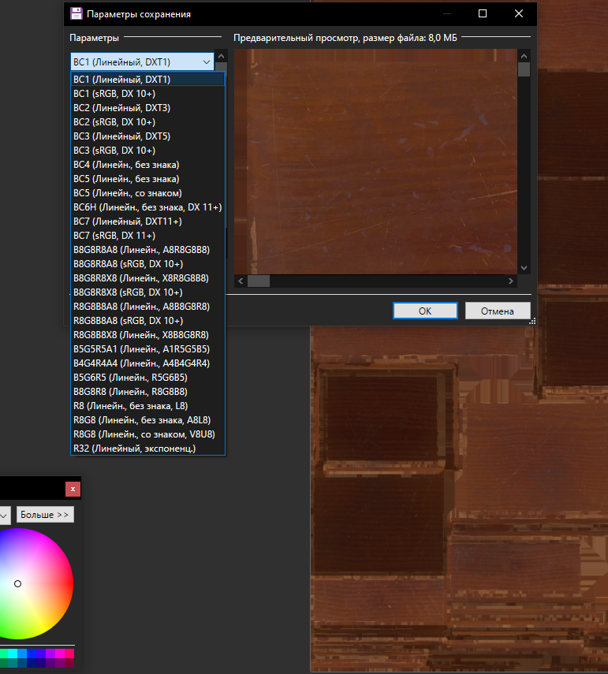
Save our texture. All of this may come in handy, for example for creating a model.
Shaders List
About
These sections describe the shader lists used for the game
Materials List
About
This section contains a list and description of the shaders that are available in the gamemtl.xr file. This file stores surface materials.
List
Materials of the creatures
| Shader name and path | Description |
|---|---|
| creatures\actor | person (actor) |
| creatures\hoof | mutant with hooves |
| creatures\human | human (NPS) |
| creatures\human_head | human |
| creatures\large | big mutant |
| creatures\medium | medium mutant |
| creatures\phantom | phantom |
| creatures\small | little mutant |
Static object materials
| Shader name and path | Description |
|---|---|
| default | standard static material |
| material\asphalt | asphalt |
| material\bricks | brick wall |
| material\bush | bushes, tree crowns, reeds, leaves |
| material\bush_sux | bushes, tree crowns, reeds, leaves, but dried out, or dead |
| material\cloth | fabric |
| material\concrete | monolithic concrete |
| material\death | Passable material that kills the character (non-standard material) |
| material\dirt | wet mud, swamp |
| material\earth | dry, hard earth (standard material) |
| material\earth_death | standard static material |
| material\earth_slide | standard static material |
| material\fake | collision material (no sound, no bullet marks, no shadows) |
| material\fake_ladders | invisible ladder |
| material\fake_ladders_woods | invisible wooden ladder |
| material\fake_slide | |
| material\flooring_tile | tile, ceramic tile |
| material\glass | glass |
| material\grass | fabricground covered with grass |
| material\gravel | gravel |
| material\metal | solid metal, thick piece, tank |
| material\metall_pipe | metal pipe |
| material\metal_plate | metal plate, steps |
| material\occ | occlusion geometry material |
| material\sand | sand, embankment |
| material\setka_rabica | barbed wire |
| material\shifer | slate |
| material\stucco | stucco |
| material\tin | tin, roof of houses |
| material\tree_trunk | wood (trunk) |
| material\water | water |
| material\water_radiation | radiation water |
| material\wood | wooden surface, floor wooden steps |
| material\wooden_board | wooden board, wooden wagon, box |
Dynamic object materials
| Shader name and path | Description |
|---|---|
| default_object | standard dynamic material |
| objects\barrel | barrel |
| objects\bolt | |
| objects\bottle | bottle |
| objects\bullet | bullet, grenade fragment |
| objects\car_cabine | car body |
| objects\car_wheel | car wheels |
| objects\clothes | rag, clothes |
| objects\concrete_box | concrete block |
| objects\dead_body | dead human body |
| objects\fuel_can | gasoline canister |
| objects\glass | broken glass |
| objects\knife | knife |
| objects\large_furnitura | large furniture (chairs, tables, cabinets) |
| objects\large_metal_trash | large pieces of junk metal (fittings, pieces of iron) |
| objects\large_weapon | heavy weapons (assault rifle, grenade launcher, rifle) |
| objects\metal_box | metal box |
| objects\monster_body | dead mutant body |
| objects\shell | |
| objects\small_box | small box (ammo, PDA, first aid kit) |
| objects\small_metal_trash | small metal trash (tubes, pieces, nuts, bolts) |
| objects\small_weapon | small weapon (pistol) |
| objects\tin_can | tin can |
Shaders List
About
This section contains a list and description of the shaders that are available in the shaders.xr file. This file contains descriptions of shader settings.
List
Shaders for static objects
| Shader name | Description |
|---|---|
| zfill | |
| xwindow | Old unused glass shader |
| selflight | self-lighting material |
| glass | |
| friendly_indicator | |
| font | |
| default_pn_hm | |
| default_pn | |
| default_hm | |
| default | basic lightmap shader |
| clouds |
ufp Shaders
| Shader name | Description |
|---|---|
| ufp_blend |
Test Shaders
| Shader name and path | Description |
|---|---|
| test\aaaaaaaa__ | |
| test\aass |
Sky Shaders
| Shader name and path | Description |
|---|---|
| sky\background | |
| sky\clouds | |
| sky\clouds_old | |
| sky\skydome |
Particles Shaders
| Shader name and path | Description |
|---|---|
| particles\add | |
| particles\alpha_add | |
| particles\blend | |
| particles\dark | |
| particles\set | |
| particles\xadd | |
| particles\xblend | |
| particles\xdistort |
Shaders for dynamic objects
| Shader name and path | Description |
|---|---|
| models\antigas_glass | CubeMap reflection shader (variant 1) |
| models\artefact | CubeMap reflection shader (variant 2) |
| models\artefact2 | CubeMap reflection shader (variant 3) |
| models\artifact-anim-env | |
| models\glass_stalker_refl | |
| models\lfo_black_lens_weapons | |
| models\lfo_black_soft_lens_weapons | |
| models\lfo_glass_lens_weapons | |
| models\lfo_light_dot_weapons | |
| models\lightplanes | self-lighting material with translucent and falloff effect |
| models\mirror | |
| models\model | basic shader |
| models\model_aref | transparency. alpha test - trans (with gradients) |
| models\model_fur | transparency. alpha test - aref (no gradients) |
| models\hm | |
| models\pn | |
| models\pn_hm | enable tesselation on models (DX11 only) |
| models\pautina | material with transparency and falloff effect |
| models\selflight | basic self-lighting material |
| models\seftlight_det | |
| models\selflightl | self-lighting material with lower intensity |
| models\transparent | transparency |
| models\water | |
| models\water_ryaska | |
| models\weapons | CubeMap reflection shader (variant 4) |
| models\window | semi-transparent shader with CubeMap reflection |
| models\xanomaly | |
| models\xdistor | |
| models\xdistorcolor | |
| models\xdistorcolorl | |
| models\xdistorinv | |
| models\xmonolith | |
| models\xwindows |
Levels Shaders
| Shader name and path | Description |
|---|---|
| levels\agroprom_asfalt | terrain shader (asphalt) |
| levels\agroprom_grass | terrain shader (grass) |
| levels\agroprom_gravel | terrain shader (gravel) |
| levels\bar_asfalt | |
| levels\bar_asphalt | |
| levels\bar_grass | |
| levels\bar_gravel | |
| levels\darkcape_asfalt | |
| levels\darkcape_grass | |
| levels\darksc_asfalt | |
| levels\darksc_grass | |
| levels\darkvalley_asfalt | |
| levels\darkvalley_grass | |
| levels\darkvalley_sand | |
| levels\dead_city_asfalt | |
| levels\dead_city_grass | |
| levels\dead_city_ground | |
| levels\deadcity_asfalt | |
| levels\deadcity_earth | |
| levels\dead_city_grass | |
| levels\escape_asfalt | |
| levels\escape_asfalt_noblend | |
| levels\escape_grass | |
| levels\escape_sand | |
| levels\garbage_asfalt | |
| levels\garbage_earth | |
| levels\garbage_grass | |
| levels\generator_asfalt | |
| levels\generator_earth | |
| levels\generators_art | |
| levels\hospital_grass | |
| levels\hospital_sand | |
| levels\jupiter_asfalt | |
| levels\jupiter_earth | |
| levels\jupiter_grass | |
| levels\jupiter_plates | |
| levels\l01_escape_asfalt | |
| levels\l01_escape_asfalt_noblend | |
| levels\l01_escape_detritus | |
| levels\l01_escape_grass | |
| levels\l01_escape_sand | |
| levels\limansk_asfalt | |
| levels\limansk_earth | |
| levels\limansk_grass | |
| levels\maedow_asfalt | |
| levels\maedow_grass | |
| levels\maedow_sand | |
| levels\marsh_earth | |
| levels\military_asfalt | |
| levels\military_grass | |
| levels\military_sand | |
| levels\pripyat_asfalt | |
| levels\pripyat_earth | |
| levels\pripyat_gras2 | |
| levels\pripyat_grass | |
| levels\radar_asfalt | |
| levels\radar_grass | |
| levels\red_forest_asfalt | |
| levels\red_forest_earth | |
| levels\red_forest_grass | |
| levels\red_forest_leaves | |
| levels\red_forest_sand | |
| levels\stancia | |
| levels\stancia_asfalt | |
| levels\stancia_build_kanal | |
| levels\stancia_kanal | |
| levels\truckscemetery | |
| levels\truckscemetery_asfalt | |
| levels\truckscemetery_grass | |
| levels\yantar_asfalt | |
| levels\yantar_earth | |
| levels\zaton_asfalt | |
| levels\zaton_cracked | |
| levels\zaton_earth | |
| levels\zaton_earth_2 | |
| levels\zaton_grass | |
| levels\zaton_pebbles | |
| levels\zaton_plates | |
| levels\zaton_sand |
HUD Shaders
| Shader name and path | Description |
|---|---|
| hud\add | |
| hud\add-alpha | |
| hud\cursor | |
| hud\default | |
| hud\fog_of_war | |
| hud\hitmarker | |
| hud\p3d | |
| hud\set | |
| hud\seta |
Flora Shaders
| Shader name and path | Description |
|---|---|
| flora\leaf_wave | |
| flora\trunk_wave |
Effects Shaders
| Shader name and path | Description |
|---|---|
| effects\bullet_tracer | |
| effects\flame | |
| effects\flare | |
| effects\fx_refl_pod | |
| effects\glow | |
| effects\lightning | |
| effects\lightplanes | |
| effects\moon | |
| effects\rain | |
| effects\screen_add | |
| effects\screen_blend | |
| effects\screen_noise | |
| effects\screen_set | |
| effects\shadow | |
| effects\shadow_blur | |
| effects\shadow_world | |
| effects\sun | |
| effects\wallmark | |
| effects\wallmarkblend | |
| effects\wallmarkmult | |
| effects\wallmarkset | |
| effects\water | pure water shader |
| effects\waterryaska | crayfish shader |
| effects\waterstuden | swamp shader |
| effects\watertest | |
| effects\watertest-1 |
SDK Shaders
| Shader name and path | Description |
|---|---|
| editor\ai_node | |
| editor\do_base | |
| editor\selection | |
| editor\spawn_icon | |
| editor\wire |
Details Shaders
| Shader name and path | Description |
|---|---|
| details\blend | |
| details\lod | |
| details\set |
Def_Shaders
| Shader name and path | Description |
|---|---|
| def_shaders\def_add | |
| def_shaders\def_aref | |
| def_shaders\def_aref_v | |
| def_shaders\def_objects_lod | |
| def_shaders\def_objects_lod_trans | |
| def_shaders\def_refl_alpha | |
| def_shaders\def_refl_alpha_heli | |
| def_shaders\def_refl_trans | |
| def_shaders\def_trans | |
| def_shaders\def_trans_v | |
| def_shaders\def_trans_v_tuchi | |
| def_shaders\def_vertex | |
| def_shaders\def_vertex_hm | |
| def_shaders\def_vertex_pn | |
| def_shaders\def_vertex_pn_hm | |
| def_shaders\lod | |
| def_shaders\lod_old |
Debug Shaders
| Shader name and path | Description |
|---|---|
| debug\ai_nodes | |
| debug\wireframe |
Compiler Shaders List
About
This section contains a list and description of the shaders that are available in the shaders_xrlc.xr file. This file contains descriptions of the settings that are used by the level geometry compiler.
List
| Shader name and path | Description |
|---|---|
| default | basic lightmap shader |
| default_smooth | |
| def_shaders\def_ghost | lightmap shader without collision |
| def_shaders\def_ghost_vertex | geometry shader without collision |
| def_shaders\def_kolizion | geometry shader with collision |
| def_shaders\def_kolizion_lm | |
| def_shaders\def_kolizion_vertex | invisible geometry shader with collision |
| def_shaders\def_normals | |
| def_shaders\def_noshadow | |
| def_shaders\def_noshadow_pol | |
| def_shaders\def_object_lod | |
| def_shaders\def_object_lod_collision | |
| def_shaders\def_object_lod_visual | |
| def_shaders\def_selflight | |
| def_shaders\def_translucensy | geometry shader with transparency |
| def_shaders\def_vertex | basic vertex shader |
| def_shaders\def_vertex_ghost | |
| def_shaders\def_vertex_ghost_no_shadow | |
| def_shaders\def_vertex_invisible_castshadow | |
| def_shaders\def_vertex_no_shadow | |
| def_shaders\default_lm01 | |
| def_shaders\default_lm01_ghost | |
| def_shaders\default_lm03 | |
| def_shaders\default_lm03_ghost | |
| def_shaders\default_lm03_smooth | |
| def_shaders\default_lm05 | |
| def_shaders\default_lm05_ghost | |
| def_shaders\default_lm_hq |
Compiling Maps
To compile, you need to make a location build. To do this, open or create a location in the Level Editor in the SDK.
For location build this is the minimum set:
- 1 light source
- 1 spawn element
- 1 glow
If the location will have stalkers, you need to create ai grid
Location building
Created a folder with the name, which was specified in the scene properties. It contains all the data about the location.
Compiling the location
In order to compile a location, you need to put it in the:
- game_maps_single.ltx
- game_levels.ltx
After that you can use compilers that are included directly in SDK, or use third party compilers (such as Universal x64 level compilers).
Engine (X-Ray "Monolith" Engine)
About
The X-Ray "Monolith" Engine is an Anomaly mod open for use and modification. It is based on X-Ray 1.6 Engine (CoP), Open X-Ray Call of Chernobyl Edition and some modifications.
Some Main Features
- 64-bit Engine
- In-game editing tools
- Support for 21:9 ratio
- Multi threaded sound prefetching
- Discord integration
- Animation Blending/Movement layers
Sources
Console commands
About
This section describes all console commands.
All the settings described below are stored in the file "user".ltx. (You can read more about important files here)
Game
| Сommand | Command description | Command's argument | Note |
|---|---|---|---|
| help | Outputs a list of console commands | - | - |
| g_dead_body_collision | Enables collision | full actor_only off | - |
| g_game_difficulty | Selects the game difficulty | gd_novice gd_stalker gd_veteran gd_master | |
| g_god | Enables God Mode | 'on/off' or '1/0' | - |
| g_hit_pwr_modif | Bone damage modifier | 0.500 - 3.000 | - |
| g_ironsights_zoom_factor | Zoom factor of the mechanical sight | 1.000 - 2.000 | - |
| g_unlimitedammo | Enables Infinite Ammo Mode | 'on/off' or '1/0' | - |
| g_use_tracers | 'on/off' or '1/0' | - | |
| g_important_save | Saving at key points | 'on/off' or '1/0' | - |
| g_autopickup | Enables the ability to pick up items automatically | 'on/off' or '1/0' | Not working |
| g_always_active | The game will continue to work if the focus is not on it | 'on/off' or '1/0' | - |
| demo_play | Plays the selected demo_record | "name" of demo | - |
| demo_record | Enables recording of camera overflights | "name" of demo | Space bar sets key points when the camera flies The Enter key exits record mode and takes the player to the exit point from demo_record mode |
| demo_set_cam_position | - | ||
| keypress_on_start | Whether to wait after loading a level to press the key to go into the game | 'on/off' or '1/0' | - |
| load | Load specified save | save_name | - |
| load_last_save | Load last save | - | - |
| main_menu | Exit to the main menu | - | - |
| quit | Exit to the desktop | - | - |
| cl_cod_pickup_mode | Selecting items from the radius around the scope | 'on/off' or '1/0' | - |
| disconnect | Ends the game | - | - |
| time_factor | Ability to change the game time | 0.001 - 1000.0 | - |
| jump_to_level | Moving to the selected level | k00_marsh l01_escape l02_garbage l03_agroprom k01_darkscape l04_darkvalley l05_bar l06_rostok l07_military l08_yantar l09_deadcity l10_limansk l10_radar l10_red_forest l11_hospital l11_pripyat l12_stancia l12_stancia_2 l13_generators l03u_agr_underground l04u_labx18 l08u_brainlab l10u_bunker l12u_sarcofag l12u_control_monolith l13u_warlab zaton jupiter jupiter_underground pripyat labx8 k02_truck_cemetery fake_start y04_pole | - |
Actor
| Сommand | Command description | Command's argument |
|---|---|---|
| head_bob_factor | Basic head bobbing factor | 0 - 2 |
HUD
| Сommand | Command description | Command's argument |
|---|---|---|
| g_simple_pda | 'on/off' or '1/0' | |
| g_3d_pda | Switching between 2D and 3D PDA modes | 'on/off' or '1/0' |
| hud_weapon | Shows weapons and hands | 'on/off' or '1/0' |
| hud_draw | Shows UI | 'on/off' or '1/0' |
| hud_fov | FOV for HUD | 0.100 - 1.000 |
UI
| Сommand | Command description | Command's argument | Note |
|---|---|---|---|
| cl_dynamiccrosshair | Dynamic Sight | 'on/off' or '1/0' | Not working because of the dot sight |
| g_crosshair_color | Changes the color of the crosshair | (0 - 255, 0 - 255, 0 - 255, 0 - 255) | Argument is taken in RGBA format First value (0 - 255) - Red Second value (0 - 255) - Green Third value (0 - 255) - Blue Fourth value (0 - 255) - Alpha |
| g_feel_grenade | "Sensitivity" grenade | 'on/off' or '1/0' | - |
| hud_crosshair | Show crosshair | 'on/off' or '1/0' | - |
| hud_crosshair_dist | Show distance to target under crosshair | 'on/off' or '1/0' | - |
Debug
| Сommand | Command description | Command's argument |
|---|---|---|
| rs_stats | Display engine statistics on the screen | 'on/off' or '1/0' |
| rs_cam_pos | Display camera coordinates | 'on/off' or '1/0' |
| list_actions | Display a list of active console commands | - |
| bind_list | Display a list of commands assigned to the keys | - |
| hud_info | - | |
| render_memory_stats | Output information about memory usage | - |
| stat_memory | - |
Control
| Сommand | Command description | Command's argument | Note |
|---|---|---|---|
| bind | Assign a command to the button | Action, key prefixed with k (kLeft, etc.) | - |
| mouse_invert | Inverts the mouse | 'on/off' or '1/0' | - |
| mouse_sens | Mouse sensitivity | 0.001 - 0.600 | - |
| mouse_sens_aim | Mouse sensitivity when aiming | 0.500 - 2.000 | - |
| default_controls | Resets key settings to defaults | - | - |
| wpn_aim_toggle | Aiming Mode | 'on/off' or '1/0' | - |
| g_backrun | Backward running mode | 'on/off' or '1/0' | Not working |
| g_crouch_toggle | Sit/stand mode | 'on/off' or '1/0' | - |
| g_sprint_toggle | Sprint mode | 'on/off' or '1/0' | - |
| g_walk_toggle | 'on/off' or '1/0' | - |
Discord
| Сommand | Command description | Command's argument |
|---|---|---|
| discord_status | Displays status in Discord | 'on/off' or '1/0' |
| discord_update_rate | Discord update rate | 0.500 - 5.000 |
Sound
General settings
| Сommand | Command description | Command's argument |
|---|---|---|
| snd_restart | Restart the sound engine | — |
| snd_cache_size | Cache size | 8 - 256 |
| snd_acceleration | APU resource utilization | 'on/off' or '1/0' |
| snd_targets | Maximum number of channels | 32 - 1024 |
| snd_device | OpenAL Soft |
Music
| Сommand | Command description | Command's argument | Note |
|---|---|---|---|
| snd_volume_eff | Volume of sounds | 0.000 - 1.000 | - |
| snd_volume_music | Music volume | 0.000 - 1.000 | - |
| g_dynamic_music | Turns on dynamic music (during firefights) | 'on/off' or '1/0' | In the game the script xrs_dyn_music.script responsible for playing music is corrupted. An addon restoring this script can help to fix it (Example: COMBAT MUSIC RESTORED + EXTENDED) |
Effects
| Сommand | Command description | Command's argument |
|---|---|---|
| snd_efx | EAX sound effects | 'on/off' or '1/0' |
Physics
| Сommand | Command description | Command's argument |
|---|---|---|
| ph_gravity | Gravity | 0.000 - 1000.000 |
| ph_frequency | The more, the better the collision calculations | 50.0000 - 200.0000 |
| ph_iterations | Number of iterations to calculate the dynamics | 15 - 50 |
Camera
| Сommand | Command description | Command's argument |
|---|---|---|
| cam_inert | Camera inertia | |
| cam_slide_inert | ||
| fov | FOV for camera | 5.000 - 180.000 |
Graphics
Graphics General settings
| Сommand | Command description | Command's argument |
|---|---|---|
| _preset | Selecting a set of quality settings | Minimum Low Default High/Extreme |
| rs_screenmode | Resolution selection mode | Windowed Fullscreen Borderless Windowed |
| rs_v_sync | Vertical Sync | 'on/off' or '1/0' |
| rs_refresh_60hz | Screen refresh rate 60 Hz | 'on/off' or '1/0' |
Renders
Common commands for all renders
| Сommand | Command description | Command's argument |
|---|---|---|
| renderer | Render type (old) | |
| rs_vis_distance | Visibility range | 0.400 - 1.500 |
| r__actor_shadow | Player shadow | 'on/off' or '1/0' |
| r__bloom_thresh | Brightness threshold for 3rd party bloom shader | 0.0 - 1.0 |
| r__bloom_weight | Bloom weights for 3rd party bloom shader | 0.0 - 1.0 |
| r__clear_models_on_unload | 'on/off' or '1/0' | |
| r__color_grading | ||
| r__detail_density | Grass density | 0.040 - 1.000 |
| r__detail_height | Grass height | 0.5 - 2.0 |
| r__detail_radius | Grass rendering radius | 50.0 - 250.0 |
| r__dtex_range | 5.000 - 175.000 | |
| r__enable_grass_shadow | Enables grass shadows | 'on/off' or '1/0' |
| r__exposure | Scene exposure | 0.500 - 4.000 |
| r__framelimit | FPS limiter | 0 - 500 |
| r__gamma | Scene gamma | 0.500 - 2.200 |
| r__geometry_lod | Geometry level of detail | 0.100 - 1.500 |
| r__lens_flares | The "lens flare" effect | 'on/off' or '1/0' |
| r__nightvision | Controls nightvision shader | 0 - 3 |
| r__no_ram_textures | 'on/off' or '1/0'off | |
| r__no_scale_on_fade | ||
| r__optimize_dynamic_geom | ||
| r__optimize_shadow_geom | ||
| r__optimize_static_geom | ||
| r__saturation | Color saturation | 0.0 - 2.0 |
| r__supersample | Supersampling (DX8) | 1 - 8 |
| r__tf_aniso | Anisotropic filtering | 0 - 4 - 8 - 16 |
| r__tf_mipbias | bias for initial texture mip level | -3.0 - 3.0 |
| r__use_precompiled_shaders | ||
| r__wallmark_ttl | Wallmark Lifetime | 1.000 - 600.000 |
| r_screenshot_mode | Screenshot in the selected format | jpg png tga |
R1 - SM2.0 (DX9.0)
| Сommand | Command description | Command's argument |
|---|---|---|
| r1_detail_textures | Detailed textures on static lighting | 'on/off' or '1/0' |
| r1_dlights | Dynamic light sources on static lighting | 'on/off' or '1/0' |
| r1_dlights_clip | Sets the display radius (visibility range) of | |
| of dynamic light sources | ||
| r1_fog_luminance | Fog brightness | 0.2 - 5.0 |
| r1_glows_per_frame | Controls the maximum number of light sources | |
| r1_lmodel_lerp | Controls Linear Lighting Interpolation | |
| r1_pps_u | Controls Per Pixel Shader value | |
| r1_pps_v | Controls Per Pixel Shader value | |
| r1_software_skinning | ||
| r1_ssa_lod_a | Controls the level of detail (LOD) in the game world | |
| r1_ssa_lod_b | Controls the level of detail (LOD) in the game world |
R2 - SM3.0 (DX9.0c)
| Сommand | Command description | Command's argument |
|---|---|---|
| r2_aa | "Pseudo-smoothing" on dynamic lighting | 'on/off' or '1/0' |
| r2_aa_break | Distance at which the "Pseudo-smoothing" effect works | |
| r2_aa_kernel | The basic value of the "Pseudo-smoothing" effect | |
| r2_aa_weight | Controls the blurring of the fake AA more accurately | |
| r2_allow_r1_lights | ||
| r2_detail_bump | Detail textures | 'on/off' or '1/0' |
| r2_dof | ||
| r2_dof_enable | Enables depth of field | 'on/off' or '1/0' |
| r2_dof_radius | Doesn't work. In vanilla game that command controls blur radius | 0.05 - 1.0 |
| r2_dof_sky | Sky depth | -10000.0 - 10000.0 |
| r2_drops_control | Controls rain drops shader | |
| r2_exp_donttest_shad | ||
| r2_gi | Global illumination | 'on/off' or '1/0' |
| r2_gi_clip | Global illumination effect range | 0.0001 - 1.0 |
| r2_gi_depth | Shadow depth of the global illumination effect | 1 - 5 |
| r2_gi_photons | Number of rays to trace the global illumination effect | 8 - 256 |
| r2_gi_refl | Reflectivity of global illumination effect surfaces | 0.00001 - 0.99 |
| r2_gloss_factor | Surface gloss level | 0.001 - 10.0 |
| r2_gloss_min | Minimal gloss level | 0.001 - 1.0 |
| r2_ls_bloom_fast | In theory, this should enable faster bloom implementation, yet it doesn't work correctly | 'on/off' or '1/0' |
| r2_ls_bloom_kernel_b | Determines the level of shading (haze) from the | |
| HDR and Bloom | ||
| r2_ls_bloom_kernel_g | Bloom 'radius'. Higher values results in softer bloom | 1.0 - 7.0 |
| r2_ls_bloom_kernel_scale | Bloom scale | 0.05 - 2.0 |
| r2_ls_bloom_speed | ||
| r2_ls_bloom_threshold | Brightness threshold | 0.0 - 1.0 |
| r2_ls_depth_bias | Controls the range of light sources | |
| r2_ls_depth_scale | Controls the effect of lighting on shadows | |
| r2_ls_dsm_kernel | ||
| r2_ls_psm_kernel | ||
| r2_ls_squality | ||
| r2_ls_ssm_kernel | ||
| r2_mask_control | Controls gasmask shader | |
| r2_mblur | Motion blur intensity | 0.0 - 1.0 |
| r2_mblur_enabled | Enables motion blur effect | 'on/off' or '1/0' |
| r2_parallax_h | Parallax strength | 0.0 - 0.5 |
| r2_qsync | ||
| r2_shadow_cascede_old | Enables 'SoC-like' shadow mapping | 'on/off' or '1/0' |
| r2_slight_fade | ||
| r2_smaa | Subpixel Morphological Anti-aliasing | off/low/medium/high/ultra |
| r2_soft_particles | Soft particles | 'on/off' or '1/0' |
| r2_soft_water | Soft Water | 'on/off' or '1/0' |
| r2_ss_sunshafts_length | Length of screen-space sun rays | 0.2 - 1.5 |
| r2_ss_sunshafts_radius | ||
| r2_ssa_lod_a | Level of detail of dynamic objects | 16.0 - 96.0 |
| r2_ssa_lod_b | Level of detail of static objects | 32.0 - 96.0 |
| r2_ssao | Screen space ambient occlusion effect quality | st_opt_off/st_opt_low/st_opt_medium/st_opt_high/st_opt_ultra |
| r2_ssao_blur | Doesn't work. | |
| r2_ssao_half_data | Enables half-resolution depth buffer for AO | 'on/off' or '1/0' |
| r2_ssao_hbao | Horizon-Based Ambient Occlusion | 'on/off' or '1/0' |
| r2_ssao_hdao | High-definition Ambient Occlusion | 'on/off' or '1/0' |
| r2_ssao_mode | Ambient occlusion type | disabled/default/hdao/hbao |
| r2_ssao_opt_data | ||
| r2_steep_parallax | Steep parallax occlusion mapping | 'on/off' or '1/0' |
| r2_sun | Shadows from the sun | 'on/off' or '1/0' |
| r2_sun_depth_far_bias | ||
| r2_sun_depth_far_scale | ||
| r2_sun_depth_near_bias | ||
| r2_sun_depth_near_scale | ||
| r2_sun_details | Shadows of grass and other detailed objects | 'on/off' or '1/0' |
| r2_sun_far | ||
| r2_sun_focus | Focus of sun shadows | 'on/off' or '1/0' |
| r2_sun_lumscale | Sun light brightness | 0.0 - 3.0 |
| r2_sun_lumscale_amb | Ambient light brightness | 0.0 - 3.0 |
| r2_sun_lumscale_hemi | Sky light brightness | 0.0 - 3.0 |
| r2_sun_near | The location of the sun from the earth | |
| r2_sun_near_border | ||
| r2_sun_quality | Shadow filter quality | st_opt_low/st_opt_medium/st_opt_high/st_opt_ultra/st_opt_extreme |
| r2_sun_tsm | Clarity of sun shadows | |
| r2_sun_tsm_bias | ||
| r2_sun_tsm_proj | ||
| r2_sunshafts_min | Min. sun rays intensity | 0.0 - 0.5 |
| r2_sunshafts_mode | Sun rays mode | off/volumetric/screen_space/combined |
| r2_sunshafts_quality | Quality of the sun rays | st_opt_low/st_opt_medium/st_opt_high |
| r2_sunshafts_value | Sun rays intensity | 0.0 - 2.0 |
| r2_terrain_z_prepass | ||
| r2_tnmp_a | 0.0 - 20.0 | |
| r2_tnmp_b | 0.0 - 20.0 | |
| r2_tnmp_c | 0.0 - 20.0 | |
| r2_tnmp_d | 0.0 - 20.0 | |
| r2_tnmp_e | 0.0 - 20.0 | |
| r2_tnmp_exposure | Tonemap exposure | 0.0 - 20.0 |
| r2_tnmp_f | 0.0 - 20.0 | |
| r2_tnmp_gamma | Tonemap gamma | 0.0 - 20.0 |
| r2_tnmp_onoff | Enables custom tonemapping (based on Uncharted 2 curve) | 0.0 - 1.0 |
| r2_tnmp_w | White point | 0.0 - 20.0 |
| r2_tonemap | Enables eye-adaptation | 'on/off' or '1/0' |
| r2_tonemap_adaptation | Eye-adaptation speed | 0.0 - 10.0 |
| r2_tonemap_amount | ||
| r2_tonemap_lowlum | Controls the tone mapping effect on dark locations | |
| r2_tonemap_middlegray | Controls the overall appearance of the HDR effect | |
| r2_volumetric_lights | Volumetric light | 'on/off' or '1/0' |
| r2_wait_sleep | ||
| r2_water_reflections | ||
| r2_zfill | ||
| r2_zfill_depth | ||
| r2em |
R3 - SM4.0 (DX10) or SM4.1 (DX10.1)
| Сommand | Command description | Command's argument |
|---|---|---|
| r3_dynamic_wet_surfaces | Wet surfaces | 'on/off' or '1/0' |
| r3_dynamic_wet_surfaces_far | Max. rendering distance of the effect | 30 - 100 |
| r3_dynamic_wet_surfaces_near | Min. rendering distance of the effect | 10 - 70 |
| r3_dynamic_wet_surfaces_sm_res | Resolution of rain 'shadowmap' | 64 - 2048 |
| r3_minmax_sm | ||
| r3_msaa | Multisample Anti-aliasing | st_opt_off/2x/4x/8x |
| r3_msaa_alphatest | Alpha-test used with MSAA | st_opt_off/st_opt_atest_msaa_dx10_0/st_opt_atest_msaa_dx10_1 |
| r3_use_dx10_1 | Enables use of DX10.1 | 'on/off' or '1/0' |
| r3_volumetric_smoke | Volumetric smoke | 'on/off' or '1/0' |
R4 - SM5.0 (DX11)
| Сommand | Command description | Command's argument |
|---|---|---|
| r4_enable_tessellation | Tessellation | 'on/off' or '1/0' |
| r4_wireframe | Displays the wireframe of dynamic models (not working) | 'on/off' or '1/0' |
Brightness-Contrast-Gamma
| Сommand | Command description | Command's argument | Note |
|---|---|---|---|
| rs_c_brightness | Brightness | 0.500 - 1.500 | - |
| rs_c_contrast | Contrast | 0.500 - 1.500 | - |
| rs_c_gamma | Gamma | 0.500 - 1.500 | Not working |
Video
| Сommand | Command description | Command's argument |
|---|---|---|
| vid_mode | Screen resolution | 800x600 1024x768 1280x720 1280x1024 1366x768 1600x900 1680x1050 1920x1080 |
| vid_restart | Reboot the video engine | - |
Textures
| Сommand | Command description | Command's argument |
|---|---|---|
| texture_lod | Texture detailing | 0 - 4 |
AI
| Сommand | Command description | Command's argument |
|---|---|---|
| ai_aim_max_angle | The maximum angle at which the angular velocity of the character when aiming is calculated by the formula | |
| ai_aim_min_angle | The minimum angle at which the angular velocity of the character when aiming is calculated by the formula | |
| ai_aim_min_speed | Minimum angular velocity of the character when aiming at a target | |
| ai_aim_predict_time | Time of the character's prediction of a change in target position | |
| ai_aim_use_smooth_aim | 'on/off' or '1/0' | |
| ai_die_in_anomaly | Enables NPCs to die in anomalies | 'on/off' or '1/0' |
| ai_use_old_vision | Includes the old model of virtual character vision, in which random points on the surface of an ellipsoid inscribed into an axially oriented rectangular parallelepiped described around the object were taken to determine the visibility of the object. | 'on/off' or '1/0' |
| ai_use_torch_dynamic_lights | Enables the use of flashlights by non-player characters (NPCs) | 'on/off' or '1/0' |
Compiling
To compile the engine open the solution in VS2015, select all projects and configurations in Batch build and start a build.
Engines List
Boomstick Engine
Engine development for the addon Boomsticks and Sharpsticks
Key Features:
- Support for aim_in and aim_out animations
Sources:
STALKER-Anomaly-modded-exes
Combining engine edits of different addons in one place and adding new ones
Key Features:
- DLTX by MerelyMezz with edits and bugfixes by demonized
- DXML by demonized
- Additional edits and bugfixes by demonized
- Shader Scopes by CrookR and enhanced by Edzan
- Screen Space Shaders by Ascii1457
Sources:
CryRay Engine
Third-party engine and not a fork of the original "X-Ray "Monolith" Engine. Used only in the Anomaly Redux 2.0 build.
Quests
Introduction TO REDO
Courtesy of tdef#6225
A quest is defined by adding a section inside \configs\misc\task\task_manager.ltx or any of the files included by it.
task_manager.ltx
[mytask]
status_functor = mytask_status_f
target_functor = mytask_target_f
; there are more things but these are the essentials to have it running
The status functor is a function that gets called every few seconds while the task is active, used to progress the task logic. The target functor is used to decide where to show the quest marker while the task is active.
The status functor needs to be defined inside task_status_functor.script, while the target functor inside task_functor.script To avoid bloating those two scripts you can define those functions in a separate file.
mytask.script
function task_status_functor.mytask_status_f(tsk,task_id)
-- your code
-- return "fail" or "complete" to fail/complete the task
-- change the value of tsk.stage to change the stage of the task
end
function task_functor.mytask_target_f(task_id,field,p,tsk)
-- your code
-- the return value must be a number or nil
-- engine will place a task marker on the object
-- with the id returned by this function or delete it if nil
end
-- this below is not required, adds a "start_mytask" command
-- in debug menu to start the task
_cmd = debug_cmd_list.command_get_list()
function _cmd.start_mytask()
task_manager.get_task_manager():give_task('mytask')
end
Now by calling "start_mytask" in debug menu you will get a task with default task icon (the compass) and a ugly TITLE_DOESNT_EXIST title and DESCR_DOESNT_EXIST description, also nothing happens.
Title and description can be defined in two ways: static (not really, it's actually a condlist which is a can of worms, so for now pretend it's a static value) task_manager.ltx
[mytask]
status_functor = mytask_status_f
target_functor = mytask_target_f
title = st_mytask_title
descr = st_mytask_descr
With st_mytask_descr and st_mytask_title defined inside a xml file in configs/text/eng or rus/
With functors task_manager.ltx
[mytask]
status_functor = mytask_status_f
target_functor = mytask_target_f
title_functor = mytask_title_f
descr_functor = mytask_descr_f
Title and task functors must belong to task_functor namespace so you need to add.
mytask.script
function task_functor.mytask_title_f(task_id,field,p,tsk)
-- title of the task will be the text returned
-- you will have to define your strings in an xml and "translate" the string id
return game.translate_string('st_mytask_title')
end
function task_functor.mytask_descr_f(task_id,field,p,tsk)
-- description of the task will be the text returned
return game.translate_string('st_mytask_descr')
end
After doing either task should show the title and description you set.
Now you need to decide a rough outline of the task, dividing them by stage makes organizing code easier, but nothing prevents you to hangle all the logic in a single stage, however stage matters if you want the task to be part of the random tasks given by npc that will be explained later.
-
Stage 0: kill the soldiers
-
Stage 1: return to fanatic
Edit the status and target functor to spawn a soldier squad at the fallen bridge and make the task target them, and the target fanatic after the soldiers have been killed.
mytask.script
local squad_id
function task_status_functor.mytask_status_f(tsk,task_id)
-- if it's stage 1, then we're done
if tsk.stage > 0 then return end
-- if it's stage 0 and it hasn't been done yet, spawn the army squad at the fallen bridge and make them stay there
if not squad_id then
-- spawn the squad 'army_sim_squad_novice' at the smart 'esc_smart_terrain_TODO'
-- you can check smart terrain names with debug hud on pda map
-- TODO: alun_utils are outdated
local se_squad = alun_utils.create_squad('army_sim_squad_novice', 'esc_smart_terrain_TODO')
-- force the squad to go and stay at the smart 'esc_smart_terrain_TODO'
-- this is done already by alun_utils.create_squad but i write here too to make it clear how to
se_squad.scripted_target = 'esc_smart_terrain_TODO'
-- memorize the squad id to be used later to retrieve the squad object to check if still exists and for the target functor
-- also since now squad_id has a valid value it will no longer be "falsy" so this block won't be executed on the next status functor run
squad_id = se_squad.id
end
-- get the server object of the squad
local se_squad = alife():object(squad_id)
-- if no object is found with that id, it means the squad has been destroyed (happens automatically when all of its members are killed)
-- in other words, the stage is complete and we can go to the next one
if not se_squad then
tsk.stage = 1
end
end
function task_functor.mytask_target_f(task_id,field,p,tsk)
-- if stage 0 (army squad alive), target it
-- warning, this may run before the squad has been created, however since nil is a valid value for target functor (no marker) it's ok
-- but be careful and never expect the functions to be called in a specific order
if tsk.stage == 0 then
return squad_id
end
-- if stage 1 (army squad dead), target fanatic
-- some npc and items have defined a "story_id" to make easier getting their objects in script, in fanatic case it's "esc_2_12_stalker_fanat"
-- as you can see in his spawn section define in \configs\creatures\spawn_sections_escape.ltx
if tsk.stage == 1 then
return story_objects.object_id_by_story_id('esc_2_12_stalker_fanat')
end
end
Now when you start the task, the squad will appear at the bridge and after killing it you will get a quest update notification and now you have a quest marker on fanatic.
To make quests be available at specific npc and allow completion when talking to them back you'll have to edit the task section definition.
First of all the npc must have a special task manager dialog, then the task must be named "npc_section_task_XXX" where XXX is whatever you want (in vanilla coc and most other mods it must actually be a number sequential to other tasks by same npc, so if you have X_task_1, X_task_2 and X_task_3 already, you new task MUST be named X_task_4, in anomaly you can use whatever name you want as long the prefix "X_task_" is respected). To add the task to the pool available at fanatic (he already has the task manager dialog):
task_manager.ltx
[esc_2_12_stalker_fanat_task_mytask]
status_functor = mytask_status_f
target_functor = mytask_target_f
title = st_mytask_title
descr = st_mytask_descr
; the dialog used by npc to introduce the task, must be defined in xml
job_descr = st_mytask_job_descr
; the dialog used by npc when turning the quest in, must be defined in xml
; can be omitted and npc will use a generic "good job" response
task_complete_descr = st_mytask_task_complete_descr
; for task manager handled quests, the stage does matter, it is needed by the npc to know if he should show the "the job is done" dialog to turn it in
; in our case, we want it only after the army squad is dead, so stage 1
stage_complete = 1
Also now that the task is handled by the task manager, inside functors you can access the value tsk.task_giver_id which is the id of the npc that gave you the task, so for example the target functor can be changed to:
mytask.script
function task_functor.mytask_target_f(task_id,field,p,tsk)
if tsk.stage == 0 then
return squad_id
elseif tsk.stage == 1 then
return tsk.task_giver_id
end
end
Now if you go talk to fanatic and ask for jobs, it will propose also the new task, you can go now kill the army and come back to turn it the task, you have now a fully working task, but the reward is missing, since fanatic is not sidorovich he would pay you, to do this we write the on_complete line, which defines what happens when task is completed.
task_manager.ltx
[esc_2_12_stalker_fanat_task_mytask]
status_functor = mytask_status_f
target_functor = mytask_target_f
title = st_mytask_title
descr = st_mytask_descr
job_descr = st_mytask_job_descr
task_complete_descr = st_mytask_task_complete_descr
stage_complete = 1
on_complete = %=reward_random_money(5000:10000) =reward_stash(true) =complete_task_inc_goodwill(50:stalker)%
on complete is a condlist, which is basically a "dynamic" config line but with tons of gotchas, so when in doubt just copypaste from exisitng ones and edit values accordingly
on_complete = %=reward_random_money(5000:10000) =reward_stash(true) =complete_task_inc_goodwill(50:stalker)%
actually means that when the condlist is parsed (in this case when task is completed) it will execute the functions:
-- give player from 5000 to 10000 cash (modified by economy settings)
xr_effects.reward_random_money(nil, nil, {"5000","10000"})
-- give a stash location
xr_effects.reward_stash(nil, nil, {"true"})
-- give 50 goodwill with "stalker" (loners) faction
-- (modified by economy settings)
xr_effects.complete_task_inc_goodwill(nil, nil, {"50","stalker"})
To find all possible functions check xr_effects.script, but you can make your own too as long you edit xr_effects (not recommended) or add functions from your script into it a and b depend on how the condlist is parsed, so unless you know what you're doing (and if you need to read this guide you probably don't) ignore them.
Modding Tools
In-game editors
- Item Spawner - Spawn menu for items (Weapons, Outfits, etc)
- Object Spawner - Spawn menu for objects (NPCs, Squads, Anomalys, etc)
- Weather Editor - Editor for setting, saving weather
- Lighting Editor - Weather Lighting Editor
- Weapon HUD Editor - Allows you to customize the HUD of the weapon (position, location of the shot, etc.)
- Weapon Stats Editor - Allows you to adjust the configuration of the weapon (bullet speed, aiming, etc.)
- Outfits Stats Editor - Allows you to customize the configuration of the outfits (protection from different types of damage, etc.)
- Pocket Workshop - Not an editor, but allows you to check the scheme of improvements.
- NPC Logic/Execute - Allows you to edit NPC logic
Toolsets
-
AXRToolset - AXRToolset is an AutoHotkey & Lua-based scripting engine that utilizes a Graphical User Interface to display scripted plugins that do various automated tasks. Although the current plugins are designed to aid in the development of S.T.A.L.K.E.R.: Call of Chernobyl, the engine itself can be used to create macros, scripts and other utilities for any application or purpose.
-
Stalker Studio V.0.5 Beta - Different tools in one place
Gamedata Extractors
Software to unpack gamedata
- Universal Extractor 2.0 - Unzips the gamedata from the original trilogy
- db_unpacker.bat (tools/) - Anomaly's internal gamedata extractor, which extracts the scripts and configs files from the .db
- db_unpacker_all.bat (tools/) - An internal gamedata extractor from Anomaly, which extracts all files from .db
Converters
- converter.exe (tools/) - Converts files from one format to another.
- X-Ray Export Tool - Tool for fast editing and exporting raw stalker formats
SDK's
Official SDK with community enhancements:
-
SDK 0.4 (Shadows of Chernobyl)
- SDK 0.4 by Yara - This is a compiled from source SDK 0.4, which has dozens of fixes and improvements.
- SDK 0.4 by YUSHAT
- SDK 0.4 by Political
̀These versions (SDK 0.4 and SDK 0.5/0.6) are not compatible with Anomaly!
-
-
SDK 0.7 (Call of Pripyat)(RePack by DaaGuda V2) - Official SDK 0.7 repack with customized components and various fixes
-
SDK 0.7 Easy:
- The easiest version, but gamedata and rawdata are excluded from its composition, there are no add-ons.
- For full functionality you will need to unpack gamedata from CoP 1.6.02.
- Weight: 22 MB
-
SDK 0.7 Medium(Win32/Win64):
- The same as Easy, but with rawdata and some additions.
- Just to work fully need to unpack gamedata from CoP 1.6.02.
- Weight: 192.4 MB/190.2 MB
-
SDK 0.7 Full(Win32/Win64):
- The heaviest version, it includes unpacked gamedata, rawdata with sources of CS, CoP objects (excluded objects from rawdata\objects\scenes folder because of its weight)
- Preinstalled add-ons from other suites.
- Weight: 2.64 GB/2.64
-
-
-
GUI for X-Ray SDK - A graphical shell for quickly calling the Actor Editor, Level Editor, and compilers for selected locations.
-
Call of Chernobyl SDK - Contains the basic editors and tools that were used to create Call of Chernobyl
-
Anomaly Unofficial SDK - Unofficial SDK with included fixes
-
SDK 0.8 by Red Panda - This is a port and a small upgrade of the classic 0.7 editor set. A lot of problems with the classic editor were related to the outdated development environment, which did not allow to upgrade it. Imgui was taken as a UI shell, as the easiest ui allowing to create simple forms with one line of code. All 4 editors were taken over.
-
SDK 2.6 beta (Lost Alpha) - Contains the basic editors and tools that were used to create Lost Alpha
SDK tools
The versions of the SDK tools may differ depending on the version of the SDK itself
- Actor Editor
- Dialog Editor
- Level Editor
- Particle Editor
- Postprocess Editor
- ShaderEditor
- xrLC_net - Level compiler by machines connected to a local network
Coding
- Notepad
- Notepad++
- Visual Studio Code or VSCodium
- LTX Support Extension by AziatkaVictor - adds support for the logic syntax from S.T.A.L.K.E.R. CoP
3D packages
3D Packages that have compatibility/addons to work with X-Ray:
-
3Ds Max
-
MilkShape (With Stalker Plugin)
Textures
-
OXR Texture Tool - This tools purpose is to unpack ui_icon_equipment.dds into separate individual icons so that they can be manipulated individually or merged more easily. This tool is capable of creating a new sprite sheet using the unpacked icons and writing the new geometry values (w,h,x,y) into the system configs. It also allows you to merge up to 4 existing unpacked ui_icon_equipment directories into a single sheet.
-
BumpGenerator - Intended for DXT compression of bumps together with simultaneous generation of bump#maps (the purpose of which is to correct errors introduced by compression). It works similarly to a similar function in KFK. As input textures, both standard ("blue") bump textures and bump textures used directly in the game with rearranged channels are supported.
-
Bump Generator by i-love-kfc - A simple bump and bump# texture generator from normal maps with the ability to use gloss maps, also, is capable of generating bump# for ready-made "green" bumps.
-
THM Editor - Utility for editing .thm files without the need to use the SDK
-
THM Editor by Valerok - ValeroK's version of the original THM Editor
-
ThmValidator - Allows you to check the .thm files in the selected directory and automatically fix the most common bugs that occur during manual editing.
-
Any program capable of creating textures or opening .dds files (e.g. Paint.net)
Dialogs
-
S.T.A.L.K.E.R. Dialog Editor Extended - Allows you to edit and create dialogs.
-
Dialog Editor - Completely new dialog editor (not compatible with Anomaly)
Parameters\LTX
-
STLKObjectMan - Universal parameters editor. Modifies *.ltx and *.xml files. (not compatible with Anomaly due to modified .ltx files)
-
StalkerElementFinder - A program for finding elements and resources
-
DLTXIFY BY RIGHT CLICK - This bundle allows to create DLTX version of the mod by simple right click on the folder of the mod and choosing "DLTXify mod" in context menu
Sounds
-
Sound Attribute Viewer And Tweaker - Simple program that can reduce the work needed to view and/or edit STALKER sound file attributes used by all three STALKER games to determine initial volume, volume drop-off, and sensitivity of NPCs to the sounds
-
OGG Editor - This utility is designed to quickly view and edit audio comments
-
StkOggCommentViewer - Allows viewing comments in an .ogg file
-
OggCommentDecompiler - Saves comments in a .ltx file, whose name and path are equivalent to the sound file
Animations
- OMF Editor - Tool for working with .omf format.
- OMF Editor by Valerok - Modified tool for working with .omf format.
Models
-
OGF Editor - Tool for working with .ogf format
-
OGF Editor by Valerok - Tool for working with .ogf and .dm format
-
MeshToolz - Swiss knife for low-level editing of OGF models. Want to copy a piece of one model to another? Easy. Change texture paths and bindings? No problem. Move and scale an item by snapping it to another bone? No problem. Can work both interactively and in script processing mode.
-
OGFViewer - legacy model viewer for .ogf format.
-
ObjectParamsCopier - Allows you to quickly copy surface settings with the same name from one object file to another
-
OgfRefEditor - Editor of the list of OMFs connected to the model. It is intended primarily for changing the list of OMFs used in hand models, for this purpose it is possible to apply the OMF list to all OGFs in the selected folder
-
StalkerWeaponToolKit - Tool for working with weapons
-
StalkerObjectVisual - Viewer for .ogf models
Upgrades
- Upgrades Editor - A visual editor that makes it relatively quick and easy to create weapon upgrade schemes
Postprocess
- ppeEditor - Software for creating and editing files of the postprocessing .ppe files
NPC's
-
NPC creator - Program designed to create NPC's
-
NPC Editor - NPC editing tool (Currently not working for Anomaly!)
-
NpcStalkerToolKit - This program creates NPC in the game (but does not spawn them)
AI
Spawn
- XrSpawner - A program that allows you to edit the .spawn file of the game containing the initial location and some properties of all dynamic objects
Decompilers\Compilers
-
X-Ray Converter - Multifunctional utility for working with game file formats and X-Ray SDK
- X-Ray Converter Extra - Improved components for the converter
- GUI for Converter - GUI for converter
- More
- X-Ray Converter Extra - Improved components for the converter
-
Particle Editor Tools - Decompiling/compiling particle.xr file
-
Universal ACDC - Perl script, to unpack and pack all.spawn
-
- The program requires Perl Old Version Perl to be installed.
- You also need stkutils (put it in the folder with the script or in C:\Perl\lib)
Level Compilers
- Universal x64 level compilers - Universal level compiler that supports the compilation format for games of all series and has many keys to compile
.db/.xdb archivers
- DB_Compressor by d_μaμ
- xrCompress by i-love-kfc - .db/.xdb archiver
Mod Creating
Formats
- ChunckTool - The utility is intended for low-level work with chunks in files and allows to read, replace and add data.
Introduction
This section describes the operation, configuration and various tutorials in the SDK
SDK or Software Development Kit helped the developers of the original trilogy and the modders to develop the game itself
The SDK includes the following editors:
- Actor Editor
- Image Editor
- Dialogue Editor
- Level Editor
- Particle Editor
- Post-process Editor
- Shader Editor
Depending on the SDK version (Original or modified) this list of editors (and their versions) may differ.
Interface
Depending on the different versions of the SDK and the editors in it, the interface may be different
SDK 0.7

SDK 0.8 by RedPanda 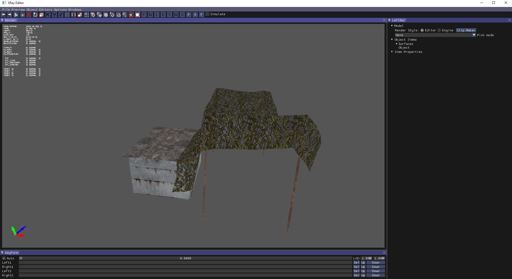
But the basic buttons and their functionality remain in place
Editing Toolbar
Hotkeys in the table are standard (they can be set under Preference > Keyboard > Hotkeys)
| Image | Name | Description | Hotkey | Note |
|---|---|---|---|---|
| Undo | Undo | Ctrl-Z | - | |
| Redo | Redo | Ctrl-Y | - | |
| Select | Used to select objects | - | Before the object can be moved, it must be selected with this button | |
| Add | Adds objects | - | To add an object, select it in the object panel | |
| Move | Allows to move objects | - | - | |
| Rotate | Allows to rotate objects | - | - | |
| Uniform Scale | Allows to scale objects | - | Scale object on all axes | |
| Restrict to X | Locks the object to the X-Axis | - | allowing movement/rotation only on that axis | |
| Restrict to Y | Locks the object to the Y-Axis | - | allowing movement/rotation only on that axis | |
| Restrict to Z | Locks the object to the Z-Axis | - | allowing movement/rotation only on that axis | |
| Restrict to Z/X | Locks the object to the Z and X Axis | - | allowing movement/rotation only on that axis | |
| Parent CS Toggle | ||||
| Non-Uniform Scale | Ignores proportions when scaling | Scale object along the selected axis only | ||
| 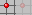 | Grid Snap Toggle | Snap the object to the grid when creating or when Move + Ctrl + LMB | - | |
| Object Snap Toggle | Snap an object to an object when creating or with Move + Ctrl + LMB | - | ||
| Moving Snap To Object Toggle | Snap an object to an object in Move mode | - | ||
| Normal Aligment | Take into account the normal during object snapping | - | ||
| Vertex Snap Toggle | Snap the object to the object vertices when creating or when Move + Ctrl + LMB | - | ||
| Angle Snap Toggle | Discrete rotation | Works when the Rotate button is pressed | ||
| Moving Snap Toggle | Discrete motion | Works when the Move button is pressed | ||
| Zoom Extent | Standard zoom of the entire scene | - | ||
| Zoom Extents Selected | Standard zoom of the selected object | - | ||
| F | Front View | Front View | - | - |
| B | Back View | Back View | - | - |
| L | Left View | Left View | - | - |
| R | Right View | Right View | - | - |
| T | Top View | Top View | - | - |
| B | Bottom View | Bottom View | - | - |
| X | Reset View | Reset View | - | - |
| P | Zoom Extents | Free Camera Mode | - | - |
| A | Zoom Extents Selected | Centers the camera view on the origin of coordinates | - | - |
| F | Zoom Extents Selected | Camera Flight Mode | - | - |
| Simulate | Simulate | Enables physics simulation | Only in Actor & Level Editor | |
| UseSimulatePositions | UseSimulatePositions | Only in Level Editor |
Scene Properties
Options Button
| Render | Description |
|---|---|
| Quality | Render quality |
| Fill Mode | |
| Shade Mode | |
| Edged Face | Enables displaying edges at polygons |
| HW Render | |
| Linear Filter | |
| Textures |
| Options | Description |
|---|---|
| Draw Safe React | |
| Draw Grid | Draw Grid |
| Weather | |
| Fog | |
| Mute Sounds | Mutes sounds from objects that have sound in the SDK |
| Light Scene | Light Scene |
| Real Time | Real Time |
Macro Button
Log Button
Outputs log
Stat Button
Displays scene statistics
Break Button
Status Button
Operation status
Actor Editor
The Actor editor is usually needed to customize objects (NPCs, Objects, etc.)
Interface
Toolbar:
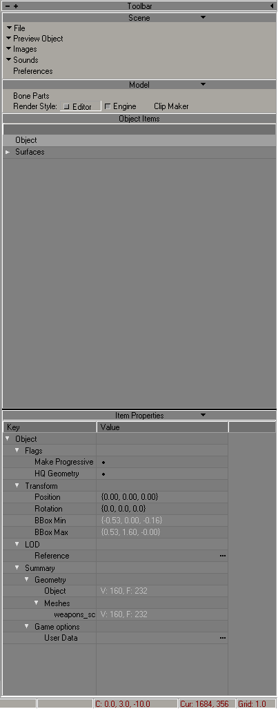
Scene
File Button
| Button | Description | Note |
|---|---|---|
| Clear | Clears scene | - |
| Load | Loads an object into a new scene | - |
| Save | Saves object | - |
| Save As | Saves the object as | .object .lwo |
| Make Trumbnail | Creates trumbnail | Creates a thumbnail from the camera view |
| Open Recent | Opens recent | - |
| Import | Imports the model into the scene | - |
| Optimize Motions | ||
| Batch Convert | ||
| Export | Exports the model to formats | .ogf .omf .obj .dm C++ |
| Quit | Exiting the program | - |
Preview Object Button
| Button | Description | Note |
|---|---|---|
| Custom | After selecting an object in the library it loads the model | It cannot be edited |
| Clear | Clears the scene of objects that were loaded via Preview Object | - |
| Preference | Preference | - |
Images Button
| Button | Description |
|---|---|
| Image Editor | Open Image Editor |
| Synchronize Textures | |
| Check New Textures |
Sounds Button
| Button | Description |
|---|---|
| Sound Editor | |
| Synchronize Sounds |
Preferences Button
Opens a window with preferences

Model
Bone Parts Button
Shows the Bone Parts of the object's skeleton
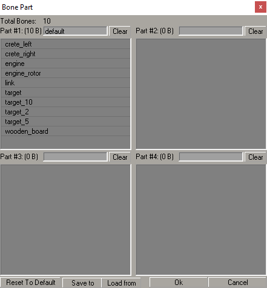
Example Bone Parts object shooting_target_1.object
Render Style
| Render Style | Description |
|---|---|
| Editor | Editor Render Style |
| Engine | Engine (X-Ray 1.6) Render Style |
| Clip Maker |
Object Items
Shows available items at the object (Surface, Object, Motions, Bones, etc.)
Item Properties
Shows parameters of the selected element of the model object
- For the object
| Flags | Description |
|---|---|
| Make Progressive | |
| HQ Geometry |
| Transform | Description |
|---|---|
| Position | |
| Rotation | |
| BBox Min | |
| BBox Max |
| LOD | Description |
|---|---|
| Reference | LOD Reference |
Summary
Displays information about the object
| Game options | Description |
|---|---|
| User Data |
- For surface
| Surface | Description |
|---|---|
| Name | Texture Name |
| Texture | Path to texture |
| Shader | Shader |
| Compile | Compile Shader |
| Game Mtl | Game Mtl Shader |
| 2 Sided | Double-sided texture |
| Face Count | Face Count |
Image Editor
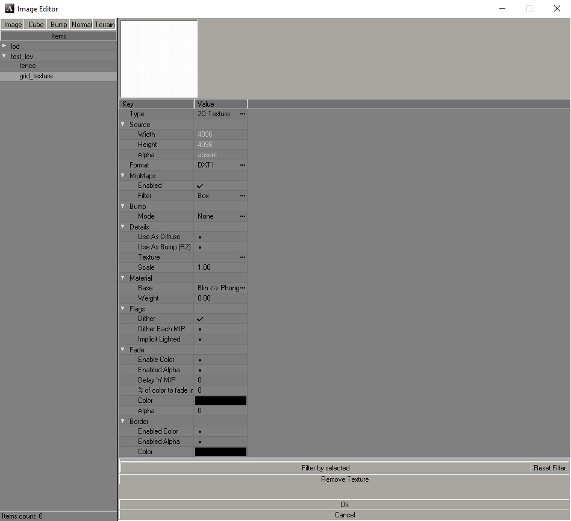
About:
Allows you to edit texture parameters
| Type | Description |
|---|---|
| 2D Texture | |
| Cube Map | |
| Bump Map | |
| Normal Map | |
| Terrain |
Source
Shows the characteristics of the texture. Width, height and alpha channel.
| Format | Description |
|---|---|
| DXT1 | |
| DXT1 Alpha | |
| DXT3 | |
| DXT5 | |
| 16 bit (1:5:5:5) | |
| 16 bit (5:6:5) | |
| 32 bit (8:8:8:8) | |
| 8 bit (alpha) | |
| 8 bit (luminance) | |
| 16 bit (alpha:luminance) |
| MipMaps | Description |
|---|---|
| Enabled | |
| Filter | Advanced Point Box Triangle Quadratic Cubic Catrom Michell Gaussian Sinc Bessel Hanning Hamming Blackman Kaiser |
| Bump | Description |
|---|---|
| Mode | None Use Use parallax |
| Texture | Path to Bump Textures |
| Details | Description |
|---|---|
| Use As Diffuse | |
| Use As Bump (R2) | |
| Texture | |
| Scale |
| Material | Description |
|---|---|
| Base | OrenNayar <-> Blin Blin <-> Phong Phong <-> Metal Metal <-> OrenNayar |
| Weight |
| Flags | Description |
|---|---|
| Dither | |
| Dither Each MIP | |
| Implicit Lighted |
| Fade | Description |
|---|---|
| Enable Color | |
| Enable Alpha | |
| Delay 'n'MIP | |
| % of colot to fade in | |
| Color | |
| Alpha |
| Border | Description |
|---|---|
| Enable Color | |
| Enable Alpha | |
| Color |
Level Editor
Level Editor is used to create locations
Interface
Toolbar

Scene
File Button
| Button | Description | Note |
|---|---|---|
| Clear | Clear scene | Essentially creates a new scene |
| Open | Opens .level file | - |
| Save | Save file | - |
| Save As | Saves as | .level |
| Open Selection | ||
| Save Selection As | Save Selection As | .level |
| Make pack... | - | |
| Open Recent | Opens recent | - |
| Quit | Exiting the program | - |
Scene Button
| Button | Description | Note |
|---|---|---|
| Options | Opens level options | - |
| Validate | Checks the level for errors | - |
| Summary info | Shows information about objects in the scene | - |
| Highlight Texture... | Highlights the selected texture | - |
| Clear Debug Draw | ||
| Export entire Scene as Obj | .object .lwo .txt .xr .wav .obj .ltx .cpp | |
| Export Selection as Obj | .object .lwo .txt .xr .wav .obj .ltx .cpp |
Compile Button
| Button | Description | Note |
|---|---|---|
| Build | Creates a .prj precompilation file | - |
| Make Game | Creates a .game file | - |
| Make Details | Creates a .details file | - |
| Make HOM | Creates a .hom file | |
| Make Sound Occluder | Creates a .som file | |
| Make Ai-Map | Creates a .ai file | - |
| Import Error List | Import Error List | .err |
| Export Error List | Export Error List | .err |
| Clear Error List | Clear Error List | - |
Objects Button
| Button | Description | Note |
|---|---|---|
| Library Editor | Opens the Object Library | Scene should be before the opening |
| Reload Objects | Reload Objects | - |
| Clear Library | Clear Library | - |
| ClipEditor |
Images Button
| Button | Description | Note |
|---|---|---|
| Image Editor | Open Image Editor | - |
| Reload Textures | Reload Textures | - |
| Synchronize Textures | - | |
| Check New Textures | Check New Textures | - |
| Edit minimap | ||
| SyncTHM |
Sounds Button
| Button | Description | Note |
|---|---|---|
| Sound Editor | Open Sound Editor | - |
| Synchronize Sounds | - | |
| Refresh Environment Library | - | |
| Refresh Environment Geometry |
Light Anim Editor Button
Opens Light Anim Library
Object List Button
Shows the list of objects in the scene
Preference
Shows preferences in the editor
Tools
Various object editing tools
Edit Mode
Object type selection list
Eye (
) - shows these objects in the viewport
Snap List
Commands
Allows you to add multiple items at once with random settings
Reference Select
Current Object
Allows you to select a selected object in Library Objects
Objects
Shows the library (Objects, Particles, etc.) based on the one selected in Edit Mode
Blender
These articles will talk about setting up Blender, creating models, etc.
Blender X-Ray Addon
Blender X-Ray Addon for S.T.A.L.K.E.R Latest Versions
What is blender-xray?
blender-xray is an addon for the 3D blender package (blender.org) that is designed to import/export 3D models and animations from S.T.A.L.K.E.R. (engine - X-Ray Engine).
Supported formats
This table lists the X-Ray file formats that the addon can import/export.
| Extension | Description | Can Import | Can Export |
|---|---|---|---|
| .object | Source objects | Yes | Yes |
| .skl | Skeletal animation | Yes | Yes |
| .skls | Skeletal animations in a container | Yes | Yes |
| .ogf | Compiled objects | Yes | Yes |
| .omf | Game skeletal actions | Yes | Yes |
| .anm | Animated paths | Yes | Yes |
| .bones | Bones data | Yes | Yes |
| .dm | Detailed effect models | Yes | Yes |
| .details | Level details | Yes | Yes |
| .level | List of scene objects in the SDK | Yes | Yes |
| level | Game levels | Yes | Yes |
| .part | Scene objects | Yes | No |
| .err | Error list | Yes | No |
Compatibility
(Below are the versions of blender that support the addon. The addon is not tested in other versions of blender:
2.77 2.78 2.79 2.80 2.81 2.82 2.83 2.90 2.91 2.92 2.93
Remark: The addon also works on versions higher than 3.x
Addon installation and setup
Download the latest version of the addon
Go into Blender. Click "Edit" > Preferences ( )
)
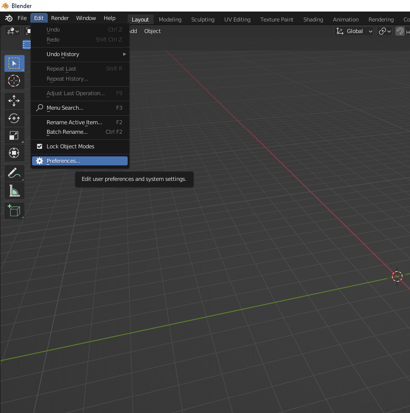
Add-ons > Install ( )
)

Choose the downloaded version of the addon ( ).
).
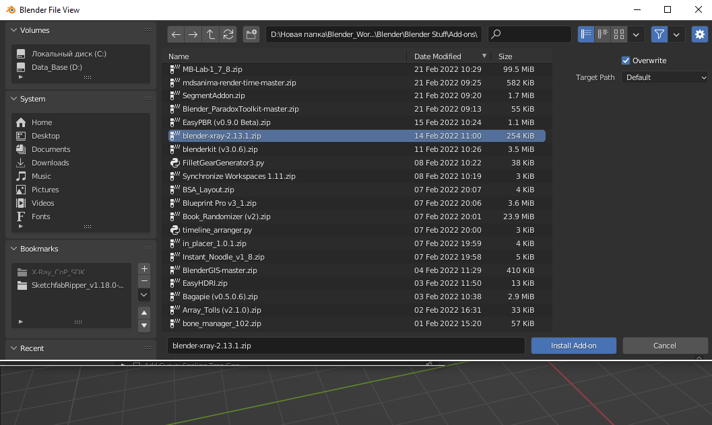
Blender will then notify you that the addon has been successfully installed.
Setup
Find the installed addon in the list of addons.
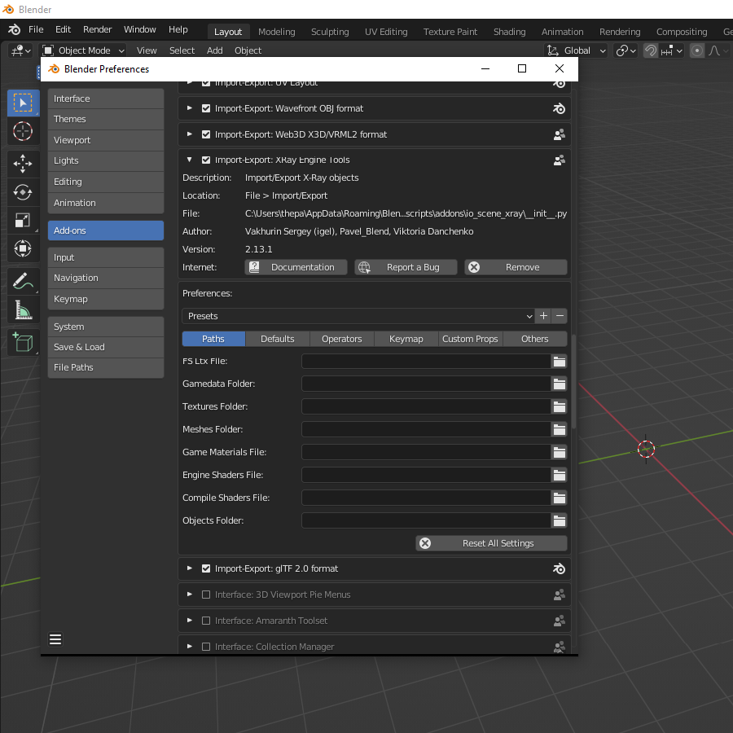
In order to start setting up and using the addon, you need a little theory.
Presets
Addon settings presets. Intended to save settings, with the ability to switch between them. To create a new preset, you must first configure the addon settings and then click the button to the right with the plus ( ) sign. In the window that appears, specify the name of the preset and click OK. To delete a preset, select it from the list and click on the minus (
) sign. In the window that appears, specify the name of the preset and click OK. To delete a preset, select it from the list and click on the minus ( ) button.
) button.

Path Settings
These settings specify paths to external files or directories of X-Ray Engine or X-Ray SDK.It is possible to set paths automatically, based on a single parameter. For example, if you specify the gamedata folder in the Gamedata Folder parameter, empty paths (except, fs.ltx File) will be filled in automatically. Automatically filled paths have text (auto) at the end of the name. To change the path manually, you have to click on the button with a wrench (). The wrench button will disappear and the folder icon button will be displayed instead. You can then open the file browser using the folder button. In the browser, select the desired folder or file. Or you can change the path in the text box by typing it in from the keyboard. If the path is set manually, its value will not be changed automatically by the addon. To return the automatic path indication, you need to clear the path input field.
Example Path Settings:

Once the paths are installed, the setup is pretty much complete. Already at this stage you can work.
P.S
For even more comfortable work it is recommended to go to the tab "Other" and check the box "Compact Import/Export Menus".

If this option is enabled, the import/export menu will keep the operators in a compact form and will be grouped in one X-Ray submenu.
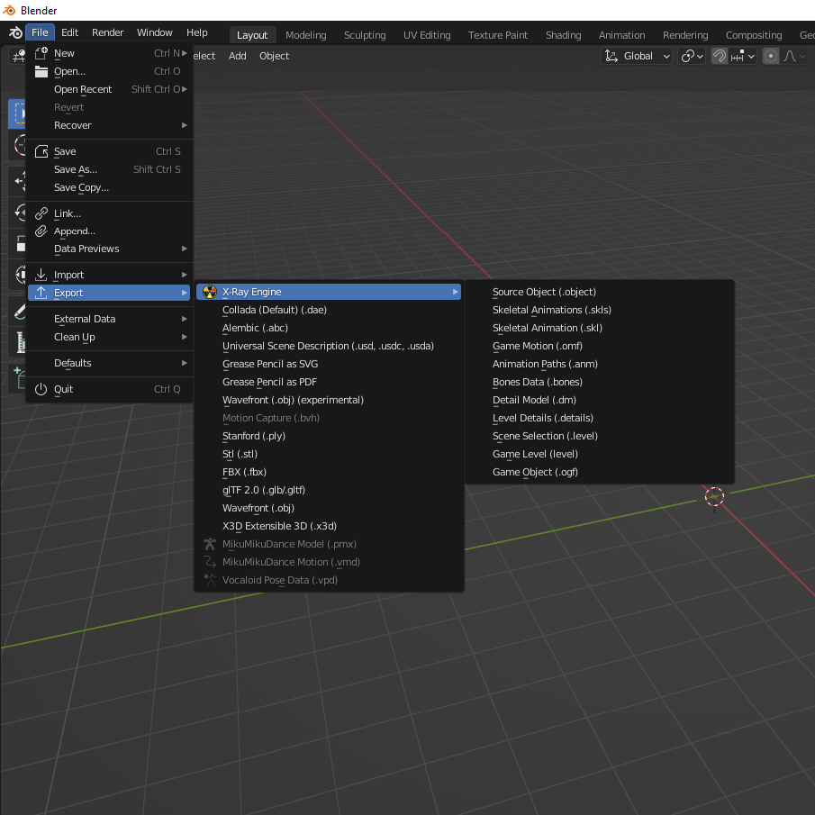
Addon settings options
Description of all addon settings
Description of settings in N-Panel
Skls Browser
Viewer
Allows to view .ogf, .object, .dm, .details files
| Sort | Name | |
| Size | ||
| Use Formats | Object | |
| Ogf | ||
| Dm | ||
| Details | ||
| Checkboxes | Import Motions | Imports animations built into the model |
| Reverse Sort | Reverse sorting | |
| Ignore Extension | Ignores file extensions. нужен для | |
| Show Size | Show file size | |
| Group by Extension | ||
| Select | All | |
| None | ||
| Invert | ||
| Import | Active | |
| Selected | ||
| All | ||
Transforms
Add
| Button | Description |
|---|---|
| Add X-Ray Camera | Adds a camera with approximate standard values as in the game |
Verify
| Button | Description |
|---|---|
| Verify UV | Checks for the correctness of the UV-map of objects(?) |
Batch Tools
Custom Properties
Armature Tools
| Button | Description |
|---|---|
| Create Connected Bones | |
| Create IK | |
| Resize Bones | |
| Link Bones | |
| Unlink Bones |
Joint Limits
| Button | Description |
|---|---|
| Convert Limits to Constraints | |
| Remove Limits Contraints | |
| Convert IK Limits to XRay Limits | |
| Convert XRay Limits to IK Limits | |
| Clear IK Limits |
Rig
Update
| Button | Description |
|---|---|
| Check for Update | Checks for addon updates |
Import
Imports selected formats
Export
Exports selected formats
Paths
These settings specify paths to external files or directories of X-Ray Engine or X-Ray SDK.It is possible to set paths automatically, based on one parameter. For example, if you specify the gamedata folder in the Gamedata Folder parameter, empty paths (except, fs.ltx File) will be filled in automatically. Automatically filled paths have text (auto) at the end of the name. To change the path manually, you have to click on the button with a wrench (). The wrench button will disappear and the folder icon button will be displayed instead. You can then open the file browser using the folder button. In the browser, select the desired folder or file. Or you can change the path in the text box by typing it in from the keyboard. If the path is set manually, its value will not be changed automatically by the addon. To return the automatic path indication, you need to clear the path input field. The addon automatically sets these values:
| Parameter | Value |
|---|---|
| fs.ltx File | - |
| Gamedata Folder | . |
| Textures Folder | .textures\ |
| GameMtl File | .gamemtl.xr |
| EShader File | .shaders.xr |
| CShader File | .shaders_xrlc.xr |
| Objects Folder | ..rawdata\objects |
"-" - means that automatic path setting does not work for this parameter. The automatic path setting will work if you specify any parameter other than Objects Folder first.
Path to the fs.ltx file. This file is in the X-Ray SDK and stores directory paths. Addon uses fs.ltx file only to automatically set the following paths: Gamedata Folder, Textures Folder, GameMtl File, EShader File, CShader File, Objects Folder. Only these variables from the file are used: $game_data$, $game_textures$, $objects$. The files gamemtl.xr, shaders.xr, shaders_xrlc.xr are searched in the directory that is specified in $game_data$. If parameters Gamedata Folder, Textures Folder, GameMtl File, EShader File, CShader File, Objects Folder are already configured, it is not necessary to specify fs.ltx File. Examples of use: this parameter is needed to set paths correctly automatically if fs.ltx file was edited and X-Ray SDK uses paths that are different from gamedata, gamedata\textures, rawdata\objects.
The path that must refer to the gamedata folder (or to the folder specified in $game_data$ if fs.ltx has been changed). This path is used only for automatic installation of the following parameters: Textures Folder, GameMtl File, EShader File, CShader File, Objects Folder. The paths are automatically set by adding Gamedata Folder and preset values. The values are set as follows: Textures Folder - textures, GameMtl File - gamemtl.xr, EShader File - shaders.xr, CShader File - shaders_xrlc.xr, Objects Folder - ..rawdata\objects, where .. in the beginning Objects Folder means go one folder back in path. That is, the path to the Objects Folder will look like this: c:\programs\xray_sdk\rawdata\objects, if Gamedata Folder has the following value: c:\programs\xray_sdk\gamedata.
The path that should refer to $game_textures$. This is usually the gamedata\textures folder which contains the textures. Only the dds format is supported for loading. This path is only used by plugins that import/export formats that support textures (such as .object,.dm, .ogf...). Some plugins do not use this path (for example,.err, *.skls...). When importing some formats, the addon looks for dds textures at this path and loads them into blender.
Path to the gamemtl.xr file. Normally stored in gamedata\gamemtl.xr. This file stores surface materials. In the X-Ray Engine a material is a physical property of the surface, and does not affect the visual presentation (not to be confused with blender materials, which affect visual appearance). X-Ray Engine uses shaders to change the appearance of the surface. The material determines the sounds of footsteps, wallmark textures from shots, friction, particle effects when bullets hit, the ability to get cast shadows from dynamic objects... If this path refers to a gamemtl.xr file, then the list of the parameter GameMtl for materials and dice will be filled with the material names from the gamemtl.xr file and from this list you can click on any material name. If this path does not reference the gamemtl.xr file, then the GameMtl list of materials and bones will be empty. Only the names, text descriptions and integer material IDs are read from the gamemtl.xr file.
The path to the shaders.xr file. Usually stored in gamedata\shaders.xr. This file contains descriptions of shader settings. EShader is an engine shader that is responsible for surface appearance. If this path refers to the shaders.xr file, the EShader list in blender material settings will be filled in with shader names from this file and you will be able to specify any engine shader name from this list. If this path doesn't reference the shaders.xr file, the EShader list of materials will be empty. Only shader names are read from the shaders.xr file.
Path to the shaders_xrlc.xr file. Usually stored in gamedata\shaders_xrlc.xr. This file contains descriptions of the settings that are used by the level geometry compiler (xrLC.exe). CShader - compile shader (compiler shader) specifying properties of the final (game) level geometry to the level compiler. The source geometry, depending on the compiler shader, may have no visible or tangible (for collisions) geometry, have a different way of storing lighting, etc. If this path refers to the shaders_xrlc.xr file, the CShader list in blender materials will fill with shader names from that file and you can specify any compiler shader name from the list. Only shader names are read from shaders_xrlc.xr file.
Path to the folder with the original 3D objects and animations. Usually located in the X-Ray SDK in the rawdata\objects folder. From this folder, the addon can only read *.object and *.skls files. Not all plugins use this folder. Only the object plugin for source objects and the .level plugin for the list of scene objects use it. Also this parameter is used by some operators, for example, Skls File Browser (if you run it from the Motion Refs scroll, Load Active Motion Refs mode). This folder contains the source models and animations in formats that store data without loss of information (without compression).
Sources
Defaults
Here you can set default parameters for many operators
Object
| Operator | Function | Parameter | Description |
| Import | Format version | SoC | Sets the .object format import from Shadow of Chernobyl |
| CS/CoP | Sets the .object format import from Clear Sky and Call of Pripyat (Compatible with Anomaly) | ||
| Import Motions | - | Import embedded motions as actions | |
| Split Mesh by Materials | - | Import each surface (material) as separate set of faces | |
| Export | Format version | SoC | Sets the .object format export from Shadow of Chernobyl |
| CS/CoP | Sets the .object format export from Clear Sky and Call of Pripyat (Compatible with Anomaly) | ||
| Smoothing | Edges | ||
| Normals | |||
| Export Motions | - | Export armatures actions as embedded motions | |
| Texture Names from Image Paths | - | Generate texture names from image paths (by subtract (gamedata/textures) prefix and (file-extension) suffix) | |
| Use Export Path | - | Append the Object.ExportPath to the export directory for each object |
Anm
| Operator | Function | Parameter | Description |
| Import | Create Linked Camera | - | Create animated camera object (linked to "empty"-object) |
| Export | Format Version | 3 4 5 |
Version of the exported .anm format |
Skls
| Operator | Function | Description |
| Import | Add Actions to Motion List | Adds imported .skls animations to Motion List |
Bones
| Operator | Function | Description |
| Import | Import Bone Parts | |
| Import Bone Properties | ||
| Export | Export Bone Parts | |
| Export Bone Properties |
Details
| Operator | Function | Parameter | Description |
| Import | Models in Row | - | |
| Load Slots | - | ||
| Format Version: |
Builds 1096-1230 Builds 1233-1558 | ||
| Export | Texture Names from Image Paths | - | Generate texture names from image paths (by subtract (gamedata/textures) prefix and (file-extension) suffix) |
| Format Version: |
Builds 1569 - CoP Builds 1233-1558 Builds 1096-1230 |
Dm
| Operator | Function | Description |
| Export | Texture Names from Image Paths | Generate texture names from image paths (by subtract (gamedata/textures) prefix and (file-extension) suffix) |
Ogf
| Operator | Function | Description |
| Import | Import Motions | Import embedded motions as actions |
| Export | Texture Names from Image Paths | Generate texture names from image paths (by subtract (gamedata/textures) prefix and (file-extension) suffix) |
| Export Motions | Export armatures actions as embedded motions |
Omf
| Operator | Function | Parameter | Description |
| Import | Import Motions | - | Import embedded motions as actions |
| Import Bone Parts | - | ||
| Add Actions to Motion List | - | Adds imported .omf animations to Motion List | |
| Export | Export Motions | - | Export armatures actions as embedded motions |
| Export Bone Parts | - | ||
| High Quality | - | ||
| Export Mode: |
Overwrite Add Replace |
Scene
| Operator | Function | Parameter | Description |
| Import | Format Version: |
SoC CS/CoP |
|
| Split Mesh by Materials | - | Import each surface (material) as separate set of faces |
Part
| Operator | Function | Parameter | Description |
| Import | Format Version: |
SoC CS/CoP |
|
| Split Mesh by Materials | - | Import each surface (material) as separate set of faces |
Formats
In this section you can disable or enable import/export formats
Custom Props
Others
Others
| Extension | Description |
|---|---|
| Custom Owner Name: | |
| Compact Import/Export Menus | |
| Use *.object Split Normals |
Bones Shape Colors
Here you can adjust colors for bone shapes in different modes
THM Editor
- Program Developer:
- i-love-kfc
- The version described in the article: 1.4
- Ap-pro forum topic
About
Utility for editing .thm files without the need to use the SDK
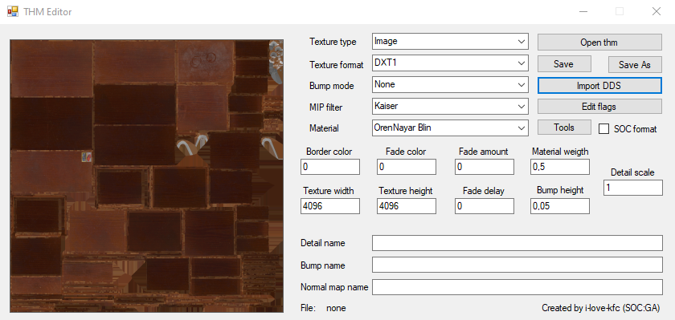
Features
- Changing any available information stored in a .thm file
- Ability to fix incorrectly displayed textures when transferring .thm files from CS/COP
- Ability to create a file from scratch (without loading another .thm file)
Functionality
Fields
| Field | Description |
|---|---|
| Image | |
| Cube Map | |
| Bump Map | |
| Normal Map | |
| Terrain |
| Field | Description |
|---|---|
| DXT1 | |
| ADXT1 | |
| DXT5 | |
| 4444 | |
| 1555 | |
| 565 | |
| RGB | |
| RGBA | |
| NVHS | |
| NVHU | |
| A8 | |
| L8 | |
| A8L8 |
| Field | Description |
|---|---|
| Autogen (S.T.A.L.K.E.R. Builds) | |
| None | |
| Use | |
| Use Parallax |
| Field | Description |
|---|---|
| Box | |
| Cubic | |
| Point | |
| Triangle | |
| Quadratic | |
| Advanced | |
| Catrom | |
| Mitchell | |
| Gaussian | |
| Sinc | |
| Bessel | |
| Hanning | |
| Hamming | |
| Blackman | |
| Kaiser |
| Field | Description |
|---|---|
| OrenNayar Blin | |
| Blin Phong | |
| Phong Metal | |
| Metal OrenNayar |
Buttons
Opens a .thm file
Save file
Imports .dds texture
| Checkbox | Description |
|---|---|
| Generate Mip Maps | |
| Has Alpha | |
| Binary Alpha | |
| Alpha Border | |
| Color Border | |
| Fade To Color | |
| Fade To Alpha | |
| Dither Color | |
| Dither Each MIP Level | |
| Diffuse Detail | |
| Implicit Lighted | |
| Detail Bump | |
| Grey Scale (S.T.A.L.K.E.R. builds) |
| Button | Description |
|---|---|
| Generate thms by .dds | |
| Fix invalid chunks in thms | |
| Validate thms with dds | |
| Convert thms format (SOC/COP) |
-
Chechboxes
-
SOC format
-
Border Color
-
Fade Color
-
Fade Amout
-
Material Weight
-
Detail Scale
-
Texture Width
-
Texture Height
-
Fade Delay
-
Bump Height
-
Detail name
-
Bump name
-
Normal Map name
Sources
Bump Generator
- Program Developer:
- i-love-kfc
- The version described in the article: initial 0.1
- Ap-pro forum topic
About
A simple .bump and .bump# texture generator from normal maps with the ability to use specular maps, also, is capable of generating .bump# for ready-made "green" .bumps.

Features
- Generates .bump and .bump# textures from normal maps (with the ability to use specular maps)
- Generating .bump# for ready-made .bump
- Supports .dds and .tga texture formats.
Functionality
| Generate From | Description |
|---|---|
| From bump (For bump#) | Generates bump# from the bump map |
| From Normal map | Generates bump from the normal map |
| Read Specular map | Whether to use the Specular Map |
| Bump height | Bump height |
Checkboxes
| Checkboxes | Description |
|---|---|
| SOC Fromat thm | Generates SOC .thm file format |
Sources
Sound Attribute Viewer And Tweaker
- Program Developer:
- NatVac
- The version described in the article: 1.1.7
- Official Site
About
Utility designed to simplify working with X-Ray Engine sound files in .ogg format.
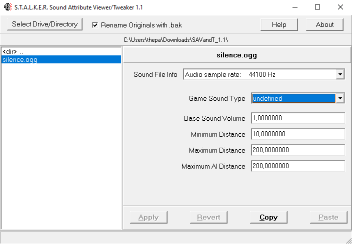
Features
- Easy viewing of comments in files, and other information
- Quick editing of comments, with automatic CRC-32 checksum generation
- Automatic insertion of comment structure into standard *.ogg files (eliminates Missing ogg-comment and Invalid ogg-comment version errors)
- Small executable file that does not require installation
- No hex editor, X-Ray SDK or checksum fixing required
- Help file included, accessible from the utility
Functionality
Buttons
| Button | Description |
|---|---|
| Select Drive/Directory | Selects the path to the directive with the sounds (If you press Ctrl and click on the button the list will reload) |
| Help | Output Help Information |
| About | About |
Checkboxes
| Checkboxes | Description |
|---|---|
| Rename Originals with .bak | Make backup when saving |
Parameters
| Parameters | Description | Possible parameters |
|---|---|---|
| Header (audio file name) | When clicked, it opens the media player installed on your computer and plays only the original .ogg sound (without affecting the settings) | undefined anomaly_idle item_dropping item_hiding item_pickup item_taking item_using NPC_attacking NPC_dying NPC_eating NPC_injuring NPC_step NPC_talking object_breaking object_colliding object_exploding weapon_bullet_hit weapon_empty_click weapon_recharging weapon_shooting world_ambient |
| Sound File Info | Displays some detailed information about the sound itself. These characteristics are shown for information and cannot be changed | |
| Game Sound Type | Determines how the sound will be perceived by NPCs and mutants in the game | |
| Base Sound Volume | Default sound volume in the game at the sound source location | Range is 0.0 - 2.0 |
| Minimum Distance | indicates the distance in meters from the sound source at which it can still be heard at 100% volume | |
| Maximum Distance | Distance in meters from the sound source at which you can no longer hear the sound | |
| Maximum AI Distance | Distance from the sound source (in meters) at which NPCs can no longer hear the sound |
Modified THM Editor by ValeroK
- Program Developers:
- i-love-kfc (Original Author)
- ValeroK
- The version described in the article: 1.1
- Ap-pro forum topic
About
The THM Editor from i-love-kfc was taken as the basis, finalized and fixed. Allows you to work with .thm files.
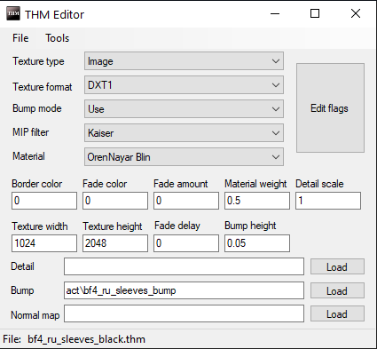
Features
- Supports 99% of thm parameters
Functionality
Hotkeys
- F4 - Open file
- F5, Ctrl+S - Save file
- F6 - Save as
Buttons
| Button | Description |
|---|---|
| Load | Loads the selected .thm |
| Save | Save .thm |
| Save As | Save as .thm |
| Button | Description |
|---|---|
| Import DDS Params | Adjust .thm to the texture format (texture format can be set incorrectly, so sometimes it is worth adjusting it manually) |
| Generate THM for texture | When you select a basic texture, the program creates a thm with basic properties for it (if a texture with the prefix _bump is found, the thm will set all the necessary flags for using bumps) |
| Button | Description |
|---|---|
| Generate Mip Maps | |
| Has Alpha | |
| Binary Alpha | |
| Alpha Border | |
| Color Border | |
| Fade To Color | |
| Fade To Alpha | |
| Dither Color | |
| Dither Each MIP Level | |
| Diffuse Detail | |
| Implicit Lighted | |
| Detail Bump |
-
Chechboxes
-
Shoc format - Shoc format of thm
Fields
| Field | Description |
|---|---|
| Image | |
| Cube Map | |
| Bump Map | |
| Normal Map | |
| Terrain |
| Field | Description |
|---|---|
| DXT1 | |
| ADXT1 | |
| DXT5 | |
| 4444 | |
| 1555 | |
| 565 | |
| RGB | |
| RGBA | |
| NVHS | |
| NVHU | |
| A8 | |
| L8 | |
| A8L8 |
| Field | Description |
|---|---|
| None | |
| Use | |
| Use Parallax |
| Field | Description |
|---|---|
| Box | |
| Cubic | |
| Point | |
| Triangle | |
| Quadratic | |
| Advanced | |
| Catrom | |
| Mitchell | |
| Gaussian | |
| Sinc | |
| Bessel | |
| Hanning | |
| Hamming | |
| Blackman | |
| Kaiser |
| Field | Description |
|---|---|
| OrenNayar Blin | |
| Phong | |
| Phong Metal | |
| Metal OrenNayar |
-
Border Color
-
Fade Color
-
Fade Amout
-
Material Weight
-
Detail Scale
-
Texture Width
-
Texture Height
-
Fade Delay
-
Bump Height
-
Detail
-
Bump
-
Normal Map
Sources
Source Code of Original THM Editor by i-love-kfc
Source Code of Modified THM Editor by ValeroK
Modified Omf Editor by ValeroK
- Program Developers:
- Mortany (Original Author)
- ValeroK
- The version described in the article: 1.2
- Ap-pro forum topic
About
Modified tool for working with .omf format.
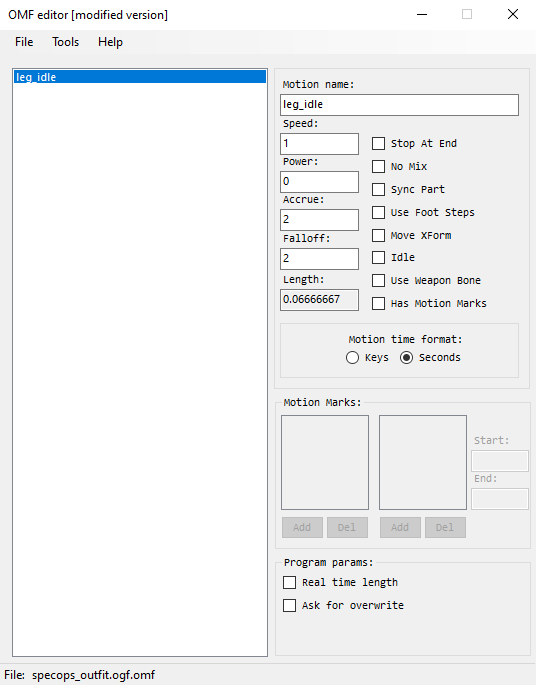
Features
- Multiple omf files
- Clone, delete, save selected animations
- Working with motion marks
- Working with flags
- Ability to save in skls, skl via
- Fix Gunslinger mod animations
- Displaying of bone parts animation, possibility to convert into ltx format for import into SDK
- Hotkeys
- A lot of bug fixes and crashes from the original version.
- Changing of name of bones
- Viewing of Bone parts
Functionality
Hotkeys
- F4 - Open file
- F5 and Ctrl+S - Save file
- F6 - Save as
- Delete - deletes selected animations
Buttons
| Button | Description |
|---|---|
| Load | Loads the selected .omf |
| Save | Save .omf |
| Save As | Save as .omf or .skls or .skl |
| Exit | Exits the program |
| Button | Description |
|---|---|
| Merge With | Merge the file with another .omf |
| Add Anims From | Add animations from other .omf (need to know the name of the animation to be added) |
| Try Repair | Trying to fix an animation file (for example, the animation from Gunslinger Mod) |
| Swap Anim Marks | Open the .omf file, make it the main file and transfer all the motion marks from the old file to the new one in the animation with the same names |
| Rename Bones | Allows you to change the name of the bones |
| Show Bone Parts | Ability to view Bone Parts |
| Button | Description |
|---|---|
| Open Source Code | It will take you to the source code site |
Animation options
| Parameters | Description |
|---|---|
| Motion Name | Animation name |
| Speed | Animation speed |
| Power | The power of animation |
| Accrue | |
| Falloff | |
| Length | Animation length |
| Parameters | Description |
|---|---|
| Stop at End | Animation will stop after playback |
| No Mix | Does not mix animation when switching to other animations |
| Sync Part | |
| Use Foot Steps | |
| Move XForm | |
| Idle | |
| Use Weapon Bone | |
| Has Motion Marks | Adds the ability to use Motion Marks |
| Format | Description |
|---|---|
| Keys | |
| Seconds |
Program parameters
| Parameter | Description |
|---|---|
| Real Time Lenght | Multiplies all visual timers by animation speed |
| Ask for Overwrite | When merging animations will ask to overwrite each animation |
Sources
Source code of Original Omf Editor by Mortany
Source code of Modified Omf Editor by ValeroK
Modified OGF Editor by ValeroK
- Program Developers:
- Mortany (Original Author)
- ValeroK
- The version described in the article: 3.8
- Ap-pro forum topic
About
Tool for working with .ogf and .dm format

Features
- Ability to work with all .ogf parameters
- Ability to work with meshes in .ogf
- Viewport
- Integration with OGF Viewer and OMF Editor
- Saving .ogf in .object, .skl, .skls, .bones formats (list of formats here)
- Hotkeys
- Fix Gunslinger models (models are fixed automatically when you save them)
Functionality
Hotkeys
- F4 - Load file
- Ctrl+S - Save file
- F6 - Save as
- F3 - Reload file
Buttons
| Button | Description |
|---|---|
| Load | Loads the selected .ogf |
| Save | Save .ogf |
| Save As | Save as .ogf |
| Export | Export as .object .bones .obj .omf .skl .skls |
| Reload | Reloads the program |
| Exit | Exits the program |
| Button | Description |
|---|---|
| Open in Object Editor | Open in Object Editor |
| Import OGF Params | Imports parameters of another .ogf with selectable parameters |
| Recalc Normals | Recalculates the normals of the selected mesh |
| Recalc Bounding Box | Recalculates Bounding Box |
| Remove Progressive Meshes | Remove Progressive Meshes |
| Move/Rotate Model | Move/Rotate Model |
| Converter | NPC CoP to SoC NPC SoC to CoP |
Display information about the loaded OGF
| Field | Description |
|---|---|
| OGF Version | The .ogf version |
| Model Type | Model type |
| Motions Refs | Motions Refs |
| Motions | Motions |
| Links | Links |
| Verts | Verts |
| Faces | Faces |
| Field | Description |
|---|---|
| Source File | Source file |
| Converter | Converter |
| Creator | Creator |
| Editor | Editor |
| Export Time | Export Time |
| Creation Time | Creation Time |
| Modified Time | Modified Time |
| Button |
|---|
| Repair timers |
| Field |
|---|
| Image path |
| FS Ltx path |
| Textures path |
| Game Mtl path |
| OMF Editor path |
| Object Editor path |
| Button |
|---|
| Load textures alpha channel in Viewport - slow loading |
Changes the format of motion references for the model
Checkboxes
| Field | Description |
|---|---|
| Create Backup | Creates a backup file |
Sections
Section with texture and shader path editing. Also here can delete or move meshes of the model (If there is only one mesh, you cannot delete it)
Mesh: [Mesh number]
| Field | Description |
|---|---|
| Texture Path: | Path to texture |
| Shader Name: | Shader |
File with userdata
A field with paths for animation
Displays animations that are built into the model
If you right-click on this field, then the context menu will pop up where you can:
| Button | Description |
|---|---|
| Edit | Opens the OMF Editor (first, you need to specify the path to it in the settings) |
| Load | Loads selected .omf files as an embedded movement |
| Delete | Deletes all downloaded animations |
Displays a list of bones and their number
Editing the bone parameter
Bone id: [Bone number]
| Field | Description |
|---|---|
| Bone Name | Bone Name |
| Parent Bone | Parent Bone |
| Material | Material |
| Mass | Mass |
| Center Of Mass | Center of mass |
| Position | Bone position |
| Rotation | Bone rotation |
Specifies the path to the Lod model
Viewport
Sources
Source Code of Original OGF Editor by Mortany
Source Code of Modified OGF Editor by ValeroK
Object Tool (or XRay Export Tool)
- Program Developers:
- RedPandaProject (BearIvan and other) (Original Authors)
- ValeroK
- The version described in the article: 4.35
- Ap-pro forum topic
About
Tool for fast editing and exporting raw stalker formats
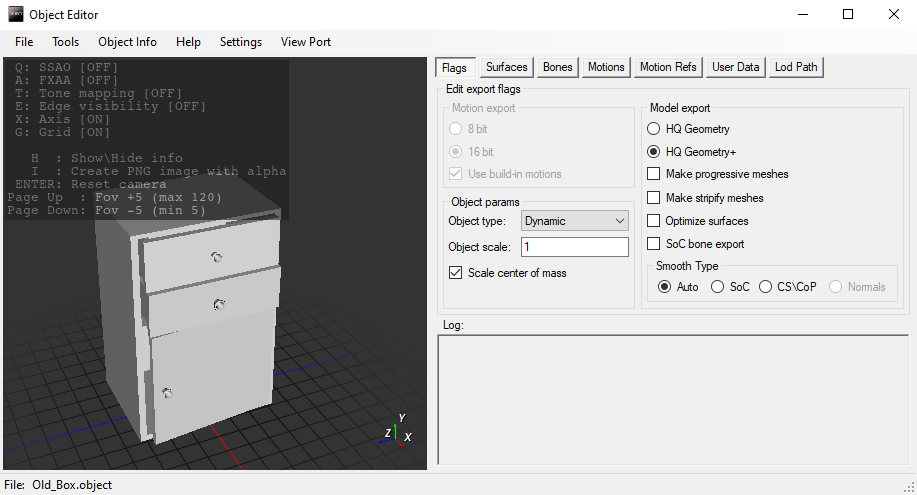
Features
- Uncompressed ogf export (HQ Geometry+)
- Removed the limit on the maximum number of vertexes in 65535
- HQ Geometry with patches, exports better than SDK
- Save and load .bones settings
- Load, save, delete .skls animations
- Export animations in 8 bit, 16 bit and uncompressed
- Optimization of meshes with the same textures and shaders is disabled by default (they will not merge into one when exported so you can edit them in the OGF Editor)
- Tuning and collision generation
- Ability to resize models and animations when exporting, keeping the modifier in .object
- Editing Userdata
- Editing LOD
- Editing Motion refs
- Export models with original normals without X-Ray anti-aliasing groups
- Generating LOD models
- Removed the limit on the number of polygons for static meshes
- Viewport displaying the model with textures
| Supported formats |
|---|
| .object |
| .ogf |
| .omf |
| .skl |
| .skls |
| .bones |
| .dm |
| .obj (wavefront) |
| .ltx (bone parts) |
Functionality
Hotkeys
- F3 - Export
- F4 - Load
- F5, Ctrl+S - Quick Save .object
- F6 - Save
- Ctrl+Del - Closing the current process
Buttons
| Button | Description |
|---|---|
| Load | Imports the selected .object, .skl/.skls, .bones, Bone Parts, Motions Refs, User Data |
| Save | Save file |
| Save As | Saves the file as a .object, .skl, .skls, .bones, Bone Parts file |
| Export | Exports the file as an .ogf, .omf, .object, .dm, C++ (All info/ Vertex/ Faces/ Vertex Normals/ Normals), Motions Refs, User Data |
| Delete | Deletes skls/ Bone parts to default |
| Batch Convert | From ltx/ From File Dialog (To OGF/ To OMF)/ From Folder Dialog (To OGF/ To OMF) |
| Exit | Exit program |
| Button | Description |
|---|---|
| Surface Params | Enable all 2 sided/Disable all 2 sided |
| Shape Params | All None - All Box - All Sphere - All Cylinder |
| Generate Shapes | Generates shapes for bones |
| Generate LOD | Open the LOD generation tab |
| Import Object Params | Imports parameters from another object |
Generate LOD
Allows you to adjust the quality of Lod.
| Checkbox | Description |
|---|---|
| Make progressive meshes | Make progressive meshes |
Outputs information about the loaded object
Outputs useful information about aspects and settings of the program
The default settings menu, where you can set the default values of the parameters, as well as activate additional functions, such as:
| Checkboxes | Description |
|---|---|
| Use No Compress motions (Need STCoP Reader) | Activates a new animation compression option, by selecting which animations will be exported without compression. Requires a commit in the engine from STCoP WP |
| Program debugging | Activates the tab with buttons for debugging |
| Force Viewport Load | Viewport is automatically loaded each time a file is loaded (slows down loading) |
| Field | Description |
|---|---|
| Image path: | Folder for generated screenshots from viewport |
| FS Ltx path: | If you select fs.ltx, the program will automatically add all other paths to the gamedata files |
| Textures path: | Texture folder for viewport |
| Game Mtl path: | Path to gamemtl.xr file. After that you can select and apply materials to the bones (Bones tab) |
| Button | Description |
|---|---|
| Reload | Reload viewport |
| Refresh textures | Refresh textures in viewport |
| Open Image folder | Open Image folder |
Sections
Edit Export Flags
Motion Export
| Checkboxes | Description |
|---|---|
| 8 bit | Compression animation for the SoC format |
| 16 bit | Compression animation for CoP format |
| Use build-in motions | When activated, the program will use the downloaded animations instead of the motion references. If there are no animations, the reference animations will be used, if any. When deactivated, the loaded animations will be ignored. Affects everything except Object saves. |
| Field | Description |
|---|---|
| Object Type | Object Type |
| Object Scale | Changes the size of the object when exporting, affecting the size of the model and the size of animations |
| Checkboxes | Description |
|---|---|
| Scale Center of Mass | If you export with a resized object, the collision centers of mass will be recalculated to the new size |
Model Export
| Checkboxes | Description |
|---|---|
| HQ Geometry | |
| HQ Geometry + | Exports the model without optimization of vertices and faces |
| Make Progressive Meshes | Creates progressive meshes when exporting OGF |
| Make Stripify Meshes | Includes optimized vertices and faces on meshes (Optimize meshes for old DirectX and video cards) |
| Optimize Surfaces | Combines meshes with the same texture and shader names |
| SoC bone export | When exporting a dynamic OGF, the polygon will be affected by a maximum of 2 bones. When disabled, a CoP influence of 4 bones will be enabled (not supported in SoC). |
Smooth Type
| Checkboxes | Description |
|---|---|
| SoC | Smoothing type for SoC |
| CS\CoP | Smoothing type for CS/CoP |
| Normals | Using the original Split normal, new format |
Log
Outputs the program log
Texture Name
| Field | Description |
|---|---|
| Texture | Texture path |
| Shader | Shader path |
| Checkboxes | Description |
|---|---|
| 2 Sided | After exporting the .ogf the model will be rendered from the outside and inside. Increases the number of polygons in the model by a factor of 2. |
Bone Name: Bone name
| Checkboxes | Description |
|---|---|
| No Pickable | When activated, Ray Querry and hit wallmarks will skip this element |
| No Physics | When activated, the engine ignores the physics of the shape |
| Remove After Break | When activated, all bones, after spawning an object, will start a timer "remove_time" from the config, after which the object will be removed |
| No Fog Collider | When activated Volumetric Fog will ignore this element |
| Checkboxes | Description |
|---|---|
| Shape Type: | None - Box - Sphere - Cylinder |
| Field | Description |
|---|---|
| Material | Determines the material of the bone on impact/collision, etc. Which affects sound and particles |
| Mass | Bone mass |
Shows the animations that are contained in the file
Shows the Motion Reference that is contained in the file
Shows Used Data file
| Checkboxes | Description |
|---|---|
| LOD Path | Path to LOD |
Sources
Original Source Code by RedPandaProject (BearIvan and other)
Modified Source Code by ValeroK
Universal x64 level compilers
- Program Developer:
- GCS Game Word
- Compiler edits and build:
- SkyLoader
- Acknowledgements:
- Abramcumner
- K.D.
- The version described in the article: 1.3
- Ap-pro forum topic
About
Universal level compiler that supports the compilation format for games of all series and has many keys to compile
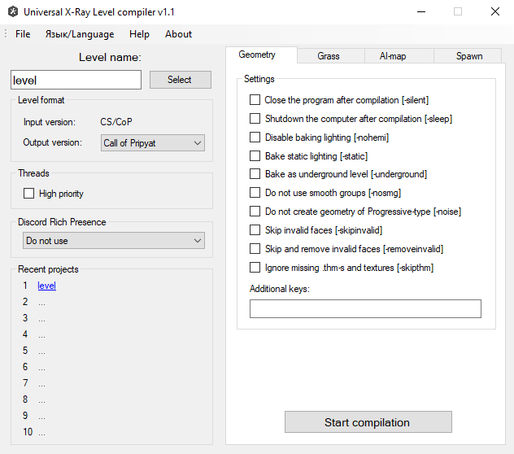
Compilation of compilers
- Geometry compiler (SoC, CS, CoP)
- Grass compiler (SoC, CS, CoP)
- AI grid compiler (SoC, CS, CoP)
- Spawn Compiler (SoC, CS, CoP)
Features
- Support for x64
- Support for major games in the series (except for spawn formats)
- All compilers united in one application
- Interface completely rewritten in WinForms
- Added compiler menu, where you can choose a project level, set certain settings and run the compilation
- A system for saving and loading settings of recent projects has been added
- The number of threads created is no longer fixed, but depends on the number of processor cores
- Migration to DirectXTex library to replace FreeImage and nvDXT now obsolete
- Removed rendering of RGB and Sun lighting components, leaving only Hemi
- Some phases of compilation and code parsing of third-party libraries were made
- Integrated Discord Rich Presence to be able to monitor the status of compilation on a remote PC
- Added an option to automatically shutdown the PC after compilation
- Implemented a progress bar in the taskbar to display the current compilation status when minimized
- Added keys for the accelerated compilation of levels for testing purposes.
- Added experimental switches to disable some compilation phases and bypass KKS parameters
- Added major changes to past compilers
- Expanded information output on some bugs
- Fixed some crashes of the original compilers
It requires Microsoft Visual C++ 2017 Redistributable x64 installed.
Setup
The files must be moved to the root folder of the SDK
Functionality
Buttons
| Button | Description |
|---|---|
| Recent Projects | Recent Projects |
| Exit | Exit |
| Button | Description |
|---|---|
| English | English language |
| Русский | Russian language |
| Button | Description |
|---|---|
| Help | Shows helpful information |
| Button | Description |
|---|---|
| About | About the program |
Level Name
| Button | Description |
|---|---|
| Select | Selects the level for compilation |
Level Format
- Input Version: (Input version of the level format)
- Output Version: (Output version of the level format)
Threads
| Checkboxes | Description |
|---|---|
| High Priority | Enables high priority |
Discord Rich Presence
- Do not use
- Show compilation status only
- Show level name and status
Recent Projects
Keys
Geometry Keys
| Key | Description |
|---|---|
| -silent | Close the program after compilation |
| -sleep | Shutdown the computer after compilation |
| -nohemi | Disable baking lighting |
| -static | Bake static lighting |
| -underground | Bake as underground level |
| -nosmg | Do not use smooth groups |
| -noise | Do not create geometry of Progressive-type |
| -skipinvalid | Skip invalid faces |
| -removeinvalid | Skip and remove invalid faces |
| -skipthm | Ignore missing thm-s and textures |
Grass
| Key | Description |
|---|---|
| -silent | Close the program after compilation |
| -sleep | Shutdown the computer after compilation |
| -nohemi | Disable baking lighting |
| -static | Bake static lighting |
| -skipthm | Ignore missing thm-s and textures |
AI-Map
Build Ai-Map
| Key | Description |
|---|---|
| -draft | Do not calculate covers |
| -skipthm | Ignore missing thm-s and textures |
Check Ai-Map
| Key | Description |
|---|---|
| -noverbose | Do not show info about single nodes |
Spawn
| Key | Description |
|---|---|
| -no_separator_check | Disable some conflicts |
Additional spawns
| Buttons | Description |
|---|---|
| Add | |
| Remove | |
| Clear |
Spawn name
| Checkboxes | Description |
|---|---|
| by default | Renames the .spawn file by default (name chosen from the folder name) |
- Spawn name - Spawn name
Additional keys
Additional keys for geometry compilation
| Key | Description |
|---|---|
| -tex_rgba | do not use compression for stored textures |
| -tex_bc7 | use BC7 compression for stored textures (format is only supported on DX11) |
| -cform | export only collision level |
| -nocform | skips the creation of level.cform |
| -notess | do not tessellate the geometry |
| -noweld | disable small triangles welding |
| -nomerge | skip the Merging geometry stage |
| -noimpl | don't bake lighting for terrain |
| -noresize | don't resize bigger textures to 1024x1024 |
| -nostrip | disable geometry optimization and streamlining |
| -dx_opt | turn on D3DX optimizer geometry optimization instead of NvTriStrip |
| -gi | turn on the Radiosity phase |
| -no_mt_mu | don't run the lighting calculation for Multiple Usage objects in parallel with the main compilation |
| -high | higher priority for the threads |
| -saveobj_base | save all level geometry in obj files (basic sweep) |
| -saveobj_lmap | save all the level geometry to the obj files (lightmap sweep) |
| -saveobj_cform | save all the collision level in the obj file |
| -qual_draft | set the quality of the scene in Draft (does not affect the exposed shaders) |
| -qual_high | set the quality of the scene to High (does not affect the exposed shaders) |
| -ppm (number) | set the quality of lightmaps instead of the value in KFK |
| -weld_dist (number) | set Weld distance instead of the KFD value |
| -hemi_bias (number) | set the offset of the beam position when baking hemi (default: 0.1, original: 0.001) |
| -insert_graph | enable adding graphs to common spawn when building a SoC Level (Key for SoC only) |
Common additional keys
| Key | Description |
|---|---|
| -help | call help with a list of all startup keys |
| -t (number) | set number of threads for multithreaded operations (does not work with the -tbb switch) |
| -fsltx (file_name) | use your ltx instead of fsgame.ltx |
| -log_name (file_name) | create a log file with this name. Useful for compiling locations by queue |
| -tbb | use TBB multithreading (not recommended) |
xrCompress
- Program Developers:
- OGSR (Original Authors)
- i-love-kfc
- The version described in the article: 0.1
- Ap-pro forum topic
Fixes
Fix by macron - Replace the file xrCompress_Cfg.ltx with the downloaded
About
Updated .db/.xdb archiver
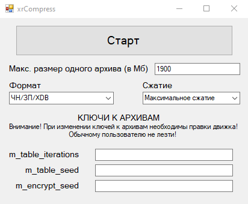
Features
- Can be packed in any part of the game
- Ability to set your own encryption keys
Functionality
Buttons
| Button | Description |
|---|---|
| Старт | Start |
| Fields | Description |
|---|---|
| Макс. размер одного архива (в Мб) | Max size of one archive (in MB) (Up to 1900 MB) |
| Формат | Format |
| Сжатие | Compression |
| m_table_iterations | |
| m_table_seed | |
| m_encrypt_seed |
Sources
Resources
About
This section contains resources that may be useful for modding. (source models, rawdata from different SDKs, etc.)
Audio
All soundtracks from the original trilogy
| Artist | Soundtrack name | Preview | Note |
|---|---|---|---|
| MoozE | Theme of Escape | Preview | |
| MoozE | Stalker_extract (Alternative Version of "Theme of Escape") | Preview | Cut from the original game |
| MoozE | Theme of Garbage | Preview | |
| MoozE | Theme of 'Red Forest' | Preview | |
| MoozE | Tunnels | Preview | |
| MoozE | Dark Valley | Preview | |
| MoozE | Fog | Preview | |
| MoozE | Heat | Preview | |
| MoozE | S.A.D. | Preview | |
| MoozE | Junk | Preview | |
| MoozE | Elemental Room | Preview | |
| MoozE | Zone Triggers | Preview | |
| MoozE | Mutation | Preview | |
| MoozE | The Thing | Preview | |
| MoozE | Dead Cities Pt.1 | Preview | |
| MoozE | Dead Cities Pt.2 | Preview | |
| MoozE | Radwind Pt.1 | Preview | |
| MoozE | Radwind Pt.2 | Preview | |
| MoozE | Anomaly Reborn | Preview | |
| MoozE | Cold/Freezing Out | Preview | |
| MoozE | Sleeping in Ashes v.1 | Preview | |
| MoozE | Sleeping in Ashes v.2 | Preview | |
| MoozE | Web Amb#1 | Preview | |
| MoozE | Web Amb#2 | Preview | |
| MoozE | Web Amb#3 | Preview | |
| MoozE | Rads Pt.1 | Preview | |
| MoozE | Wasteland | Preview | Cut from the original game |
| MoozE | Wasteland II | Preview | |
| MoozE | Res | Preview | Cut from the original game |
| MoozE | Epilogue | Preview | |
| MoozE | Battle exp. | Preview | Cut from the original game |
| MoozE | Predator | Preview | Cut from the original game |
| MoozE | Trailer part 1 | Preview | |
| MoozE | Trailer part 2 | Preview | |
| MoozE | Mud | Preview | Cut from the original game |
| MoozE | Mechanized Patrol | Preview | |
| Addaraя | Gurza Dreaming | Preview | |
| Atroxis | Credits | Preview | |
| Atroxis | Intro part 1 | Preview | |
| Atroxis | Intro part 2 | Preview | |
| Kaos | Invisible Dangers. Part 1 (Trailer) | Preview | |
| Kaos | Invisible Dangers. Part 2 (Trailer) | Preview | |
| Alexey Omelchuk | Swamps of Despair | Preview | |
| Alexey Omelchuk | Shadows | Preview | |
| Alexey Omelchuk | Ghost City | Preview | |
| Alexey Omelchuk | Hospital | Preview | |
| Alexey Omelchuk | Intro | Preview | |
| Alexey Omelchuk | Theme of Zaton. Day | Preview | |
| Alexey Omelchuk | Theme of Zaton. Night | Preview | |
| Alexey Omelchuk | Theme of Jupiter. Day | Preview | |
| Alexey Omelchuk | Theme of Jupiter. Night | Preview | |
| Alexey Omelchuk | Theme of Pripyat. Day | Preview | |
| Alexey Omelchuk | Theme of Pripyat. Night | Preview | |
| Alexey Omelchuk | Combat Theme 1 | Preview | |
| Alexey Omelchuk | Combat Theme 2 | Preview | |
| Alexey Omelchuk | Combat Theme 3 | Preview | |
| Alexey Omelchuk | Combat Theme 4 | Preview | |
| Alexey Omelchuk | Outro | Preview |
All soundtracks from Anomaly
| Artist | Soundtrack name | Preview |
|---|---|---|
| Gates of Morheim | Dying Machine | Preview |
| Gates of Morheim | Mechanical Consciousness | Preview |
| Gates of Morheim | Steel Dawn | Preview |
| Gates of Morheim | Skyways | Preview |
| Gates of Morheim | The Above | Preview |
| Gates of Morheim | Fog | Preview |
| Gates of Morheim | Home | Preview |
Blender Stuff
Models
Blender Stalker Asset Library - Library of models to place in Blender

Source objects of the original trilogy
Animations
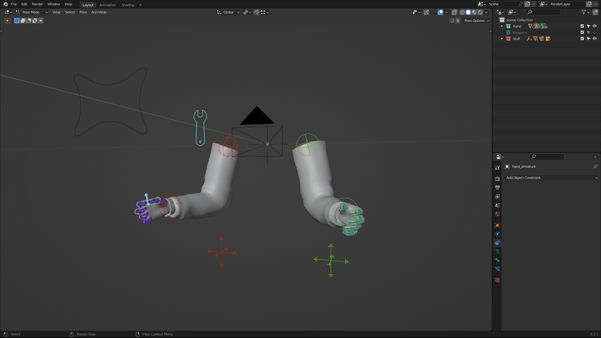
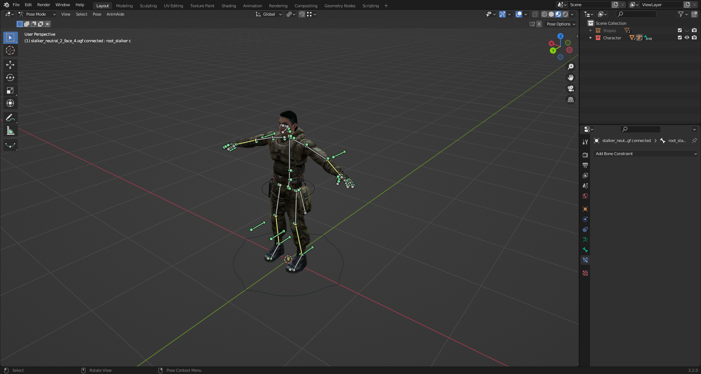
SDK resources
SDK 0.4 (SoC)
SDK 0.5 (CS)
SDK 0.7 (CoP)
- [gamedata]
- rawdata